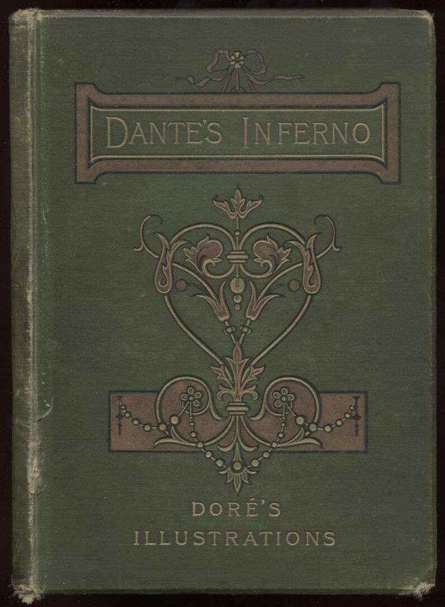

{kind=link}
LIST OF CANTOS
CANTO I
{kind=link}
In the midway of this our mortal life,
I found me in a gloomy wood, astray
Gone from the path direct: and e’en to tell
It were no easy task, how savage wild
That forest, how robust and rough its growth,
Which to remember only, my dismay
Renews, in bitterness not far from death.
Yet to discourse of what there good befell,
All else will I relate discover’d there.
How first I enter’d it I scarce can say,
Such sleepy dullness in that instant weigh’d
My senses down, when the true path I left,
But when a mountain’s foot I reach’d, where clos’d
The valley, that had pierc’d my heart with dread,
I look’d aloft, and saw his shoulders broad
Already vested with that planet’s beam,
Who leads all wanderers safe through every way.
Then was a little respite to the fear,
That in my heart’s recesses deep had lain,
All of that night, so pitifully pass’d:
And as a man, with difficult short breath,
Forespent with toiling, ’scap’d from sea to shore,
Turns to the perilous wide waste, and stands
At gaze; e’en so my spirit, that yet fail’d
Struggling with terror, turn’d to view the straits,
That none hath pass’d and liv’d. My weary frame
After short pause recomforted, again
I journey’d on over that lonely steep,
{kind=link}
The hinder foot still firmer. Scarce the ascent
Began, when, lo! a panther, nimble, light,
And cover’d with a speckled skin, appear’d,
Nor, when it saw me, vanish’d, rather strove
To check my onward going; that ofttimes
With purpose to retrace my steps I turn’d.
The hour was morning’s prime, and on his way
Aloft the sun ascended with those stars,
That with him rose, when Love divine first mov’d
Those its fair works: so that with joyous hope
All things conspir’d to fill me, the gay skin
Of that swift animal, the matin dawn
And the sweet season. Soon that joy was chas’d,
And by new dread succeeded, when in view
A lion came, ’gainst me, as it appear’d,
{kind=link}
With his head held aloft and hunger-mad,
That e’en the air was fear-struck. A she-wolf
Was at his heels, who in her leanness seem’d
Full of all wants, and many a land hath made
Disconsolate ere now. She with such fear
O’erwhelmed me, at the sight of her appall’d,
That of the height all hope I lost. As one,
Who with his gain elated, sees the time
When all unwares is gone, he inwardly
Mourns with heart-griping anguish; such was I,
Haunted by that fell beast, never at peace,
Who coming o’er against me, by degrees
Impell’d me where the sun in silence rests.
While to the lower space with backward step
I fell, my ken discern’d the form one of one,
Whose voice seem’d faint through long disuse of speech.
When him in that great desert I espied,
“Have mercy on me!” cried I out aloud,
“Spirit! or living man! what e’er thou be!”
He answer’d: “Now not man, man once I was,
And born of Lombard parents, Mantuana both
By country, when the power of Julius yet
Was scarcely firm. At Rome my life was past
Beneath the mild Augustus, in the time
Of fabled deities and false. A bard
Was I, and made Anchises’ upright son
The subject of my song, who came from Troy,
When the flames prey’d on Ilium’s haughty towers.
But thou, say wherefore to such perils past
Return’st thou? wherefore not this pleasant mount
Ascendest, cause and source of all delight?”
“And art thou then that Virgil, that well-spring,
From which such copious floods of eloquence
Have issued?” I with front abash’d replied.
“Glory and light of all the tuneful train!
May it avail me that I long with zeal
Have sought thy volume, and with love immense
Have conn’d it o’er. My master thou and guide!
Thou he from whom alone I have deriv’d
That style, which for its beauty into fame
Exalts me. See the beast, from whom I fled.
O save me from her, thou illustrious sage!
{kind=link}
“For every vein and pulse throughout my frame
She hath made tremble.” He, soon as he saw
That I was weeping, answer’d, “Thou must needs
Another way pursue, if thou wouldst ’scape
From out that savage wilderness. This beast,
At whom thou criest, her way will suffer none
To pass, and no less hindrance makes than death:
So bad and so accursed in her kind,
That never sated is her ravenous will,
Still after food more craving than before.
To many an animal in wedlock vile
She fastens, and shall yet to many more,
Until that greyhound come, who shall destroy
Her with sharp pain. He will not life support
By earth nor its base metals, but by love,
Wisdom, and virtue, and his land shall be
The land ’twixt either Feltro. In his might
Shall safety to Italia’s plains arise,
For whose fair realm, Camilla, virgin pure,
Nisus, Euryalus, and Turnus fell.
He with incessant chase through every town
Shall worry, until he to hell at length
Restore her, thence by envy first let loose.
I for thy profit pond’ring now devise,
That thou mayst follow me, and I thy guide
Will lead thee hence through an eternal space,
Where thou shalt hear despairing shrieks, and see
Spirits of old tormented, who invoke
A second death; and those next view, who dwell
Content in fire, for that they hope to come,
Whene’er the time may be, among the blest,
Into whose regions if thou then desire
T’ ascend, a spirit worthier than I
Must lead thee, in whose charge, when I depart,
Thou shalt be left: for that Almighty King,
Who reigns above, a rebel to his law,
Adjudges me, and therefore hath decreed,
That to his city none through me should come.
He in all parts hath sway; there rules, there holds
His citadel and throne. O happy those,
Whom there he chooses!” I to him in few:
“Bard! by that God, whom thou didst not adore,
I do beseech thee (that this ill and worse
I may escape) to lead me, where thou saidst,
That I Saint Peter’s gate may view, and those
Who as thou tell’st, are in such dismal plight.”
Onward he mov’d, I close his steps pursu’d.
{kind=link}
CANTO II
{kind=link}
Now was the day departing, and the air,
Imbrown’d with shadows, from their toils releas’d
All animals on earth; and I alone
Prepar’d myself the conflict to sustain,
Both of sad pity, and that perilous road,
Which my unerring memory shall retrace.
O Muses! O high genius! now vouchsafe
Your aid! O mind! that all I saw hast kept
Safe in a written record, here thy worth
And eminent endowments come to proof.
I thus began: “Bard! thou who art my guide,
Consider well, if virtue be in me
Sufficient, ere to this high enterprise
Thou trust me. Thou hast told that Silvius’ sire,
Yet cloth’d in corruptible flesh, among
Th’ immortal tribes had entrance, and was there
Sensible present. Yet if heaven’s great Lord,
Almighty foe to ill, such favour shew’d,
In contemplation of the high effect,
Both what and who from him should issue forth,
It seems in reason’s judgment well deserv’d:
Sith he of Rome, and of Rome’s empire wide,
In heaven’s empyreal height was chosen sire:
Both which, if truth be spoken, were ordain’d
And ’stablish’d for the holy place, where sits
Who to great Peter’s sacred chair succeeds.
He from this journey, in thy song renown’d,
Learn’d things, that to his victory gave rise
And to the papal robe. In after-times
The chosen vessel also travel’d there,
To bring us back assurance in that faith,
Which is the entrance to salvation’s way.
But I, why should I there presume? or who
Permits it? not Aeneas I nor Paul.
Myself I deem not worthy, and none else
Will deem me. I, if on this voyage then
I venture, fear it will in folly end.
Thou, who art wise, better my meaning know’st,
Than I can speak.” As one, who unresolves
What he hath late resolv’d, and with new thoughts
Changes his purpose, from his first intent
Remov’d; e’en such was I on that dun coast,
Wasting in thought my enterprise, at first
So eagerly embrac’d. “If right thy words
I scan,” replied that shade magnanimous,
“Thy soul is by vile fear assail’d, which oft
So overcasts a man, that he recoils
From noblest resolution, like a beast
At some false semblance in the twilight gloom.
That from this terror thou mayst free thyself,
I will instruct thee why I came, and what
I heard in that same instant, when for thee
Grief touch’d me first. I was among the tribe,
Who rest suspended, when a dame, so blest
And lovely, I besought her to command,
Call’d me; her eyes were brighter than the star
Of day; and she with gentle voice and soft
Angelically tun’d her speech address’d:
“O courteous shade of Mantua! thou whose fame
Yet lives, and shall live long as nature lasts!
A friend, not of my fortune but myself,
On the wide desert in his road has met
Hindrance so great, that he through fear has turn’d.
Now much I dread lest he past help have stray’d,
And I be ris’n too late for his relief,
From what in heaven of him I heard. Speed now,
And by thy eloquent persuasive tongue,
And by all means for his deliverance meet,
Assist him. So to me will comfort spring.
I who now bid thee on this errand forth
Am Beatrice; from a place I come.
{kind=link}
(Note: Beatrice. I use this word, as it is
pronounced in the Italian, as consisting of four
syllables, of which the third is a long one.) Revisited with joy. Love brought me thence,
Who prompts my speech. When in my Master’s sight
I stand, thy praise to him I oft will tell.”
She then was silent, and I thus began:
“O Lady! by whose influence alone,
Mankind excels whatever is contain’d
Within that heaven which hath the smallest orb,
So thy command delights me, that to obey,
If it were done already, would seem late.
No need hast thou farther to speak thy will;
Yet tell the reason, why thou art not loth
To leave that ample space, where to return
Thou burnest, for this centre here beneath.”
She then: “Since thou so deeply wouldst inquire,
I will instruct thee briefly, why no dread
Hinders my entrance here. Those things alone
Are to be fear’d, whence evil may proceed,
None else, for none are terrible beside.
I am so fram’d by God, thanks to his grace!
That any suff’rance of your misery
Touches me not, nor flame of that fierce fire
Assails me. In high heaven a blessed dame
Besides, who mourns with such effectual grief
That hindrance, which I send thee to remove,
That God’s stern judgment to her will inclines.”
To Lucia calling, her she thus bespake:
“Now doth thy faithful servant need thy aid
And I commend him to thee.” At her word
Sped Lucia, of all cruelty the foe,
And coming to the place, where I abode
Seated with Rachel, her of ancient days,
She thus address’d me: “Thou true praise of God!
Beatrice! why is not thy succour lent
To him, who so much lov’d thee, as to leave
For thy sake all the multitude admires?
Dost thou not hear how pitiful his wail,
Nor mark the death, which in the torrent flood,
Swoln mightier than a sea, him struggling holds?”
Ne’er among men did any with such speed
Haste to their profit, flee from their annoy,
As when these words were spoken, I came here,
Down from my blessed seat, trusting the force
Of thy pure eloquence, which thee, and all
Who well have mark’d it, into honour brings.”
“When she had ended, her bright beaming eyes
Tearful she turn’d aside; whereat I felt
Redoubled zeal to serve thee. As she will’d,
Thus am I come: I sav’d thee from the beast,
Who thy near way across the goodly mount
Prevented. What is this comes o’er thee then?
Why, why dost thou hang back? why in thy breast
Harbour vile fear? why hast not courage there
And noble daring? Since three maids so blest
Thy safety plan, e’en in the court of heaven;
And so much certain good my words forebode.”
As florets, by the frosty air of night
Bent down and clos’d, when day has blanch’d their leaves,
Rise all unfolded on their spiry stems;
So was my fainting vigour new restor’d,
And to my heart such kindly courage ran,
That I as one undaunted soon replied:
“O full of pity she, who undertook
My succour! and thou kind who didst perform
So soon her true behest! With such desire
Thou hast dispos’d me to renew my voyage,
That my first purpose fully is resum’d.
Lead on: one only will is in us both.
Thou art my guide, my master thou, and lord.”
So spake I; and when he had onward mov’d,
I enter’d on the deep and woody way.
CANTO III
“Through me you pass into the city of woe:
Through me you pass into eternal pain:
Through me among the people lost for aye.
Justice the founder of my fabric mov’d:
To rear me was the task of power divine,
Supremest wisdom, and primeval love.
Before me things create were none, save things
Eternal, and eternal I endure.
{kind=link}
“All hope abandon ye who enter here.”
Such characters in colour dim I mark’d
Over a portal’s lofty arch inscrib’d:
Whereat I thus: “Master, these words import
Hard meaning.” He as one prepar’d replied:
“Here thou must all distrust behind thee leave;
Here be vile fear extinguish’d. We are come
Where I have told thee we shall see the souls
To misery doom’d, who intellectual good
Have lost.” And when his hand he had stretch’d forth
To mine, with pleasant looks, whence I was cheer’d,
Into that secret place he led me on.
Here sighs with lamentations and loud moans
Resounded through the air pierc’d by no star,
That e’en I wept at entering. Various tongues,
Horrible languages, outcries of woe,
Accents of anger, voices deep and hoarse,
With hands together smote that swell’d the sounds,
Made up a tumult, that for ever whirls
Round through that air with solid darkness stain’d,
Like to the sand that in the whirlwind flies.
I then, with error yet encompass’d, cried:
“O master! What is this I hear? What race
Are these, who seem so overcome with woe?”
He thus to me: “This miserable fate
Suffer the wretched souls of those, who liv’d
Without or praise or blame, with that ill band
Of angels mix’d, who nor rebellious prov’d
Nor yet were true to God, but for themselves
Were only. From his bounds Heaven drove them forth,
Not to impair his lustre, nor the depth
Of Hell receives them, lest th’ accursed tribe
Should glory thence with exultation vain.”
I then: “Master! what doth aggrieve them thus,
That they lament so loud?” He straight replied:
“That will I tell thee briefly. These of death
No hope may entertain: and their blind life
So meanly passes, that all other lots
They envy. Fame of them the world hath none,
Nor suffers; mercy and justice scorn them both.
Speak not of them, but look, and pass them by.”
And I, who straightway look’d, beheld a flag,
Which whirling ran around so rapidly,
That it no pause obtain’d: and following came
Such a long train of spirits, I should ne’er
Have thought, that death so many had despoil’d.
When some of these I recogniz’d, I saw
And knew the shade of him, who to base fear
Yielding, abjur’d his high estate. Forthwith
I understood for certain this the tribe
Of those ill spirits both to God displeasing
And to his foes. These wretches, who ne’er lived,
Went on in nakedness, and sorely stung
By wasps and hornets, which bedew’d their cheeks
With blood, that mix’d with tears dropp’d to their feet,
And by disgustful worms was gather’d there.
Then looking farther onwards I beheld
A throng upon the shore of a great stream:
Whereat I thus: “Sir! grant me now to know
Whom here we view, and whence impell’d they seem
So eager to pass o’er, as I discern
Through the blear light?” He thus to me in few:
“This shalt thou know, soon as our steps arrive
Beside the woeful tide of Acheron.”
Then with eyes downward cast and fill’d with shame,
Fearing my words offensive to his ear,
Till we had reach’d the river, I from speech
Abstain’d. And lo! toward us in a bark
Comes on an old man hoary white with eld,
{kind=link}
Crying, “Woe to you wicked spirits! hope not
Ever to see the sky again. I come
To take you to the other shore across,
Into eternal darkness, there to dwell
In fierce heat and in ice. And thou, who there
Standest, live spirit! get thee hence, and leave
These who are dead.” But soon as he beheld
I left them not, “By other way,” said he,
“By other haven shalt thou come to shore,
Not by this passage; thee a nimbler boat
Must carry.” Then to him thus spake my guide:
“Charon! thyself torment not: so ’t is will’d,
Where will and power are one: ask thou no more.”
Straightway in silence fell the shaggy cheeks
Of him the boatman o’er the livid lake,
Around whose eyes glar’d wheeling flames. Meanwhile
Those spirits, faint and naked, color chang’d,
And gnash’d their teeth, soon as the cruel words
They heard. God and their parents they blasphem’d,
The human kind, the place, the time, and seed
That did engender them and give them birth.
Then all together sorely wailing drew
To the curs’d strand, that every man must pass
Who fears not God. Charon, demoniac form,
With eyes of burning coal, collects them all,
Beck’ning, and each, that lingers, with his oar
Strikes. As fall off the light autumnal leaves,
One still another following, till the bough
Strews all its honours on the earth beneath;
{kind=link}
E’en in like manner Adam’s evil brood
Cast themselves one by one down from the shore,
Each at a beck, as falcon at his call.
Thus go they over through the umber’d wave,
And ever they on the opposing bank
Be landed, on this side another throng
Still gathers. “Son,” thus spake the courteous guide,
“Those, who die subject to the wrath of God,
All here together come from every clime,
And to o’erpass the river are not loth:
For so heaven’s justice goads them on, that fear
Is turn’d into desire. Hence ne’er hath past
Good spirit. If of thee Charon complain,
Now mayst thou know the import of his words.”
This said, the gloomy region trembling shook
So terribly, that yet with clammy dews
Fear chills my brow. The sad earth gave a blast,
That, lightening, shot forth a vermilion flame,
Which all my senses conquer’d quite, and I
Down dropp’d, as one with sudden slumber seiz’d.
CANTO IV
Broke the deep slumber in my brain a crash
Of heavy thunder, that I shook myself,
As one by main force rous’d. Risen upright,
My rested eyes I mov’d around, and search’d
With fixed ken to know what place it was,
Wherein I stood. For certain on the brink
I found me of the lamentable vale,
The dread abyss, that joins a thund’rous sound
Of plaints innumerable. Dark and deep,
And thick with clouds o’erspread, mine eye in vain
Explor’d its bottom, nor could aught discern.
“Now let us to the blind world there beneath
Descend;” the bard began all pale of look:
“I go the first, and thou shalt follow next.”
Then I his alter’d hue perceiving, thus:
“How may I speed, if thou yieldest to dread,
Who still art wont to comfort me in doubt?”
He then: “The anguish of that race below
With pity stains my cheek, which thou for fear
Mistakest. Let us on. Our length of way
Urges to haste.” Onward, this said, he mov’d;
And ent’ring led me with him on the bounds
Of the first circle, that surrounds th’ abyss.
Here, as mine ear could note, no plaint was heard
Except of sighs, that made th’ eternal air
Tremble, not caus’d by tortures, but from grief
Felt by those multitudes, many and vast,
Of men, women, and infants. Then to me
The gentle guide: “Inquir’st thou not what spirits
Are these, which thou beholdest? Ere thou pass
Farther, I would thou know, that these of sin
Were blameless; and if aught they merited,
It profits not, since baptism was not theirs,
The portal to thy faith. If they before
The Gospel liv’d, they serv’d not God aright;
And among such am I. For these defects,
And for no other evil, we are lost;
{kind=link}
“Only so far afflicted, that we live
Desiring without hope.” So grief assail’d
My heart at hearing this, for well I knew
Suspended in that Limbo many a soul
Of mighty worth. “O tell me, sire rever’d!
Tell me, my master!” I began through wish
Of full assurance in that holy faith,
Which vanquishes all error; “say, did e’er
Any, or through his own or other’s merit,
Come forth from thence, whom afterward was blest?”
Piercing the secret purport of my speech,
He answer’d: “I was new to that estate,
When I beheld a puissant one arrive
Amongst us, with victorious trophy crown’d.
He forth the shade of our first parent drew,
Abel his child, and Noah righteous man,
Of Moses lawgiver for faith approv’d,
Of patriarch Abraham, and David king,
Israel with his sire and with his sons,
Nor without Rachel whom so hard he won,
And others many more, whom he to bliss
Exalted. Before these, be thou assur’d,
No spirit of human kind was ever sav’d.”
We, while he spake, ceas’d not our onward road,
Still passing through the wood; for so I name
Those spirits thick beset. We were not far
On this side from the summit, when I kenn’d
A flame, that o’er the darken’d hemisphere
Prevailing shin’d. Yet we a little space
Were distant, not so far but I in part
Discover’d, that a tribe in honour high
That place possess’d. “O thou, who every art
And science valu’st! who are these, that boast
Such honour, separate from all the rest?”
He answer’d: “The renown of their great names
That echoes through your world above, acquires
Favour in heaven, which holds them thus advanc’d.”
Meantime a voice I heard: “Honour the bard
Sublime! his shade returns that left us late!”
No sooner ceas’d the sound, than I beheld
Four mighty spirits toward us bend their steps,
Of semblance neither sorrowful nor glad.
When thus my master kind began: “Mark him,
Who in his right hand bears that falchion keen,
The other three preceding, as their lord.
This is that Homer, of all bards supreme:
Flaccus the next in satire’s vein excelling;
The third is Naso; Lucan is the last.
Because they all that appellation own,
With which the voice singly accosted me,
Honouring they greet me thus, and well they judge.”
{kind=link}
So I beheld united the bright school
Of him the monarch of sublimest song,
That o’er the others like an eagle soars.
When they together short discourse had held,
They turn’d to me, with salutation kind
Beck’ning me; at the which my master smil’d:
Nor was this all; but greater honour still
They gave me, for they made me of their tribe;
And I was sixth amid so learn’d a band.
Far as the luminous beacon on we pass’d
Speaking of matters, then befitting well
To speak, now fitter left untold. At foot
Of a magnificent castle we arriv’d,
Seven times with lofty walls begirt, and round
Defended by a pleasant stream. O’er this
As o’er dry land we pass’d. Next through seven gates
I with those sages enter’d, and we came
Into a mead with lively verdure fresh.
There dwelt a race, who slow their eyes around
Majestically mov’d, and in their port
Bore eminent authority; they spake
Seldom, but all their words were tuneful sweet.
We to one side retir’d, into a place
Open and bright and lofty, whence each one
Stood manifest to view. Incontinent
There on the green enamel of the plain
Were shown me the great spirits, by whose sight
I am exalted in my own esteem.
Electra there I saw accompanied
By many, among whom Hector I knew,
Anchises’ pious son, and with hawk’s eye
Caesar all arm’d, and by Camilla there
Penthesilea. On the other side
Old King Latinus, seated by his child
Lavinia, and that Brutus I beheld,
Who Tarquin chas’d, Lucretia, Cato’s wife
Marcia, with Julia and Cornelia there;
And sole apart retir’d, the Soldan fierce.
Then when a little more I rais’d my brow,
I spied the master of the sapient throng,
Seated amid the philosophic train.
Him all admire, all pay him rev’rence due.
There Socrates and Plato both I mark’d,
Nearest to him in rank; Democritus,
Who sets the world at chance, Diogenes,
With Heraclitus, and Empedocles,
And Anaxagoras, and Thales sage,
Zeno, and Dioscorides well read
In nature’s secret lore. Orpheus I mark’d
And Linus, Tully and moral Seneca,
Euclid and Ptolemy, Hippocrates,
Galenus, Avicen, and him who made
That commentary vast, Averroes.
Of all to speak at full were vain attempt;
For my wide theme so urges, that ofttimes
My words fall short of what bechanc’d. In two
The six associates part. Another way
My sage guide leads me, from that air serene,
Into a climate ever vex’d with storms:
And to a part I come where no light shines.
CANTO V
From the first circle I descended thus
Down to the second, which, a lesser space
Embracing, so much more of grief contains
Provoking bitter moans. There, Minos stands
Grinning with ghastly feature: he, of all
Who enter, strict examining the crimes,
{kind=link}
Gives sentence, and dismisses them beneath,
According as he foldeth him around:
For when before him comes th’ ill fated soul,
It all confesses; and that judge severe
Of sins, considering what place in hell
Suits the transgression, with his tail so oft
Himself encircles, as degrees beneath
He dooms it to descend. Before him stand
Always a num’rous throng; and in his turn
Each one to judgment passing, speaks, and hears
His fate, thence downward to his dwelling hurl’d.
“O thou! who to this residence of woe
Approachest?” when he saw me coming, cried
Minos, relinquishing his dread employ,
“Look how thou enter here; beware in whom
Thou place thy trust; let not the entrance broad
Deceive thee to thy harm.” To him my guide:
“Wherefore exclaimest? Hinder not his way
By destiny appointed; so ’tis will’d
Where will and power are one. Ask thou no more.”
Now ’gin the rueful wailings to be heard.
Now am I come where many a plaining voice
Smites on mine ear. Into a place I came
Where light was silent all. Bellowing there groan’d
A noise as of a sea in tempest torn
By warring winds. The stormy blast of hell
With restless fury drives the spirits on
Whirl’d round and dash’d amain with sore annoy.
{kind=link}
When they arrive before the ruinous sweep,
There shrieks are heard, there lamentations, moans,
And blasphemies ’gainst the good Power in heaven.
I understood that to this torment sad
The carnal sinners are condemn’d, in whom
Reason by lust is sway’d. As in large troops
And multitudinous, when winter reigns,
The starlings on their wings are borne abroad;
So bears the tyrannous gust those evil souls.
On this side and on that, above, below,
It drives them: hope of rest to solace them
Is none, nor e’en of milder pang. As cranes,
Chanting their dol’rous notes, traverse the sky,
Stretch’d out in long array: so I beheld
Spirits, who came loud wailing, hurried on
By their dire doom. Then I: “Instructor! who
Are these, by the black air so scourg’d?”—“The first
’Mong those, of whom thou question’st,” he replied,
“O’er many tongues was empress. She in vice
Of luxury was so shameless, that she made
Liking be lawful by promulg’d decree,
To clear the blame she had herself incurr’d.
This is Semiramis, of whom ’tis writ,
That she succeeded Ninus her espous’d;
And held the land, which now the Soldan rules.
The next in amorous fury slew herself,
And to Sicheus’ ashes broke her faith:
Then follows Cleopatra, lustful queen.”
There mark’d I Helen, for whose sake so long
The time was fraught with evil; there the great
Achilles, who with love fought to the end.
Paris I saw, and Tristan; and beside
A thousand more he show’d me, and by name
Pointed them out, whom love bereav’d of life.
When I had heard my sage instructor name
Those dames and knights of antique days, o’erpower’d
By pity, well-nigh in amaze my mind
Was lost; and I began: “Bard! willingly
I would address those two together coming,
Which seem so light before the wind.” He thus:
“Note thou, when nearer they to us approach.
{kind=link}
“Then by that love which carries them along,
Entreat; and they will come.” Soon as the wind
Sway’d them toward us, I thus fram’d my speech:
“O wearied spirits! come, and hold discourse
With us, if by none else restrain’d.” As doves
By fond desire invited, on wide wings
And firm, to their sweet nest returning home,
Cleave the air, wafted by their will along;
Thus issu’d from that troop, where Dido ranks,
They through the ill air speeding; with such force
My cry prevail’d by strong affection urg’d.
“O gracious creature and benign! who go’st
Visiting, through this element obscure,
Us, who the world with bloody stain imbru’d;
If for a friend the King of all we own’d,
Our pray’r to him should for thy peace arise,
Since thou hast pity on our evil plight.
Of whatsoe’er to hear or to discourse
It pleases thee, that will we hear, of that
Freely with thee discourse, while e’er the wind,
As now, is mute. The land, that gave me birth,
Is situate on the coast, where Po descends
To rest in ocean with his sequent streams.
“Love, that in gentle heart is quickly learnt,
Entangled him by that fair form, from me
Ta’en in such cruel sort, as grieves me still:
Love, that denial takes from none belov’d,
Caught me with pleasing him so passing well,
That, as thou see’st, he yet deserts me not.
{kind=link}
“Love brought us to one death: Caina waits
The soul, who spilt our life.” Such were their words;
At hearing which downward I bent my looks,
And held them there so long, that the bard cried:
“What art thou pond’ring?” I in answer thus:
“Alas! by what sweet thoughts, what fond desire
Must they at length to that ill pass have reach’d!”
Then turning, I to them my speech address’d.
And thus began: “Francesca! your sad fate
Even to tears my grief and pity moves.
But tell me; in the time of your sweet sighs,
By what, and how love granted, that ye knew
Your yet uncertain wishes?” She replied:
“No greater grief than to remember days
Of joy, when mis’ry is at hand! That kens
Thy learn’d instructor. Yet so eagerly
If thou art bent to know the primal root,
From whence our love gat being, I will do,
As one, who weeps and tells his tale. One day
For our delight we read of Lancelot,
How him love thrall’d. Alone we were, and no
Suspicion near us. Ofttimes by that reading
Our eyes were drawn together, and the hue
Fled from our alter’d cheek. But at one point
Alone we fell. When of that smile we read,
The wished smile, rapturously kiss’d
By one so deep in love, then he, who ne’er
From me shall separate, at once my lips
All trembling kiss’d. The book and writer both
Were love’s purveyors. In its leaves that day
We read no more.” While thus one spirit spake,
The other wail’d so sorely, that heartstruck
I through compassion fainting, seem’d not far
From death, and like a corpse fell to the ground.
{kind=link}
{kind=link}
CANTO VI
My sense reviving, that erewhile had droop’d
With pity for the kindred shades, whence grief
O’ercame me wholly, straight around I see
New torments, new tormented souls, which way
Soe’er I move, or turn, or bend my sight.
In the third circle I arrive, of show’rs
Ceaseless, accursed, heavy, and cold, unchang’d
For ever, both in kind and in degree.
Large hail, discolour’d water, sleety flaw
Through the dun midnight air stream’d down amain:
Stank all the land whereon that tempest fell.
Cerberus, cruel monster, fierce and strange,
Through his wide threefold throat barks as a dog
Over the multitude immers’d beneath.
His eyes glare crimson, black his unctuous beard,
His belly large, and claw’d the hands, with which
He tears the spirits, flays them, and their limbs
Piecemeal disparts. Howling there spread, as curs,
Under the rainy deluge, with one side
The other screening, oft they roll them round,
A wretched, godless crew. When that great worm
Descried us, savage Cerberus, he op’d
His jaws, and the fangs show’d us; not a limb
Of him but trembled. Then my guide, his palms
Expanding on the ground, thence filled with earth
Rais’d them, and cast it in his ravenous maw.
{kind=link}
E’en as a dog, that yelling bays for food
His keeper, when the morsel comes, lets fall
His fury, bent alone with eager haste
To swallow it; so dropp’d the loathsome cheeks
Of demon Cerberus, who thund’ring stuns
The spirits, that they for deafness wish in vain.
We, o’er the shades thrown prostrate by the brunt
Of the heavy tempest passing, set our feet
Upon their emptiness, that substance seem’d.
They all along the earth extended lay
Save one, that sudden rais’d himself to sit,
Soon as that way he saw us pass. “O thou!”
He cried, “who through the infernal shades art led,
Own, if again thou know’st me. Thou wast fram’d
Or ere my frame was broken.” I replied:
“The anguish thou endur’st perchance so takes
Thy form from my remembrance, that it seems
As if I saw thee never. But inform
Me who thou art, that in a place so sad
Art set, and in such torment, that although
Other be greater, more disgustful none
Can be imagin’d.” He in answer thus:
{kind=link}
“Thy city heap’d with envy to the brim,
Ay that the measure overflows its bounds,
Held me in brighter days. Ye citizens
Were wont to name me Ciacco. For the sin
Of glutt’ny, damned vice, beneath this rain,
E’en as thou see’st, I with fatigue am worn;
Nor I sole spirit in this woe: all these
Have by like crime incurr’d like punishment.”
No more he said, and I my speech resum’d:
“Ciacco! thy dire affliction grieves me much,
Even to tears. But tell me, if thou know’st,
What shall at length befall the citizens
Of the divided city; whether any just one
Inhabit there: and tell me of the cause,
Whence jarring discord hath assail’d it thus?”
He then: “After long striving they will come
To blood; and the wild party from the woods
Will chase the other with much injury forth.
Then it behoves, that this must fall, within
Three solar circles; and the other rise
By borrow’d force of one, who under shore
Now rests. It shall a long space hold aloof
Its forehead, keeping under heavy weight
The other oppress’d, indignant at the load,
And grieving sore. The just are two in number,
But they neglected. Av’rice, envy, pride,
Three fatal sparks, have set the hearts of all
On fire.” Here ceas’d the lamentable sound;
And I continu’d thus: “Still would I learn
More from thee, farther parley still entreat.
Of Farinata and Tegghiaio say,
They who so well deserv’d, of Giacopo,
Arrigo, Mosca, and the rest, who bent
Their minds on working good. Oh! tell me where
They bide, and to their knowledge let me come.
For I am press’d with keen desire to hear,
If heaven’s sweet cup or poisonous drug of hell
Be to their lip assign’d.” He answer’d straight:
“These are yet blacker spirits. Various crimes
Have sunk them deeper in the dark abyss.
If thou so far descendest, thou mayst see them.
But to the pleasant world when thou return’st,
Of me make mention, I entreat thee, there.
No more I tell thee, answer thee no more.”
This said, his fixed eyes he turn’d askance,
A little ey’d me, then bent down his head,
And ’midst his blind companions with it fell.
When thus my guide: “No more his bed he leaves,
Ere the last angel-trumpet blow. The Power
Adverse to these shall then in glory come,
Each one forthwith to his sad tomb repair,
Resume his fleshly vesture and his form,
And hear the eternal doom re-echoing rend
The vault.” So pass’d we through that mixture foul
Of spirits and rain, with tardy steps; meanwhile
Touching, though slightly, on the life to come.
For thus I question’d: “Shall these tortures, Sir!
When the great sentence passes, be increas’d,
Or mitigated, or as now severe?”
He then: “Consult thy knowledge; that decides
That as each thing to more perfection grows,
It feels more sensibly both good and pain.
Though ne’er to true perfection may arrive
This race accurs’d, yet nearer then than now
They shall approach it.” Compassing that path
Circuitous we journeyed, and discourse
Much more than I relate between us pass’d:
Till at the point, where the steps led below,
Arriv’d, there Plutus, the great foe, we found.
CANTO VII
“Ah me! O Satan! Satan!” loud exclaim’d
Plutus, in accent hoarse of wild alarm:
And the kind sage, whom no event surpris’d,
To comfort me thus spake: “Let not thy fear
Harm thee, for power in him, be sure, is none
To hinder down this rock thy safe descent.”
Then to that sworn lip turning, “Peace!” he cried,
{kind=link}
“Curs’d wolf! thy fury inward on thyself
Prey, and consume thee! Through the dark profound
Not without cause he passes. So ’t is will’d
On high, there where the great Archangel pour’d
Heav’n’s vengeance on the first adulterer proud.”
As sails full spread and bellying with the wind
Drop suddenly collaps’d, if the mast split;
So to the ground down dropp’d the cruel fiend.
Thus we, descending to the fourth steep ledge,
Gain’d on the dismal shore, that all the woe
Hems in of all the universe. Ah me!
Almighty Justice! in what store thou heap’st
New pains, new troubles, as I here beheld!
Wherefore doth fault of ours bring us to this?
E’en as a billow, on Charybdis rising,
Against encounter’d billow dashing breaks;
Such is the dance this wretched race must lead,
Whom more than elsewhere numerous here I found,
From one side and the other, with loud voice,
Both roll’d on weights by main forge of their breasts,
Then smote together, and each one forthwith
Roll’d them back voluble, turning again,
Exclaiming these, “Why holdest thou so fast?”
Those answering, “And why castest thou away?”
So still repeating their despiteful song,
They to the opposite point on either hand
Travers’d the horrid circle: then arriv’d,
Both turn’d them round, and through the middle space
Conflicting met again. At sight whereof
I, stung with grief, thus spake: “O say, my guide!
What race is this? Were these, whose heads are shorn,
On our left hand, all sep’rate to the church?”
He straight replied: “In their first life these all
In mind were so distorted, that they made,
According to due measure, of their wealth,
No use. This clearly from their words collect,
Which they howl forth, at each extremity
Arriving of the circle, where their crime
Contrary in kind disparts them. To the church
Were separate those, that with no hairy cowls
Are crown’d, both Popes and Cardinals, o’er whom
Av’rice dominion absolute maintains.”
I then: “Mid such as these some needs must be,
Whom I shall recognize, that with the blot
Of these foul sins were stain’d.” He answering thus:
“Vain thought conceiv’st thou. That ignoble life,
Which made them vile before, now makes them dark,
And to all knowledge indiscernible.
Forever they shall meet in this rude shock:
These from the tomb with clenched grasp shall rise,
Those with close-shaven locks. That ill they gave,
And ill they kept, hath of the beauteous world
Depriv’d, and set them at this strife, which needs
No labour’d phrase of mine to set it off.
Now may’st thou see, my son! how brief, how vain,
The goods committed into fortune’s hands,
For which the human race keep such a coil!
Not all the gold, that is beneath the moon,
Or ever hath been, of these toil-worn souls
Might purchase rest for one.” I thus rejoin’d:
{kind=link}
“My guide! of thee this also would I learn;
This fortune, that thou speak’st of, what it is,
Whose talons grasp the blessings of the world?”
He thus: “O beings blind! what ignorance
Besets you? Now my judgment hear and mark.
He, whose transcendent wisdom passes all,
The heavens creating, gave them ruling powers
To guide them, so that each part shines to each,
Their light in equal distribution pour’d.
By similar appointment he ordain’d
Over the world’s bright images to rule
Superintendence of a guiding hand
And general minister, which at due time
May change the empty vantages of life
From race to race, from one to other’s blood,
Beyond prevention of man’s wisest care:
Wherefore one nation rises into sway,
Another languishes, e’en as her will
Decrees, from us conceal’d, as in the grass
The serpent train. Against her nought avails
Your utmost wisdom. She with foresight plans,
Judges, and carries on her reign, as theirs
The other powers divine. Her changes know
None intermission: by necessity
She is made swift, so frequent come who claim
Succession in her favours. This is she,
So execrated e’en by those, whose debt
To her is rather praise; they wrongfully
With blame requite her, and with evil word;
But she is blessed, and for that recks not:
Amidst the other primal beings glad
Rolls on her sphere, and in her bliss exults.
Now on our way pass we, to heavier woe
Descending: for each star is falling now,
That mounted at our entrance, and forbids
Too long our tarrying.” We the circle cross’d
To the next steep, arriving at a well,
That boiling pours itself down to a foss
Sluic’d from its source. Far murkier was the wave
Than sablest grain: and we in company
Of the inky waters, journeying by their side,
Enter’d, though by a different track, beneath.
Into a lake, the Stygian nam’d, expands
The dismal stream, when it hath reach’d the foot
Of the grey wither’d cliffs. Intent I stood
To gaze, and in the marish sunk descried
A miry tribe, all naked, and with looks
Betok’ning rage. They with their hands alone
Struck not, but with the head, the breast, the feet,
Cutting each other piecemeal with their fangs.
{kind=link}
The good instructor spake; “Now seest thou, son!
The souls of those, whom anger overcame.
This too for certain know, that underneath
The water dwells a multitude, whose sighs
Into these bubbles make the surface heave,
As thine eye tells thee wheresoe’er it turn.
Fix’d in the slime they say: ‘Sad once were we
In the sweet air made gladsome by the sun,
Carrying a foul and lazy mist within:
Now in these murky settlings are we sad.’
Such dolorous strain they gurgle in their throats.
But word distinct can utter none.” Our route
Thus compass’d we, a segment widely stretch’d
Between the dry embankment, and the core
Of the loath’d pool, turning meanwhile our eyes
Downward on those who gulp’d its muddy lees;
Nor stopp’d, till to a tower’s low base we came.
CANTO VIII
My theme pursuing, I relate that ere
We reach’d the lofty turret’s base, our eyes
Its height ascended, where two cressets hung
We mark’d, and from afar another light
Return the signal, so remote, that scarce
The eye could catch its beam. I turning round
To the deep source of knowledge, thus inquir’d:
“Say what this means? and what that other light
In answer set? what agency doth this?”
“There on the filthy waters,” he replied,
“E’en now what next awaits us mayst thou see,
If the marsh-gender’d fog conceal it not.”
Never was arrow from the cord dismiss’d,
That ran its way so nimbly through the air,
As a small bark, that through the waves I spied
Toward us coming, under the sole sway
Of one that ferried it, who cried aloud:
“Art thou arriv’d, fell spirit?”—“Phlegyas, Phlegyas,
This time thou criest in vain,” my lord replied;
“No longer shalt thou have us, but while o’er
The slimy pool we pass.” As one who hears
Of some great wrong he hath sustain’d, whereat
Inly he pines; so Phlegyas inly pin’d
In his fierce ire. My guide descending stepp’d
Into the skiff, and bade me enter next
Close at his side; nor till my entrance seem’d
The vessel freighted. Soon as both embark’d,
Cutting the waves, goes on the ancient prow,
More deeply than with others it is wont.
{kind=link}
While we our course o’er the dead channel held.
One drench’d in mire before me came, and said;
“Who art thou, that thou comest ere thine hour?”
I answer’d: “Though I come, I tarry not;
But who art thou, that art become so foul?”
“One, as thou seest, who mourn:” he straight replied.
To which I thus: “In mourning and in woe,
Curs’d spirit! tarry thou. I know thee well,
E’en thus in filth disguis’d.” Then stretch’d he forth
Hands to the bark; whereof my teacher sage
Aware, thrusting him back: “Away! down there,
{kind=link}
“To the other dogs!” then, with his arms my neck
Encircling, kiss’d my cheek, and spake: “O soul
Justly disdainful! blest was she in whom
Thou was conceiv’d! He in the world was one
For arrogance noted; to his memory
No virtue lends its lustre; even so
Here is his shadow furious. There above
How many now hold themselves mighty kings
Who here like swine shall wallow in the mire,
Leaving behind them horrible dispraise!”
I then: “Master! him fain would I behold
Whelm’d in these dregs, before we quit the lake.”
He thus: “Or ever to thy view the shore
Be offer’d, satisfied shall be that wish,
Which well deserves completion.” Scarce his words
Were ended, when I saw the miry tribes
Set on him with such violence, that yet
For that render I thanks to God and praise
“To Filippo Argenti:” cried they all:
And on himself the moody Florentine
Turn’d his avenging fangs. Him here we left,
Nor speak I of him more. But on mine ear
Sudden a sound of lamentation smote,
Whereat mine eye unbarr’d I sent abroad.
And thus the good instructor: “Now, my son!
Draws near the city, that of Dis is nam’d,
With its grave denizens, a mighty throng.”
I thus: “The minarets already, Sir!
There certes in the valley I descry,
Gleaming vermilion, as if they from fire
Had issu’d.” He replied: “Eternal fire,
That inward burns, shows them with ruddy flame
Illum’d; as in this nether hell thou seest.”
We came within the fosses deep, that moat
This region comfortless. The walls appear’d
As they were fram’d of iron. We had made
Wide circuit, ere a place we reach’d, where loud
The mariner cried vehement: “Go forth!
The entrance is here!” Upon the gates I spied
More than a thousand, who of old from heaven
Were hurl’d. With ireful gestures, “Who is this,”
They cried, “that without death first felt, goes through
The regions of the dead?” My sapient guide
Made sign that he for secret parley wish’d;
Whereat their angry scorn abating, thus
They spake: “Come thou alone; and let him go
Who hath so hardily enter’d this realm.
Alone return he by his witless way;
If well he know it, let him prove. For thee,
Here shalt thou tarry, who through clime so dark
Hast been his escort.” Now bethink thee, reader!
What cheer was mine at sound of those curs’d words.
I did believe I never should return.
“O my lov’d guide! who more than seven times
Security hast render’d me, and drawn
From peril deep, whereto I stood expos’d,
Desert me not,” I cried, “in this extreme.
And if our onward going be denied,
Together trace we back our steps with speed.”
My liege, who thither had conducted me,
Replied: “Fear not: for of our passage none
Hath power to disappoint us, by such high
Authority permitted. But do thou
Expect me here; meanwhile thy wearied spirit
Comfort, and feed with kindly hope, assur’d
I will not leave thee in this lower world.”
This said, departs the sire benevolent,
And quits me. Hesitating I remain
At war ’twixt will and will not in my thoughts.
{kind=link}
I could not hear what terms he offer’d them,
But they conferr’d not long, for all at once
To trial fled within. Clos’d were the gates
By those our adversaries on the breast
Of my liege lord: excluded he return’d
To me with tardy steps. Upon the ground
His eyes were bent, and from his brow eras’d
All confidence, while thus with sighs he spake:
“Who hath denied me these abodes of woe?”
Then thus to me: “That I am anger’d, think
No ground of terror: in this trial I
Shall vanquish, use what arts they may within
For hindrance. This their insolence, not new,
Erewhile at gate less secret they display’d,
Which still is without bolt; upon its arch
Thou saw’st the deadly scroll: and even now
On this side of its entrance, down the steep,
Passing the circles, unescorted, comes
One whose strong might can open us this land.”
CANTO IX
The hue, which coward dread on my pale cheeks
Imprinted, when I saw my guide turn back,
Chas’d that from his which newly they had worn,
And inwardly restrain’d it. He, as one
Who listens, stood attentive: for his eye
Not far could lead him through the sable air,
And the thick-gath’ring cloud. “It yet behooves
We win this fight”—thus he began—“if not—
Such aid to us is offer’d.—Oh, how long
Me seems it, ere the promis’d help arrive!”
I noted, how the sequel of his words
Clok’d their beginning; for the last he spake
Agreed not with the first. But not the less
My fear was at his saying; sith I drew
To import worse perchance, than that he held,
His mutilated speech. “Doth ever any
Into this rueful concave’s extreme depth
Descend, out of the first degree, whose pain
Is deprivation merely of sweet hope?”
Thus I inquiring. “Rarely,” he replied,
“It chances, that among us any makes
This journey, which I wend. Erewhile ’tis true
Once came I here beneath, conjur’d by fell
Erictho, sorceress, who compell’d the shades
Back to their bodies. No long space my flesh
Was naked of me, when within these walls
She made me enter, to draw forth a spirit
From out of Judas’ circle. Lowest place
Is that of all, obscurest, and remov’d
Farthest from heav’n’s all-circling orb. The road
Full well I know: thou therefore rest secure.
That lake, the noisome stench exhaling, round
The city’ of grief encompasses, which now
We may not enter without rage.” Yet more
He added: but I hold it not in mind,
For that mine eye toward the lofty tower
Had drawn me wholly, to its burning top.
Where in an instant I beheld uprisen
At once three hellish furies stain’d with blood:
In limb and motion feminine they seem’d;
Around them greenest hydras twisting roll’d
Their volumes; adders and cerastes crept
Instead of hair, and their fierce temples bound.
He knowing well the miserable hags
Who tend the queen of endless woe, thus spake:
{kind=link}
“Mark thou each dire Erinnys. To the left
This is Megaera; on the right hand she,
Who wails, Alecto; and Tisiphone
I’ th’ midst.” This said, in silence he remain’d
Their breast they each one clawing tore; themselves
Smote with their palms, and such shrill clamour rais’d,
That to the bard I clung, suspicion-bound.
“Hasten Medusa: so to adamant
Him shall we change;” all looking down exclaim’d.
“E’en when by Theseus’ might assail’d, we took
No ill revenge.” “Turn thyself round, and keep
Thy count’nance hid; for if the Gorgon dire
Be shown, and thou shouldst view it, thy return
Upwards would be for ever lost.” This said,
Himself my gentle master turn’d me round,
Nor trusted he my hands, but with his own
He also hid me. Ye of intellect
Sound and entire, mark well the lore conceal’d
Under close texture of the mystic strain!
And now there came o’er the perturbed waves
Loud-crashing, terrible, a sound that made
Either shore tremble, as if of a wind
Impetuous, from conflicting vapours sprung,
That ’gainst some forest driving all its might,
Plucks off the branches, beats them down and hurls
Afar; then onward passing proudly sweeps
Its whirlwind rage, while beasts and shepherds fly.
Mine eyes he loos’d, and spake: “And now direct
Thy visual nerve along that ancient foam,
There, thickest where the smoke ascends.” As frogs
Before their foe the serpent, through the wave
Ply swiftly all, till at the ground each one
Lies on a heap; more than a thousand spirits
Destroy’d, so saw I fleeing before one
Who pass’d with unwet feet the Stygian sound.
He, from his face removing the gross air,
Oft his left hand forth stretch’d, and seem’d alone
By that annoyance wearied. I perceiv’d
That he was sent from heav’n, and to my guide
Turn’d me, who signal made that I should stand
Quiet, and bend to him. Ah me! how full
Of noble anger seem’d he! To the gate
He came, and with his wand touch’d it, whereat
Open without impediment it flew.
{kind=link}
“Outcasts of heav’n! O abject race and scorn’d!”
Began he on the horrid grunsel standing,
“Whence doth this wild excess of insolence
Lodge in you? wherefore kick you ’gainst that will
Ne’er frustrate of its end, and which so oft
Hath laid on you enforcement of your pangs?
What profits at the fays to but the horn?
Your Cerberus, if ye remember, hence
Bears still, peel’d of their hair, his throat and maw.”
This said, he turn’d back o’er the filthy way,
And syllable to us spake none, but wore
The semblance of a man by other care
Beset, and keenly press’d, than thought of him
Who in his presence stands. Then we our steps
Toward that territory mov’d, secure
After the hallow’d words. We unoppos’d
There enter’d; and my mind eager to learn
What state a fortress like to that might hold,
I soon as enter’d throw mine eye around,
And see on every part wide-stretching space
Replete with bitter pain and torment ill.
As where Rhone stagnates on the plains of Arles,
Or as at Pola, near Quarnaro’s gulf,
That closes Italy and laves her bounds,
The place is all thick spread with sepulchres;
So was it here, save what in horror here
Excell’d: for ’midst the graves were scattered flames,
Wherewith intensely all throughout they burn’d,
That iron for no craft there hotter needs.
Their lids all hung suspended, and beneath
From them forth issu’d lamentable moans,
Such as the sad and tortur’d well might raise.
I thus: “Master! say who are these, interr’d
Within these vaults, of whom distinct we hear
The dolorous sighs?” He answer thus return’d:
{kind=link}
“The arch-heretics are here, accompanied
By every sect their followers; and much more,
Than thou believest, tombs are freighted: like
With like is buried; and the monuments
Are different in degrees of heat.” This said,
He to the right hand turning, on we pass’d
Betwixt the afflicted and the ramparts high.
CANTO X
Now by a secret pathway we proceed,
Between the walls, that hem the region round,
And the tormented souls: my master first,
I close behind his steps. “Virtue supreme!”
I thus began; “who through these ample orbs
In circuit lead’st me, even as thou will’st,
Speak thou, and satisfy my wish. May those,
Who lie within these sepulchres, be seen?
Already all the lids are rais’d, and none
O’er them keeps watch.” He thus in answer spake
“They shall be closed all, what-time they here
From Josaphat return’d shall come, and bring
Their bodies, which above they now have left.
The cemetery on this part obtain
With Epicurus all his followers,
Who with the body make the spirit die.
Here therefore satisfaction shall be soon
Both to the question ask’d, and to the wish,
Which thou conceal’st in silence.” I replied:
“I keep not, guide belov’d! from thee my heart
Secreted, but to shun vain length of words,
A lesson erewhile taught me by thyself.”
“O Tuscan! thou who through the city of fire
Alive art passing, so discreet of speech!
Here please thee stay awhile. Thy utterance
Declares the place of thy nativity
To be that noble land, with which perchance
I too severely dealt.” Sudden that sound
Forth issu’d from a vault, whereat in fear
I somewhat closer to my leader’s side
Approaching, he thus spake: “What dost thou? Turn.
Lo, Farinata, there! who hath himself
Uplifted: from his girdle upwards all
Expos’d behold him.” On his face was mine
Already fix’d; his breast and forehead there
Erecting, seem’d as in high scorn he held
E’en hell. Between the sepulchres to him
My guide thrust me with fearless hands and prompt,
This warning added: “See thy words be clear!”
{kind=link}
He, soon as there I stood at the tomb’s foot,
Ey’d me a space, then in disdainful mood
Address’d me: “Say, what ancestors were thine?”
I, willing to obey him, straight reveal’d
The whole, nor kept back aught: whence he, his brow
Somewhat uplifting, cried: “Fiercely were they
Adverse to me, my party, and the blood
From whence I sprang: twice therefore I abroad
Scatter’d them.” “Though driv’n out, yet they each time
From all parts,” answer’d I, “return’d; an art
Which yours have shown, they are not skill’d to learn.”
Then, peering forth from the unclosed jaw,
Rose from his side a shade, high as the chin,
Leaning, methought, upon its knees uprais’d.
It look’d around, as eager to explore
If there were other with me; but perceiving
That fond imagination quench’d, with tears
Thus spake: “If thou through this blind prison go’st.
Led by thy lofty genius and profound,
Where is my son? and wherefore not with thee?”
I straight replied: “Not of myself I come,
By him, who there expects me, through this clime
Conducted, whom perchance Guido thy son
Had in contempt.” Already had his words
And mode of punishment read me his name,
Whence I so fully answer’d. He at once
Exclaim’d, up starting, “How! said’st thou he HAD?
No longer lives he? Strikes not on his eye
The blessed daylight?” Then of some delay
I made ere my reply aware, down fell
Supine, not after forth appear’d he more.
Meanwhile the other, great of soul, near whom
I yet was station’d, chang’d not count’nance stern,
Nor mov’d the neck, nor bent his ribbed side.
“And if,” continuing the first discourse,
“They in this art,” he cried, “small skill have shown,
That doth torment me more e’en than this bed.
But not yet fifty times shall be relum’d
Her aspect, who reigns here Queen of this realm,
Ere thou shalt know the full weight of that art.
So to the pleasant world mayst thou return,
As thou shalt tell me, why in all their laws,
Against my kin this people is so fell?”
“The slaughter and great havoc,” I replied,
“That colour’d Arbia’s flood with crimson stain—
To these impute, that in our hallow’d dome
Such orisons ascend.” Sighing he shook
The head, then thus resum’d: “In that affray
I stood not singly, nor without just cause
Assuredly should with the rest have stirr’d;
But singly there I stood, when by consent
Of all, Florence had to the ground been raz’d,
The one who openly forbad the deed.”
“So may thy lineage find at last repose,”
I thus adjur’d him, “as thou solve this knot,
Which now involves my mind. If right I hear,
Ye seem to view beforehand, that which time
Leads with him, of the present uninform’d.”
“We view, as one who hath an evil sight,”
He answer’d, “plainly, objects far remote:
So much of his large spendour yet imparts
The Almighty Ruler; but when they approach
Or actually exist, our intellect
Then wholly fails, nor of your human state
Except what others bring us know we aught.
Hence therefore mayst thou understand, that all
Our knowledge in that instant shall expire,
When on futurity the portals close.”
Then conscious of my fault, and by remorse
Smitten, I added thus: “Now shalt thou say
To him there fallen, that his offspring still
Is to the living join’d; and bid him know,
That if from answer silent I abstain’d,
’Twas that my thought was occupied intent
Upon that error, which thy help hath solv’d.”
But now my master summoning me back
I heard, and with more eager haste besought
The spirit to inform me, who with him
Partook his lot. He answer thus return’d:
“More than a thousand with me here are laid
Within is Frederick, second of that name,
And the Lord Cardinal, and of the rest
I speak not.” He, this said, from sight withdrew.
But I my steps towards the ancient bard
Reverting, ruminated on the words
Betokening me such ill. Onward he mov’d,
And thus in going question’d: “Whence the amaze
That holds thy senses wrapt?” I satisfied
The inquiry, and the sage enjoin’d me straight:
“Let thy safe memory store what thou hast heard
To thee importing harm; and note thou this,”
With his rais’d finger bidding me take heed,
“When thou shalt stand before her gracious beam,
Whose bright eye all surveys, she of thy life
The future tenour will to thee unfold.”
Forthwith he to the left hand turn’d his feet:
We left the wall, and tow’rds the middle space
Went by a path, that to a valley strikes;
Which e’en thus high exhal’d its noisome steam.
CANTO XI
Upon the utmost verge of a high bank,
By craggy rocks environ’d round, we came,
Where woes beneath more cruel yet were stow’d:
And here to shun the horrible excess
Of fetid exhalation, upward cast
From the profound abyss, behind the lid
Of a great monument we stood retir’d,

Whereon this scroll I mark’d: “I have in charge
Pope Anastasius, whom Photinus drew
From the right path.—Ere our descent behooves
We make delay, that somewhat first the sense,
To the dire breath accustom’d, afterward
Regard it not.” My master thus; to whom
Answering I spake: “Some compensation find
That the time past not wholly lost.” He then:
“Lo! how my thoughts e’en to thy wishes tend!
My son! within these rocks,” he thus began,
“Are three close circles in gradation plac’d,
As these which now thou leav’st. Each one is full
Of spirits accurs’d; but that the sight alone
Hereafter may suffice thee, listen how
And for what cause in durance they abide.
“Of all malicious act abhorr’d in heaven,
The end is injury; and all such end
Either by force or fraud works other’s woe
But fraud, because of man peculiar evil,
To God is more displeasing; and beneath
The fraudulent are therefore doom’d to’ endure
Severer pang. The violent occupy
All the first circle; and because to force
Three persons are obnoxious, in three rounds
Each within other sep’rate is it fram’d.
To God, his neighbour, and himself, by man
Force may be offer’d; to himself I say
And his possessions, as thou soon shalt hear
At full. Death, violent death, and painful wounds
Upon his neighbour he inflicts; and wastes
By devastation, pillage, and the flames,
His substance. Slayers, and each one that smites
In malice, plund’rers, and all robbers, hence
The torment undergo of the first round
In different herds. Man can do violence
To himself and his own blessings: and for this
He in the second round must aye deplore
With unavailing penitence his crime,
Whoe’er deprives himself of life and light,
In reckless lavishment his talent wastes,
And sorrows there where he should dwell in joy.
To God may force be offer’d, in the heart
Denying and blaspheming his high power,
And nature with her kindly law contemning.
And thence the inmost round marks with its seal
Sodom and Cahors, and all such as speak
Contemptuously of the Godhead in their hearts.
“Fraud, that in every conscience leaves a sting,
May be by man employ’d on one, whose trust
He wins, or on another who withholds
Strict confidence. Seems as the latter way
Broke but the bond of love which Nature makes.
Whence in the second circle have their nest
Dissimulation, witchcraft, flatteries,
Theft, falsehood, simony, all who seduce
To lust, or set their honesty at pawn,
With such vile scum as these. The other way
Forgets both Nature’s general love, and that
Which thereto added afterwards gives birth
To special faith. Whence in the lesser circle,
Point of the universe, dread seat of Dis,
The traitor is eternally consum’d.”
I thus: “Instructor, clearly thy discourse
Proceeds, distinguishing the hideous chasm
And its inhabitants with skill exact.
But tell me this: they of the dull, fat pool,
Whom the rain beats, or whom the tempest drives,
Or who with tongues so fierce conflicting meet,
Wherefore within the city fire-illum’d
Are not these punish’d, if God’s wrath be on them?
And if it be not, wherefore in such guise
Are they condemned?” He answer thus return’d:
“Wherefore in dotage wanders thus thy mind,
Not so accustom’d? or what other thoughts
Possess it? Dwell not in thy memory
The words, wherein thy ethic page describes
Three dispositions adverse to Heav’n’s will,
Incont’nence, malice, and mad brutishness,
And how incontinence the least offends
God, and least guilt incurs? If well thou note
This judgment, and remember who they are,
Without these walls to vain repentance doom’d,
Thou shalt discern why they apart are plac’d
From these fell spirits, and less wreakful pours
Justice divine on them its vengeance down.”
“O Sun! who healest all imperfect sight,
Thou so content’st me, when thou solv’st my doubt,
That ignorance not less than knowledge charms.
Yet somewhat turn thee back,” I in these words
Continu’d, “where thou saidst, that usury
Offends celestial Goodness; and this knot
Perplex’d unravel.” He thus made reply:
“Philosophy, to an attentive ear,
Clearly points out, not in one part alone,
How imitative nature takes her course
From the celestial mind and from its art:
And where her laws the Stagyrite unfolds,
Not many leaves scann’d o’er, observing well
Thou shalt discover, that your art on her
Obsequious follows, as the learner treads
In his instructor’s step, so that your art
Deserves the name of second in descent
From God. These two, if thou recall to mind
Creation’s holy book, from the beginning
Were the right source of life and excellence
To human kind. But in another path
The usurer walks; and Nature in herself
And in her follower thus he sets at nought,
Placing elsewhere his hope. But follow now
My steps on forward journey bent; for now
The Pisces play with undulating glance
Along the horizon, and the Wain lies all
O’er the north-west; and onward there a space
Is our steep passage down the rocky height.”
CANTO XII
The place where to descend the precipice
We came, was rough as Alp, and on its verge
Such object lay, as every eye would shun.
As is that ruin, which Adice’s stream
On this side Trento struck, should’ring the wave,
Or loos’d by earthquake or for lack of prop;
For from the mountain’s summit, whence it mov’d
To the low level, so the headlong rock
Is shiver’d, that some passage it might give
To him who from above would pass; e’en such
Into the chasm was that descent: and there
At point of the disparted ridge lay stretch’d
The infamy of Crete, detested brood
Of the feign’d heifer: and at sight of us
It gnaw’d itself, as one with rage distract.
{kind=link}
To him my guide exclaim’d: “Perchance thou deem’st
The King of Athens here, who, in the world
Above, thy death contriv’d. Monster! avaunt!
He comes not tutor’d by thy sister’s art,
But to behold your torments is he come.”
Like to a bull, that with impetuous spring
Darts, at the moment when the fatal blow
Hath struck him, but unable to proceed
Plunges on either side; so saw I plunge
The Minotaur; whereat the sage exclaim’d:
“Run to the passage! while he storms, ’t is well
That thou descend.” Thus down our road we took
Through those dilapidated crags, that oft
Mov’d underneath my feet, to weight like theirs
Unus’d. I pond’ring went, and thus he spake:
“Perhaps thy thoughts are of this ruin’d steep,
Guarded by the brute violence, which I
Have vanquish’d now. Know then, that when I erst
Hither descended to the nether hell,
This rock was not yet fallen. But past doubt
(If well I mark) not long ere He arrived,
Who carried off from Dis the mighty spoil
Of the highest circle, then through all its bounds
Such trembling seiz’d the deep concave and foul,
I thought the universe was thrill’d with love,
Whereby, there are who deem, the world hath oft
Been into chaos turn’d: and in that point,
Here, and elsewhere, that old rock toppled down.
But fix thine eyes beneath: the river of blood
Approaches, in the which all those are steep’d,
Who have by violence injur’d.” O blind lust!
O foolish wrath! who so dost goad us on
In the brief life, and in the eternal then
Thus miserably o’erwhelm us. I beheld
An ample foss, that in a bow was bent,
As circling all the plain; for so my guide
Had told. Between it and the rampart’s base
On trail ran Centaurs, with keen arrows arm’d,
As to the chase they on the earth were wont.
{kind=link}
At seeing us descend they each one stood;
And issuing from the troop, three sped with bows
And missile weapons chosen first; of whom
One cried from far: “Say to what pain ye come
Condemn’d, who down this steep have journied? Speak
From whence ye stand, or else the bow I draw.”
To whom my guide: “Our answer shall be made
To Chiron, there, when nearer him we come.
Ill was thy mind, thus ever quick and rash.”
Then me he touch’d, and spake: “Nessus is this,
Who for the fair Deianira died,
And wrought himself revenge for his own fate.
He in the midst, that on his breast looks down,
Is the great Chiron who Achilles nurs’d;
That other Pholus, prone to wrath.” Around
The foss these go by thousands, aiming shafts
At whatsoever spirit dares emerge
From out the blood, more than his guilt allows.
{kind=link}
We to those beasts, that rapid strode along,
Drew near, when Chiron took an arrow forth,
And with the notch push’d back his shaggy beard
To the cheek-bone, then his great mouth to view
Exposing, to his fellows thus exclaim’d:
“Are ye aware, that he who comes behind
Moves what he touches? The feet of the dead
Are not so wont.” My trusty guide, who now
Stood near his breast, where the two natures join,
Thus made reply: “He is indeed alive,
And solitary so must needs by me
Be shown the gloomy vale, thereto induc’d
By strict necessity, not by delight.
She left her joyful harpings in the sky,
Who this new office to my care consign’d.
He is no robber, no dark spirit I.
But by that virtue, which empowers my step
To treat so wild a path, grant us, I pray,
One of thy band, whom we may trust secure,
Who to the ford may lead us, and convey
Across, him mounted on his back; for he
Is not a spirit that may walk the air.”
Then on his right breast turning, Chiron thus
To Nessus spake: “Return, and be their guide.
And if ye chance to cross another troop,
Command them keep aloof.” Onward we mov’d,
The faithful escort by our side, along
The border of the crimson-seething flood,
Whence from those steep’d within loud shrieks arose.
Some there I mark’d, as high as to their brow
Immers’d, of whom the mighty Centaur thus:
“These are the souls of tyrants, who were given
To blood and rapine. Here they wail aloud
Their merciless wrongs. Here Alexander dwells,
And Dionysius fell, who many a year
Of woe wrought for fair Sicily. That brow
Whereon the hair so jetty clust’ring hangs,
Is Azzolino; that with flaxen locks
Obizzo’ of Este, in the world destroy’d
By his foul step-son.” To the bard rever’d
I turned me round, and thus he spake; “Let him
Be to thee now first leader, me but next
To him in rank.” Then farther on a space
The Centaur paus’d, near some, who at the throat
Were extant from the wave; and showing us
A spirit by itself apart retir’d,
Exclaim’d: “He in God’s bosom smote the heart,
Which yet is honour’d on the bank of Thames.”
A race I next espied, who held the head,
And even all the bust above the stream.
’Midst these I many a face remember’d well.
Thus shallow more and more the blood became,
So that at last it but imbru’d the feet;
And there our passage lay athwart the foss.
“As ever on this side the boiling wave
Thou seest diminishing,” the Centaur said,
“So on the other, be thou well assur’d,
It lower still and lower sinks its bed,
Till in that part it reuniting join,
Where ’t is the lot of tyranny to mourn.
There Heav’n’s stern justice lays chastising hand
On Attila, who was the scourge of earth,
On Sextus, and on Pyrrhus, and extracts
Tears ever by the seething flood unlock’d
From the Rinieri, of Corneto this,
Pazzo the other nam’d, who fill’d the ways
With violence and war.” This said, he turn’d,
And quitting us, alone repass’d the ford.
CANTO XIII
Ere Nessus yet had reach’d the other bank,
We enter’d on a forest, where no track
Of steps had worn a way. Not verdant there
The foliage, but of dusky hue; not light
The boughs and tapering, but with knares deform’d
And matted thick: fruits there were none, but thorns
Instead, with venom fill’d. Less sharp than these,
Less intricate the brakes, wherein abide
Those animals, that hate the cultur’d fields,
Betwixt Corneto and Cecina’s stream.
{kind=link}
Here the brute Harpies make their nest, the same
Who from the Strophades the Trojan band
Drove with dire boding of their future woe.
Broad are their pennons, of the human form
Their neck and count’nance, arm’d with talons keen
The feet, and the huge belly fledge with wings
These sit and wail on the drear mystic wood.
The kind instructor in these words began:
“Ere farther thou proceed, know thou art now
I’ th’ second round, and shalt be, till thou come
Upon the horrid sand: look therefore well
Around thee, and such things thou shalt behold,
As would my speech discredit.” On all sides
I heard sad plainings breathe, and none could see
From whom they might have issu’d. In amaze
Fast bound I stood. He, as it seem’d, believ’d,
That I had thought so many voices came
From some amid those thickets close conceal’d,
And thus his speech resum’d: “If thou lop off
A single twig from one of those ill plants,
The thought thou hast conceiv’d shall vanish quite.”
Thereat a little stretching forth my hand,
From a great wilding gather’d I a branch,
And straight the trunk exclaim’d: “Why pluck’st thou me?”
{kind=link}
Then as the dark blood trickled down its side,
These words it added: “Wherefore tear’st me thus?
Is there no touch of mercy in thy breast?
Men once were we, that now are rooted here.
Thy hand might well have spar’d us, had we been
The souls of serpents.” As a brand yet green,
That burning at one end from the other sends
A groaning sound, and hisses with the wind
That forces out its way, so burst at once,
Forth from the broken splinter words and blood.
I, letting fall the bough, remain’d as one
Assail’d by terror, and the sage replied:
“If he, O injur’d spirit! could have believ’d
What he hath seen but in my verse describ’d,
He never against thee had stretch’d his hand.
But I, because the thing surpass’d belief,
Prompted him to this deed, which even now
Myself I rue. But tell me, who thou wast;
That, for this wrong to do thee some amends,
In the upper world (for thither to return
Is granted him) thy fame he may revive.”
“That pleasant word of thine,” the trunk replied
“Hath so inveigled me, that I from speech
Cannot refrain, wherein if I indulge
A little longer, in the snare detain’d,
Count it not grievous. I it was, who held
Both keys to Frederick’s heart, and turn’d the wards,
Opening and shutting, with a skill so sweet,
That besides me, into his inmost breast
Scarce any other could admittance find.
The faith I bore to my high charge was such,
It cost me the life-blood that warm’d my veins.
The harlot, who ne’er turn’d her gloating eyes
From Caesar’s household, common vice and pest
Of courts, ’gainst me inflam’d the minds of all;
And to Augustus they so spread the flame,
That my glad honours chang’d to bitter woes.
My soul, disdainful and disgusted, sought
Refuge in death from scorn, and I became,
Just as I was, unjust toward myself.
By the new roots, which fix this stem, I swear,
That never faith I broke to my liege lord,
Who merited such honour; and of you,
If any to the world indeed return,
Clear he from wrong my memory, that lies
Yet prostrate under envy’s cruel blow.”
First somewhat pausing, till the mournful words
Were ended, then to me the bard began:
“Lose not the time; but speak and of him ask,
If more thou wish to learn.” Whence I replied:
“Question thou him again of whatsoe’er
Will, as thou think’st, content me; for no power
Have I to ask, such pity’ is at my heart.”
He thus resum’d; “So may he do for thee
Freely what thou entreatest, as thou yet
Be pleas’d, imprison’d Spirit! to declare,
How in these gnarled joints the soul is tied;
And whether any ever from such frame
Be loosen’d, if thou canst, that also tell.”
Thereat the trunk breath’d hard, and the wind soon
Chang’d into sounds articulate like these;
Briefly ye shall be answer’d. “When departs
The fierce soul from the body, by itself
Thence torn asunder, to the seventh gulf
By Minos doom’d, into the wood it falls,
No place assign’d, but wheresoever chance
Hurls it, there sprouting, as a grain of spelt,
It rises to a sapling, growing thence
A savage plant. The Harpies, on its leaves
Then feeding, cause both pain and for the pain
A vent to grief. We, as the rest, shall come
For our own spoils, yet not so that with them
We may again be clad; for what a man
Takes from himself it is not just he have.
Here we perforce shall drag them; and throughout
The dismal glade our bodies shall be hung,
Each on the wild thorn of his wretched shade.”
Attentive yet to listen to the trunk
We stood, expecting farther speech, when us
A noise surpris’d, as when a man perceives
The wild boar and the hunt approach his place
Of station’d watch, who of the beasts and boughs
Loud rustling round him hears. And lo! there came
Two naked, torn with briers, in headlong flight,
That they before them broke each fan o’ th’ wood.
“Haste now,” the foremost cried, “now haste thee death!”
{kind=link}
The other, as seem’d, impatient of delay
Exclaiming, “Lano! not so bent for speed
Thy sinews, in the lists of Toppo’s field.”
And then, for that perchance no longer breath
Suffic’d him, of himself and of a bush
One group he made. Behind them was the wood
Full of black female mastiffs, gaunt and fleet,
As greyhounds that have newly slipp’d the leash.
On him, who squatted down, they stuck their fangs,
And having rent him piecemeal bore away
The tortur’d limbs. My guide then seiz’d my hand,
And led me to the thicket, which in vain
Mourn’d through its bleeding wounds: “O Giacomo
Of Sant’ Andrea! what avails it thee,”
It cried, “that of me thou hast made thy screen?
For thy ill life what blame on me recoils?”
When o’er it he had paus’d, my master spake:
“Say who wast thou, that at so many points
Breath’st out with blood thy lamentable speech?”
He answer’d: “Oh, ye spirits: arriv’d in time
To spy the shameful havoc, that from me
My leaves hath sever’d thus, gather them up,
And at the foot of their sad parent-tree
Carefully lay them. In that city’ I dwelt,
Who for the Baptist her first patron chang’d,
Whence he for this shall cease not with his art
To work her woe: and if there still remain’d not
On Arno’s passage some faint glimpse of him,
Those citizens, who rear’d once more her walls
Upon the ashes left by Attila,
Had labour’d without profit of their toil.
I slung the fatal noose from my own roof.”
CANTO XIV
Soon as the charity of native land
Wrought in my bosom, I the scatter’d leaves
Collected, and to him restor’d, who now
Was hoarse with utt’rance. To the limit thence
We came, which from the third the second round
Divides, and where of justice is display’d
Contrivance horrible. Things then first seen
Clearlier to manifest, I tell how next
A plain we reach’d, that from its sterile bed
Each plant repell’d. The mournful wood waves round
Its garland on all sides, as round the wood
Spreads the sad foss. There, on the very edge,
Our steps we stay’d. It was an area wide
Of arid sand and thick, resembling most
The soil that erst by Cato’s foot was trod.
Vengeance of Heav’n! Oh! how shouldst thou be fear’d
By all, who read what here my eyes beheld!
Of naked spirits many a flock I saw,
All weeping piteously, to different laws
Subjected: for on the earth some lay supine,
Some crouching close were seated, others pac’d
Incessantly around; the latter tribe,
More numerous, those fewer who beneath
The torment lay, but louder in their grief.
O’er all the sand fell slowly wafting down
Dilated flakes of fire, as flakes of snow
On Alpine summit, when the wind is hush’d.
As in the torrid Indian clime, the son
Of Ammon saw upon his warrior band
Descending, solid flames, that to the ground
Came down: whence he bethought him with his troop
To trample on the soil; for easier thus
The vapour was extinguish’d, while alone;
So fell the eternal fiery flood, wherewith
The marble glow’d underneath, as under stove
The viands, doubly to augment the pain.
{kind=link}
Unceasing was the play of wretched hands,
Now this, now that way glancing, to shake off
The heat, still falling fresh. I thus began:
“Instructor! thou who all things overcom’st,
Except the hardy demons, that rush’d forth
To stop our entrance at the gate, say who
Is yon huge spirit, that, as seems, heeds not
The burning, but lies writhen in proud scorn,
As by the sultry tempest immatur’d?”
Straight he himself, who was aware I ask’d
My guide of him, exclaim’d: “Such as I was
When living, dead such now I am. If Jove
Weary his workman out, from whom in ire
He snatch’d the lightnings, that at my last day
Transfix’d me, if the rest be weary out
At their black smithy labouring by turns
In Mongibello, while he cries aloud;
“Help, help, good Mulciber!” as erst he cried
In the Phlegraean warfare, and the bolts
Launch he full aim’d at me with all his might,
He never should enjoy a sweet revenge.”
Then thus my guide, in accent higher rais’d
Than I before had heard him: “Capaneus!
Thou art more punish’d, in that this thy pride
Lives yet unquench’d: no torrent, save thy rage,
Were to thy fury pain proportion’d full.”
Next turning round to me with milder lip
He spake: “This of the seven kings was one,
Who girt the Theban walls with siege, and held,
As still he seems to hold, God in disdain,
And sets his high omnipotence at nought.
But, as I told him, his despiteful mood
Is ornament well suits the breast that wears it.
Follow me now; and look thou set not yet
Thy foot in the hot sand, but to the wood
Keep ever close.” Silently on we pass’d
To where there gushes from the forest’s bound
A little brook, whose crimson’d wave yet lifts
My hair with horror. As the rill, that runs
From Bulicame, to be portion’d out
Among the sinful women; so ran this
Down through the sand, its bottom and each bank
Stone-built, and either margin at its side,
Whereon I straight perceiv’d our passage lay.
“Of all that I have shown thee, since that gate
We enter’d first, whose threshold is to none
Denied, nought else so worthy of regard,
As is this river, has thine eye discern’d,
O’er which the flaming volley all is quench’d.”
So spake my guide; and I him thence besought,
That having giv’n me appetite to know,
The food he too would give, that hunger crav’d.
“In midst of ocean,” forthwith he began,
“A desolate country lies, which Crete is nam’d,
Under whose monarch in old times the world
Liv’d pure and chaste. A mountain rises there,
Call’d Ida, joyous once with leaves and streams,
Deserted now like a forbidden thing.
It was the spot which Rhea, Saturn’s spouse,
Chose for the secret cradle of her son;
And better to conceal him, drown’d in shouts
His infant cries. Within the mount, upright
An ancient form there stands and huge, that turns
His shoulders towards Damiata, and at Rome
As in his mirror looks. Of finest gold
His head is shap’d, pure silver are the breast
And arms; thence to the middle is of brass.
And downward all beneath well-temper’d steel,
Save the right foot of potter’s clay, on which
Than on the other more erect he stands,
Each part except the gold, is rent throughout;
And from the fissure tears distil, which join’d
Penetrate to that cave. They in their course
Thus far precipitated down the rock
Form Acheron, and Styx, and Phlegethon;
Then by this straiten’d channel passing hence
Beneath, e’en to the lowest depth of all,
Form there Cocytus, of whose lake (thyself
Shall see it) I here give thee no account.”
Then I to him: “If from our world this sluice
Be thus deriv’d; wherefore to us but now
Appears it at this edge?” He straight replied:
“The place, thou know’st, is round; and though great part
Thou have already pass’d, still to the left
Descending to the nethermost, not yet
Hast thou the circuit made of the whole orb.
Wherefore if aught of new to us appear,
It needs not bring up wonder in thy looks.”
Then I again inquir’d: “Where flow the streams
Of Phlegethon and Lethe? for of one
Thou tell’st not, and the other of that shower,
Thou say’st, is form’d.” He answer thus return’d:
“Doubtless thy questions all well pleas’d I hear.
Yet the red seething wave might have resolv’d
One thou proposest. Lethe thou shalt see,
But not within this hollow, in the place,
Whither to lave themselves the spirits go,
Whose blame hath been by penitence remov’d.”
He added: “Time is now we quit the wood.
Look thou my steps pursue: the margins give
Safe passage, unimpeded by the flames;
For over them all vapour is extinct.”
CANTO XV
One of the solid margins bears us now
Envelop’d in the mist, that from the stream
Arising, hovers o’er, and saves from fire
Both piers and water. As the Flemings rear
Their mound, ’twixt Ghent and Bruges, to chase back
The ocean, fearing his tumultuous tide
That drives toward them, or the Paduans theirs
Along the Brenta, to defend their towns
And castles, ere the genial warmth be felt
On Chiarentana’s top; such were the mounds,
So fram’d, though not in height or bulk to these
Made equal, by the master, whosoe’er
He was, that rais’d them here. We from the wood
Were not so far remov’d, that turning round
I might not have discern’d it, when we met
A troop of spirits, who came beside the pier.
They each one ey’d us, as at eventide
One eyes another under a new moon,
And toward us sharpen’d their sight as keen,
As an old tailor at his needle’s eye.
Thus narrowly explor’d by all the tribe,
I was agniz’d of one, who by the skirt
Caught me, and cried, “What wonder have we here!”
And I, when he to me outstretch’d his arm,
Intently fix’d my ken on his parch’d looks,
That although smirch’d with fire, they hinder’d not
But I remember’d him; and towards his face
My hand inclining, answer’d: “Sir! Brunetto!
{kind=link}
“And art thou here?” He thus to me: “My son!
Oh let it not displease thee, if Brunetto
Latini but a little space with thee
Turn back, and leave his fellows to proceed.”
I thus to him replied: “Much as I can,
I thereto pray thee; and if thou be willing,
That I here seat me with thee, I consent;
His leave, with whom I journey, first obtain’d.”
“O son!” said he, “whoever of this throng
One instant stops, lies then a hundred years,
No fan to ventilate him, when the fire
Smites sorest. Pass thou therefore on. I close
Will at thy garments walk, and then rejoin
My troop, who go mourning their endless doom.”
I dar’d not from the path descend to tread
On equal ground with him, but held my head
Bent down, as one who walks in reverent guise.
“What chance or destiny,” thus he began,
“Ere the last day conducts thee here below?
And who is this, that shows to thee the way?”
“There up aloft,” I answer’d, “in the life
Serene, I wander’d in a valley lost,
Before mine age had to its fullness reach’d.
But yester-morn I left it: then once more
Into that vale returning, him I met;
And by this path homeward he leads me back.”
“If thou,” he answer’d, “follow but thy star,
Thou canst not miss at last a glorious haven:
Unless in fairer days my judgment err’d.
And if my fate so early had not chanc’d,
Seeing the heav’ns thus bounteous to thee, I
Had gladly giv’n thee comfort in thy work.
But that ungrateful and malignant race,
Who in old times came down from Fesole,
Ay and still smack of their rough mountain-flint,
Will for thy good deeds shew thee enmity.
Nor wonder; for amongst ill-savour’d crabs
It suits not the sweet fig-tree lay her fruit.
Old fame reports them in the world for blind,
Covetous, envious, proud. Look to it well:
Take heed thou cleanse thee of their ways. For thee
Thy fortune hath such honour in reserve,
That thou by either party shalt be crav’d
With hunger keen: but be the fresh herb far
From the goat’s tooth. The herd of Fesole
May of themselves make litter, not touch the plant,
If any such yet spring on their rank bed,
In which the holy seed revives, transmitted
From those true Romans, who still there remain’d,
When it was made the nest of so much ill.”
“Were all my wish fulfill’d,” I straight replied,
“Thou from the confines of man’s nature yet
Hadst not been driven forth; for in my mind
Is fix’d, and now strikes full upon my heart
The dear, benign, paternal image, such
As thine was, when so lately thou didst teach me
The way for man to win eternity;
And how I priz’d the lesson, it behooves,
That, long as life endures, my tongue should speak,
What of my fate thou tell’st, that write I down:
And with another text to comment on
For her I keep it, the celestial dame,
Who will know all, if I to her arrive.
This only would I have thee clearly note:
That so my conscience have no plea against me;
Do fortune as she list, I stand prepar’d.
Not new or strange such earnest to mine ear.
Speed fortune then her wheel, as likes her best,
The clown his mattock; all things have their course.”
Thereat my sapient guide upon his right
Turn’d himself back, then look’d at me and spake:
“He listens to good purpose who takes note.”
I not the less still on my way proceed,
Discoursing with Brunetto, and inquire
Who are most known and chief among his tribe.
“To know of some is well;” thus he replied,
“But of the rest silence may best beseem.
Time would not serve us for report so long.
In brief I tell thee, that all these were clerks,
Men of great learning and no less renown,
By one same sin polluted in the world.
With them is Priscian, and Accorso’s son
Francesco herds among that wretched throng:
And, if the wish of so impure a blotch
Possess’d thee, him thou also might’st have seen,
Who by the servants’ servant was transferr’d
From Arno’s seat to Bacchiglione, where
His ill-strain’d nerves he left. I more would add,
But must from farther speech and onward way
Alike desist, for yonder I behold
A mist new-risen on the sandy plain.
A company, with whom I may not sort,
Approaches. I commend my TREASURE to thee,
Wherein I yet survive; my sole request.”
This said he turn’d, and seem’d as one of those,
Who o’er Verona’s champain try their speed
For the green mantle, and of them he seem’d,
Not he who loses but who gains the prize.
CANTO XVI
Now came I where the water’s din was heard,
As down it fell into the other round,
Resounding like the hum of swarming bees:
When forth together issu’d from a troop,
That pass’d beneath the fierce tormenting storm,
Three spirits, running swift. They towards us came,
And each one cried aloud, “Oh do thou stay!
Whom by the fashion of thy garb we deem
To be some inmate of our evil land.”
Ah me! what wounds I mark’d upon their limbs,
Recent and old, inflicted by the flames!
E’en the remembrance of them grieves me yet.
Attentive to their cry my teacher paus’d,
And turn’d to me his visage, and then spake;
“Wait now! our courtesy these merit well:
And were ’t not for the nature of the place,
Whence glide the fiery darts, I should have said,
That haste had better suited thee than them.”
They, when we stopp’d, resum’d their ancient wail,
And soon as they had reach’d us, all the three
Whirl’d round together in one restless wheel.
As naked champions, smear’d with slippery oil,
Are wont intent to watch their place of hold
And vantage, ere in closer strife they meet;
Thus each one, as he wheel’d, his countenance
At me directed, so that opposite
The neck mov’d ever to the twinkling feet.
“If misery of this drear wilderness,”
Thus one began, “added to our sad cheer
And destitute, do call forth scorn on us
And our entreaties, let our great renown
Incline thee to inform us who thou art,
That dost imprint with living feet unharm’d
The soil of Hell. He, in whose track thou see’st
My steps pursuing, naked though he be
And reft of all, was of more high estate
Than thou believest; grandchild of the chaste
Gualdrada, him they Guidoguerra call’d,
Who in his lifetime many a noble act
Achiev’d, both by his wisdom and his sword.
The other, next to me that beats the sand,
Is Aldobrandi, name deserving well,
In the upper world, of honour; and myself
Who in this torment do partake with them,
Am Rusticucci, whom, past doubt, my wife
Of savage temper, more than aught beside
Hath to this evil brought.” If from the fire
I had been shelter’d, down amidst them straight
I then had cast me, nor my guide, I deem,
Would have restrain’d my going; but that fear
Of the dire burning vanquish’d the desire,
Which made me eager of their wish’d embrace.
I then began: “Not scorn, but grief much more,
Such as long time alone can cure, your doom
Fix’d deep within me, soon as this my lord
Spake words, whose tenour taught me to expect
That such a race, as ye are, was at hand.
I am a countryman of yours, who still
Affectionate have utter’d, and have heard
Your deeds and names renown’d. Leaving the gall
For the sweet fruit I go, that a sure guide
Hath promis’d to me. But behooves, that far
As to the centre first I downward tend.”
“So may long space thy spirit guide thy limbs,”
He answer straight return’d; “and so thy fame
Shine bright, when thou art gone; as thou shalt tell,
If courtesy and valour, as they wont,
Dwell in our city, or have vanish’d clean?
For one amidst us late condemn’d to wail,
Borsiere, yonder walking with his peers,
Grieves us no little by the news he brings.”
“An upstart multitude and sudden gains,
Pride and excess, O Florence! have in thee
Engender’d, so that now in tears thou mourn’st!”
Thus cried I with my face uprais’d, and they
All three, who for an answer took my words,
Look’d at each other, as men look when truth
Comes to their ear. “If thou at other times,”
They all at once rejoin’d, “so easily
Satisfy those, who question, happy thou,
Gifted with words, so apt to speak thy thought!
Wherefore if thou escape this darksome clime,
Returning to behold the radiant stars,
When thou with pleasure shalt retrace the past,
See that of us thou speak among mankind.”
This said, they broke the circle, and so swift
Fled, that as pinions seem’d their nimble feet.
Not in so short a time might one have said
“Amen,” as they had vanish’d. Straight my guide
Pursu’d his track. I follow’d; and small space
Had we pass’d onward, when the water’s sound
Was now so near at hand, that we had scarce
Heard one another’s speech for the loud din.
E’en as the river, that holds on its course
Unmingled, from the mount of Vesulo,
On the left side of Apennine, toward
The east, which Acquacheta higher up
They call, ere it descend into the vale,
At Forli by that name no longer known,
Rebellows o’er Saint Benedict, roll’d on
From the Alpine summit down a precipice,
Where space enough to lodge a thousand spreads;
Thus downward from a craggy steep we found,
That this dark wave resounded, roaring loud,
So that the ear its clamour soon had stunn’d.
I had a cord that brac’d my girdle round,
Wherewith I erst had thought fast bound to take
The painted leopard. This when I had all
Unloosen’d from me (so my master bade)
I gather’d up, and stretch’d it forth to him.
Then to the right he turn’d, and from the brink
Standing few paces distant, cast it down
Into the deep abyss. “And somewhat strange,”
Thus to myself I spake, “signal so strange
Betokens, which my guide with earnest eye
Thus follows.” Ah! what caution must men use
With those who look not at the deed alone,
But spy into the thoughts with subtle skill!
“Quickly shall come,” he said, “what I expect,
Thine eye discover quickly, that whereof
Thy thought is dreaming.” Ever to that truth,
Which but the semblance of a falsehood wears,
A man, if possible, should bar his lip;
Since, although blameless, he incurs reproach.
But silence here were vain; and by these notes
Which now I sing, reader! I swear to thee,
So may they favour find to latest times!
That through the gross and murky air I spied
A shape come swimming up, that might have quell’d
The stoutest heart with wonder, in such guise
As one returns, who hath been down to loose
An anchor grappled fast against some rock,
Or to aught else that in the salt wave lies,
Who upward springing close draws in his feet.
CANTO XVII
“Lo! the fell monster with the deadly sting!
Who passes mountains, breaks through fenced walls
And firm embattled spears, and with his filth
Taints all the world!” Thus me my guide address’d,
And beckon’d him, that he should come to shore,
Near to the stony causeway’s utmost edge.
{kind=link}
Forthwith that image vile of fraud appear’d,
His head and upper part expos’d on land,
But laid not on the shore his bestial train.
His face the semblance of a just man’s wore,
So kind and gracious was its outward cheer;
The rest was serpent all: two shaggy claws
Reach’d to the armpits, and the back and breast,
And either side, were painted o’er with nodes
And orbits. Colours variegated more
Nor Turks nor Tartars e’er on cloth of state
With interchangeable embroidery wove,
Nor spread Arachne o’er her curious loom.
As ofttimes a light skiff, moor’d to the shore,
Stands part in water, part upon the land;
Or, as where dwells the greedy German boor,
The beaver settles watching for his prey;
So on the rim, that fenc’d the sand with rock,
Sat perch’d the fiend of evil. In the void
Glancing, his tail upturn’d its venomous fork,
With sting like scorpion’s arm’d. Then thus my guide:
“Now need our way must turn few steps apart,
Far as to that ill beast, who couches there.”
Thereat toward the right our downward course
We shap’d, and, better to escape the flame
And burning marle, ten paces on the verge
Proceeded. Soon as we to him arrive,
A little further on mine eye beholds
A tribe of spirits, seated on the sand
Near the wide chasm. Forthwith my master spake:
“That to the full thy knowledge may extend
Of all this round contains, go now, and mark
The mien these wear: but hold not long discourse.
Till thou returnest, I with him meantime
Will parley, that to us he may vouchsafe
The aid of his strong shoulders.” Thus alone
Yet forward on the extremity I pac’d
Of that seventh circle, where the mournful tribe
Were seated. At the eyes forth gush’d their pangs.
Against the vapours and the torrid soil
Alternately their shifting hands they plied.
Thus use the dogs in summer still to ply
Their jaws and feet by turns, when bitten sore
By gnats, or flies, or gadflies swarming round.
Noting the visages of some, who lay
Beneath the pelting of that dolorous fire,
One of them all I knew not; but perceiv’d,
That pendent from his neck each bore a pouch
With colours and with emblems various mark’d,
On which it seem’d as if their eye did feed.
And when amongst them looking round I came,
A yellow purse I saw with azure wrought,
That wore a lion’s countenance and port.
Then still my sight pursuing its career,
Another I beheld, than blood more red.
A goose display of whiter wing than curd.
And one, who bore a fat and azure swine
Pictur’d on his white scrip, addressed me thus:
“What dost thou in this deep? Go now and know,
Since yet thou livest, that my neighbour here
Vitaliano on my left shall sit.
A Paduan with these Florentines am I.
Ofttimes they thunder in mine ears, exclaiming
‘O haste that noble knight! he who the pouch
With the three beaks will bring!’” This said, he writh’d
The mouth, and loll’d the tongue out, like an ox
That licks his nostrils. I, lest longer stay
He ill might brook, who bade me stay not long,
Backward my steps from those sad spirits turn’d.
My guide already seated on the haunch
Of the fierce animal I found; and thus
He me encourag’d. “Be thou stout; be bold.
Down such a steep flight must we now descend!
Mount thou before: for that no power the tail
May have to harm thee, I will be i’ th’ midst.”
As one, who hath an ague fit so near,
His nails already are turn’d blue, and he
Quivers all o’er, if he but eye the shade;
Such was my cheer at hearing of his words.
But shame soon interpos’d her threat, who makes
The servant bold in presence of his lord.
I settled me upon those shoulders huge,
And would have said, but that the words to aid
My purpose came not, “Look thou clasp me firm!”
But he whose succour then not first I prov’d,
Soon as I mounted, in his arms aloft,
Embracing, held me up, and thus he spake:
“Geryon! now move thee! be thy wheeling gyres
Of ample circuit, easy thy descent.
Think on th’ unusual burden thou sustain’st.”
As a small vessel, back’ning out from land,
Her station quits; so thence the monster loos’d,
And when he felt himself at large, turn’d round
There where the breast had been, his forked tail.
Thus, like an eel, outstretch’d at length he steer’d,
Gath’ring the air up with retractile claws.
Not greater was the dread when Phaeton
The reins let drop at random, whence high heaven,
Whereof signs yet appear, was wrapt in flames;
Nor when ill-fated Icarus perceiv’d,
By liquefaction of the scalded wax,
The trusted pennons loosen’d from his loins,
His sire exclaiming loud, “Ill way thou keep’st!”
Than was my dread, when round me on each part
The air I view’d, and other object none
Save the fell beast. He slowly sailing, wheels
His downward motion, unobserv’d of me,
But that the wind, arising to my face,
Breathes on me from below. Now on our right
I heard the cataract beneath us leap
With hideous crash; whence bending down to’ explore,
New terror I conceiv’d at the steep plunge:
{kind=link}
For flames I saw, and wailings smote mine ear:
So that all trembling close I crouch’d my limbs,
And then distinguish’d, unperceiv’d before,
By the dread torments that on every side
Drew nearer, how our downward course we wound.
As falcon, that hath long been on the wing,
But lure nor bird hath seen, while in despair
The falconer cries, “Ah me! thou stoop’st to earth!”
Wearied descends, and swiftly down the sky
In many an orbit wheels, then lighting sits
At distance from his lord in angry mood;
So Geryon lighting places us on foot
Low down at base of the deep-furrow’d rock,
And, of his burden there discharg’d, forthwith
Sprang forward, like an arrow from the string.
CANTO XVIII
There is a place within the depths of hell
Call’d Malebolge, all of rock dark-stain’d
With hue ferruginous, e’en as the steep
That round it circling winds. Right in the midst
Of that abominable region, yawns
A spacious gulf profound, whereof the frame
Due time shall tell. The circle, that remains,
Throughout its round, between the gulf and base
Of the high craggy banks, successive forms
Ten trenches, in its hollow bottom sunk.
As where to guard the walls, full many a foss
Begirds some stately castle, sure defence
Affording to the space within, so here
Were model’d these; and as like fortresses
E’en from their threshold to the brink without,
Are flank’d with bridges; from the rock’s low base
Thus flinty paths advanc’d, that ’cross the moles
And dikes, struck onward far as to the gulf,
That in one bound collected cuts them off.
Such was the place, wherein we found ourselves
From Geryon’s back dislodg’d. The bard to left
Held on his way, and I behind him mov’d.
On our right hand new misery I saw,
New pains, new executioners of wrath,
That swarming peopled the first chasm. Below
Were naked sinners. Hitherward they came,
Meeting our faces from the middle point,
With us beyond but with a larger stride.
E’en thus the Romans, when the year returns
Of Jubilee, with better speed to rid
The thronging multitudes, their means devise
For such as pass the bridge; that on one side
All front toward the castle, and approach
Saint Peter’s fane, on th’ other towards the mount.
Each divers way along the grisly rock,
Horn’d demons I beheld, with lashes huge,
That on their back unmercifully smote.
Ah! how they made them bound at the first stripe!
{kind=link}
None for the second waited nor the third.
Meantime as on I pass’d, one met my sight
Whom soon as view’d; “Of him,” cried I, “not yet
Mine eye hath had his fill.” With fixed gaze
I therefore scann’d him. Straight the teacher kind
Paus’d with me, and consented I should walk
Backward a space, and the tormented spirit,
Who thought to hide him, bent his visage down.
But it avail’d him nought; for I exclaim’d:
“Thou who dost cast thy eye upon the ground,
Unless thy features do belie thee much,
Venedico art thou. But what brings thee
Into this bitter seas’ning?” He replied:
“Unwillingly I answer to thy words.
But thy clear speech, that to my mind recalls
The world I once inhabited, constrains me.
Know then ’twas I who led fair Ghisola
To do the Marquis’ will, however fame
The shameful tale have bruited. Nor alone
Bologna hither sendeth me to mourn
Rather with us the place is so o’erthrong’d
That not so many tongues this day are taught,
Betwixt the Reno and Savena’s stream,
To answer SIPA in their country’s phrase.
And if of that securer proof thou need,
Remember but our craving thirst for gold.”
Him speaking thus, a demon with his thong
Struck, and exclaim’d, “Away! corrupter! here
Women are none for sale.” Forthwith I join’d
My escort, and few paces thence we came
To where a rock forth issued from the bank.
That easily ascended, to the right
Upon its splinter turning, we depart
From those eternal barriers. When arriv’d,
Where underneath the gaping arch lets pass
The scourged souls: “Pause here,” the teacher said,
“And let these others miserable, now
Strike on thy ken, faces not yet beheld,
For that together they with us have walk’d.”
From the old bridge we ey’d the pack, who came
From th’ other side towards us, like the rest,
Excoriate from the lash. My gentle guide,
By me unquestion’d, thus his speech resum’d:
“Behold that lofty shade, who this way tends,
And seems too woe-begone to drop a tear.
How yet the regal aspect he retains!
Jason is he, whose skill and prowess won
The ram from Colchos. To the Lemnian isle
His passage thither led him, when those bold
And pitiless women had slain all their males.
There he with tokens and fair witching words
Hypsipyle beguil’d, a virgin young,
Who first had all the rest herself beguil’d.
Impregnated he left her there forlorn.
Such is the guilt condemns him to this pain.
Here too Medea’s inj’ries are avenged.
All bear him company, who like deceit
To his have practis’d. And thus much to know
Of the first vale suffice thee, and of those
Whom its keen torments urge.” Now had we come
Where, crossing the next pier, the straighten’d path
Bestrides its shoulders to another arch.
Hence in the second chasm we heard the ghosts,
Who jibber in low melancholy sounds,
With wide-stretch’d nostrils snort, and on themselves
Smite with their palms. Upon the banks a scurf
From the foul steam condens’d, encrusting hung,
That held sharp combat with the sight and smell.
So hollow is the depth, that from no part,
Save on the summit of the rocky span,
Could I distinguish aught. Thus far we came;
And thence I saw, within the foss below,
A crowd immers’d in ordure, that appear’d
Draff of the human body. There beneath
Searching with eye inquisitive, I mark’d
One with his head so grim’d, ’twere hard to deem,
If he were clerk or layman. Loud he cried:
“Why greedily thus bendest more on me,
Than on these other filthy ones, thy ken?”
{kind=link}
“Because if true my mem’ry,” I replied,
“I heretofore have seen thee with dry locks,
And thou Alessio art of Lucca sprung.
Therefore than all the rest I scan thee more.”
Then beating on his brain these words he spake:
“Me thus low down my flatteries have sunk,
Wherewith I ne’er enough could glut my tongue.”
My leader thus: “A little further stretch
Thy face, that thou the visage well mayst note
Of that besotted, sluttish courtezan,
Who there doth rend her with defiled nails,
Now crouching down, now risen on her feet.
{kind=link}
“Thais is this, the harlot, whose false lip
Answer’d her doting paramour that ask’d,
‘Thankest me much!’—‘Say rather wondrously,’
And seeing this here satiate be our view.”
CANTO XIX
Woe to thee, Simon Magus! woe to you,
His wretched followers! who the things of God,
Which should be wedded unto goodness, them,
Rapacious as ye are, do prostitute
For gold and silver in adultery!
Now must the trumpet sound for you, since yours
Is the third chasm. Upon the following vault
We now had mounted, where the rock impends
Directly o’er the centre of the foss.
Wisdom Supreme! how wonderful the art,
Which thou dost manifest in heaven, in earth,
And in the evil world, how just a meed
Allotting by thy virtue unto all!
I saw the livid stone, throughout the sides
And in its bottom full of apertures,
All equal in their width, and circular each,
Nor ample less nor larger they appear’d
Than in Saint John’s fair dome of me belov’d
Those fram’d to hold the pure baptismal streams,
One of the which I brake, some few years past,
To save a whelming infant; and be this
A seal to undeceive whoever doubts
The motive of my deed. From out the mouth
Of every one, emerg’d a sinner’s feet
And of the legs high upward as the calf
The rest beneath was hid. On either foot
The soles were burning, whence the flexile joints
Glanc’d with such violent motion, as had snapt
Asunder cords or twisted withs. As flame,
Feeding on unctuous matter, glides along
The surface, scarcely touching where it moves;
So here, from heel to point, glided the flames.
“Master! say who is he, than all the rest
Glancing in fiercer agony, on whom
A ruddier flame doth prey?” I thus inquir’d.
“If thou be willing,” he replied, “that I
Carry thee down, where least the slope bank falls,
He of himself shall tell thee and his wrongs.”
I then: “As pleases thee to me is best.
Thou art my lord; and know’st that ne’er I quit
Thy will: what silence hides that knowest thou.”
Thereat on the fourth pier we came, we turn’d,
And on our left descended to the depth,
A narrow strait and perforated close.
Nor from his side my leader set me down,
Till to his orifice he brought, whose limb
Quiv’ring express’d his pang. “Whoe’er thou art,
Sad spirit! thus revers’d, and as a stake
Driv’n in the soil!” I in these words began,
“If thou be able, utter forth thy voice.”
{kind=link}
There stood I like the friar, that doth shrive
A wretch for murder doom’d, who e’en when fix’d,
Calleth him back, whence death awhile delays.
He shouted: “Ha! already standest there?
Already standest there, O Boniface!
By many a year the writing play’d me false.
So early dost thou surfeit with the wealth,
For which thou fearedst not in guile to take
The lovely lady, and then mangle her?”
I felt as those who, piercing not the drift
Of answer made them, stand as if expos’d
In mockery, nor know what to reply,
When Virgil thus admonish’d: “Tell him quick,
I am not he, not he, whom thou believ’st.”
And I, as was enjoin’d me, straight replied.
That heard, the spirit all did wrench his feet,
And sighing next in woeful accent spake:
“What then of me requirest?” “If to know
So much imports thee, who I am, that thou
Hast therefore down the bank descended, learn
That in the mighty mantle I was rob’d,
And of a she-bear was indeed the son,
So eager to advance my whelps, that there
My having in my purse above I stow’d,
And here myself. Under my head are dragg’d
The rest, my predecessors in the guilt
Of simony. Stretch’d at their length they lie
Along an opening in the rock. ’Midst them
I also low shall fall, soon as he comes,
For whom I took thee, when so hastily
I question’d. But already longer time
Hath pass’d, since my souls kindled, and I thus
Upturn’d have stood, than is his doom to stand
Planted with fiery feet. For after him,
One yet of deeds more ugly shall arrive,
From forth the west, a shepherd without law,
Fated to cover both his form and mine.
He a new Jason shall be call’d, of whom
In Maccabees we read; and favour such
As to that priest his king indulgent show’d,
Shall be of France’s monarch shown to him.”
I know not if I here too far presum’d,
But in this strain I answer’d: “Tell me now,
What treasures from St. Peter at the first
Our Lord demanded, when he put the keys
Into his charge? Surely he ask’d no more
But, Follow me! Nor Peter nor the rest
Or gold or silver of Matthias took,
When lots were cast upon the forfeit place
Of the condemned soul. Abide thou then;
Thy punishment of right is merited:
And look thou well to that ill-gotten coin,
Which against Charles thy hardihood inspir’d.
If reverence of the keys restrain’d me not,
Which thou in happier time didst hold, I yet
Severer speech might use. Your avarice
O’ercasts the world with mourning, under foot
Treading the good, and raising bad men up.
Of shepherds, like to you, th’ Evangelist
Was ware, when her, who sits upon the waves,
With kings in filthy whoredom he beheld,
She who with seven heads tower’d at her birth,
And from ten horns her proof of glory drew,
Long as her spouse in virtue took delight.
Of gold and silver ye have made your god,
Diff’ring wherein from the idolater,
But he that worships one, a hundred ye?
Ah, Constantine! to how much ill gave birth,
Not thy conversion, but that plenteous dower,
Which the first wealthy Father gain’d from thee!”
Meanwhile, as thus I sung, he, whether wrath
Or conscience smote him, violent upsprang
Spinning on either sole. I do believe
My teacher well was pleas’d, with so compos’d
A lip, he listen’d ever to the sound
Of the true words I utter’d. In both arms
He caught, and to his bosom lifting me
Upward retrac’d the way of his descent.
Nor weary of his weight he press’d me close,
Till to the summit of the rock we came,
Our passage from the fourth to the fifth pier.
His cherish’d burden there gently he plac’d
Upon the rugged rock and steep, a path
Not easy for the clamb’ring goat to mount.
Thence to my view another vale appear’d
CANTO XX
And now the verse proceeds to torments new,
Fit argument of this the twentieth strain
Of the first song, whose awful theme records
The spirits whelm’d in woe. Earnest I look’d
Into the depth, that open’d to my view,
Moisten’d with tears of anguish, and beheld
A tribe, that came along the hollow vale,
In silence weeping: such their step as walk
Quires chanting solemn litanies on earth.
As on them more direct mine eye descends,
Each wondrously seem’d to be revers’d
At the neck-bone, so that the countenance
Was from the reins averted: and because
None might before him look, they were compell’d
To’ advance with backward gait. Thus one perhaps
Hath been by force of palsy clean transpos’d,
But I ne’er saw it nor believe it so.
Now, reader! think within thyself, so God
Fruit of thy reading give thee! how I long
Could keep my visage dry, when I beheld
Near me our form distorted in such guise,
That on the hinder parts fall’n from the face
The tears down-streaming roll’d. Against a rock
I leant and wept, so that my guide exclaim’d:
“What, and art thou too witless as the rest?
Here pity most doth show herself alive,
When she is dead. What guilt exceedeth his,
Who with Heaven’s judgment in his passion strives?
Raise up thy head, raise up, and see the man,
Before whose eyes earth gap’d in Thebes, when all
Cried out, ‘Amphiaraus, whither rushest?
‘Why leavest thou the war?’ He not the less
Fell ruining far as to Minos down,
Whose grapple none eludes. Lo! how he makes
The breast his shoulders, and who once too far
Before him wish’d to see, now backward looks,
And treads reverse his path. Tiresias note,
Who semblance chang’d, when woman he became
Of male, through every limb transform’d, and then
Once more behov’d him with his rod to strike
The two entwining serpents, ere the plumes,
That mark’d the better sex, might shoot again.
“Aruns, with more his belly facing, comes.
On Luni’s mountains ’midst the marbles white,
Where delves Carrara’s hind, who wons beneath,
A cavern was his dwelling, whence the stars
And main-sea wide in boundless view he held.
“The next, whose loosen’d tresses overspread
Her bosom, which thou seest not (for each hair
On that side grows) was Manto, she who search’d
Through many regions, and at length her seat
Fix’d in my native land, whence a short space
My words detain thy audience. When her sire
From life departed, and in servitude
The city dedicate to Bacchus mourn’d,
Long time she went a wand’rer through the world.
Aloft in Italy’s delightful land
A lake there lies, at foot of that proud Alp,
That o’er the Tyrol locks Germania in,
Its name Benacus, which a thousand rills,
Methinks, and more, water between the vale
Camonica and Garda and the height
Of Apennine remote. There is a spot
At midway of that lake, where he who bears
Of Trento’s flock the past’ral staff, with him
Of Brescia, and the Veronese, might each
Passing that way his benediction give.
A garrison of goodly site and strong
Peschiera stands, to awe with front oppos’d
The Bergamese and Brescian, whence the shore
More slope each way descends. There, whatsoev’er
Benacus’ bosom holds not, tumbling o’er
Down falls, and winds a river flood beneath
Through the green pastures. Soon as in his course
The steam makes head, Benacus then no more
They call the name, but Mincius, till at last
Reaching Governo into Po he falls.
Not far his course hath run, when a wide flat
It finds, which overstretchmg as a marsh
It covers, pestilent in summer oft.
Hence journeying, the savage maiden saw
’Midst of the fen a territory waste
And naked of inhabitants. To shun
All human converse, here she with her slaves
Plying her arts remain’d, and liv’d, and left
Her body tenantless. Thenceforth the tribes,
Who round were scatter’d, gath’ring to that place
Assembled; for its strength was great, enclos’d
On all parts by the fen. On those dead bones
They rear’d themselves a city, for her sake,
Calling it Mantua, who first chose the spot,
Nor ask’d another omen for the name,
Wherein more numerous the people dwelt,
Ere Casalodi’s madness by deceit
Was wrong’d of Pinamonte. If thou hear
Henceforth another origin assign’d
Of that my country, I forewarn thee now,
That falsehood none beguile thee of the truth.”
I answer’d: “Teacher, I conclude thy words
So certain, that all else shall be to me
As embers lacking life. But now of these,
Who here proceed, instruct me, if thou see
Any that merit more especial note.
For thereon is my mind alone intent.”
He straight replied: “That spirit, from whose cheek
The beard sweeps o’er his shoulders brown, what time
Graecia was emptied of her males, that scarce
The cradles were supplied, the seer was he
In Aulis, who with Calchas gave the sign
When first to cut the cable. Him they nam’d
Eurypilus: so sings my tragic strain,
In which majestic measure well thou know’st,
Who know’st it all. That other, round the loins
So slender of his shape, was Michael Scot,
Practis’d in ev’ry slight of magic wile.
“Guido Bonatti see: Asdente mark,
Who now were willing, he had tended still
The thread and cordwain; and too late repents.
“See next the wretches, who the needle left,
The shuttle and the spindle, and became
Diviners: baneful witcheries they wrought
With images and herbs. But onward now:
For now doth Cain with fork of thorns confine
On either hemisphere, touching the wave
Beneath the towers of Seville. Yesternight
The moon was round. Thou mayst remember well:
For she good service did thee in the gloom
Of the deep wood.” This said, both onward mov’d.
CANTO XXI
Thus we from bridge to bridge, with other talk,
The which my drama cares not to rehearse,
Pass’d on; and to the summit reaching, stood
To view another gap, within the round
Of Malebolge, other bootless pangs.
Marvelous darkness shadow’d o’er the place.
In the Venetians’ arsenal as boils
Through wintry months tenacious pitch, to smear
Their unsound vessels; for th’ inclement time
Sea-faring men restrains, and in that while
His bark one builds anew, another stops
The ribs of his, that hath made many a voyage;
One hammers at the prow, one at the poop;
This shapeth oars, that other cables twirls,
The mizen one repairs and main-sail rent
So not by force of fire but art divine
Boil’d here a glutinous thick mass, that round
Lim’d all the shore beneath. I that beheld,
But therein nought distinguish’d, save the surge,
Rais’d by the boiling, in one mighty swell
Heave, and by turns subsiding and fall. While there
I fix’d my ken below, “Mark! mark!” my guide
Exclaiming, drew me towards him from the place,
Wherein I stood. I turn’d myself as one,
Impatient to behold that which beheld
He needs must shun, whom sudden fear unmans,
That he his flight delays not for the view.
Behind me I discern’d a devil black,
That running, up advanc’d along the rock.
Ah! what fierce cruelty his look bespake!
In act how bitter did he seem, with wings
Buoyant outstretch’d and feet of nimblest tread!
His shoulder proudly eminent and sharp
Was with a sinner charg’d; by either haunch
He held him, the foot’s sinew griping fast.
“Ye of our bridge!” he cried, “keen-talon’d fiends!
Lo! one of Santa Zita’s elders! Him
Whelm ye beneath, while I return for more.
That land hath store of such. All men are there,
Except Bonturo, barterers: of ‘no’
For lucre there an ‘aye’ is quickly made.”
Him dashing down, o’er the rough rock he turn’d,
Nor ever after thief a mastiff loos’d
Sped with like eager haste. That other sank
And forthwith writhing to the surface rose.
But those dark demons, shrouded by the bridge,
Cried “Here the hallow’d visage saves not: here
Is other swimming than in Serchio’s wave.
Wherefore if thou desire we rend thee not,
Take heed thou mount not o’er the pitch.” This said,
They grappled him with more than hundred hooks,
And shouted: “Cover’d thou must sport thee here;
So, if thou canst, in secret mayst thou filch.”
{kind=link}
E’en thus the cook bestirs him, with his grooms,
To thrust the flesh into the caldron down
With flesh-hooks, that it float not on the top.
Me then my guide bespake: “Lest they descry,
That thou art here, behind a craggy rock
Bend low and screen thee; and whate’er of force
Be offer’d me, or insult, fear thou not:
For I am well advis’d, who have been erst
In the like fray.” Beyond the bridge’s head
Therewith he pass’d, and reaching the sixth pier,
Behov’d him then a forehead terror-proof.
With storm and fury, as when dogs rush forth
Upon the poor man’s back, who suddenly
From whence he standeth makes his suit; so rush’d
Those from beneath the arch, and against him
Their weapons all they pointed. He aloud:
“Be none of you outrageous: ere your time
Dare seize me, come forth from amongst you one,
{kind=link}
“Who having heard my words, decide he then
If he shall tear these limbs.” They shouted loud,
“Go, Malacoda!” Whereat one advanc’d,
The others standing firm, and as he came,
“What may this turn avail him?” he exclaim’d.
“Believ’st thou, Malacoda! I had come
Thus far from all your skirmishing secure,”
My teacher answered, “without will divine
And destiny propitious? Pass we then
For so Heaven’s pleasure is, that I should lead
Another through this savage wilderness.”
Forthwith so fell his pride, that he let drop
The instrument of torture at his feet,
And to the rest exclaim’d: “We have no power
To strike him.” Then to me my guide: “O thou!
Who on the bridge among the crags dost sit
Low crouching, safely now to me return.”
I rose, and towards him moved with speed: the fiends
Meantime all forward drew: me terror seiz’d
Lest they should break the compact they had made.
Thus issuing from Caprona, once I saw
Th’ infantry dreading, lest his covenant
The foe should break; so close he hemm’d them round.
I to my leader’s side adher’d, mine eyes
With fixt and motionless observance bent
On their unkindly visage. They their hooks
Protruding, one the other thus bespake:
“Wilt thou I touch him on the hip?” To whom
Was answer’d: “Even so; nor miss thy aim.”
But he, who was in conf’rence with my guide,
Turn’d rapid round, and thus the demon spake:
“Stay, stay thee, Scarmiglione!” Then to us
He added: “Further footing to your step
This rock affords not, shiver’d to the base
Of the sixth arch. But would you still proceed,
Up by this cavern go: not distant far,
Another rock will yield you passage safe.
Yesterday, later by five hours than now,
Twelve hundred threescore years and six had fill’d
The circuit of their course, since here the way
Was broken. Thitherward I straight dispatch
Certain of these my scouts, who shall espy
If any on the surface bask. With them
Go ye: for ye shall find them nothing fell.
Come Alichino forth,” with that he cried,
“And Calcabrina, and Cagnazzo thou!
The troop of ten let Barbariccia lead.
With Libicocco Draghinazzo haste,
Fang’d Ciriatto, Grafflacane fierce,
And Farfarello, and mad Rubicant.
Search ye around the bubbling tar. For these,
In safety lead them, where the other crag
Uninterrupted traverses the dens.”
I then: “O master! what a sight is there!
Ah! without escort, journey we alone,
Which, if thou know the way, I covet not.
Unless thy prudence fail thee, dost not mark
How they do gnarl upon us, and their scowl
Threatens us present tortures?” He replied:
“I charge thee fear not: let them, as they will,
Gnarl on: ’t is but in token of their spite
Against the souls, who mourn in torment steep’d.”
To leftward o’er the pier they turn’d; but each
Had first between his teeth prest close the tongue,
Toward their leader for a signal looking,
Which he with sound obscene triumphant gave.
CANTO XXII
It hath been heretofore my chance to see
Horsemen with martial order shifting camp,
To onset sallying, or in muster rang’d,
Or in retreat sometimes outstretch’d for flight;
Light-armed squadrons and fleet foragers
Scouring thy plains, Arezzo! have I seen,
And clashing tournaments, and tilting jousts,
Now with the sound of trumpets, now of bells,
Tabors, or signals made from castled heights,
And with inventions multiform, our own,
Or introduc’d from foreign land; but ne’er
To such a strange recorder I beheld,
In evolution moving, horse nor foot,
Nor ship, that tack’d by sign from land or star.
With the ten demons on our way we went;
Ah fearful company! but in the church
With saints, with gluttons at the tavern’s mess.
Still earnest on the pitch I gaz’d, to mark
All things whate’er the chasm contain’d, and those
Who burn’d within. As dolphins, that, in sign
To mariners, heave high their arched backs,
That thence forewarn’d they may advise to save
Their threaten’d vessels; so, at intervals,
To ease the pain his back some sinner show’d,
Then hid more nimbly than the lightning glance.
E’en as the frogs, that of a wat’ry moat
Stand at the brink, with the jaws only out,
Their feet and of the trunk all else concealed,
Thus on each part the sinners stood, but soon
As Barbariccia was at hand, so they
Drew back under the wave. I saw, and yet
My heart doth stagger, one, that waited thus,
As it befalls that oft one frog remains,
While the next springs away: and Graffiacan,
Who of the fiends was nearest, grappling seiz’d
His clotted locks, and dragg’d him sprawling up,
That he appear’d to me an otter. Each
Already by their names I knew, so well
When they were chosen, I observ’d, and mark’d
How one the other call’d. “O Rubicant!
See that his hide thou with thy talons flay,”
Shouted together all the cursed crew.
Then I: “Inform thee, master! if thou may,
What wretched soul is this, on whom their hand
His foes have laid.” My leader to his side
Approach’d, and whence he came inquir’d, to whom
Was answer’d thus: “Born in Navarre’s domain
My mother plac’d me in a lord’s retinue,
For she had borne me to a losel vile,
A spendthrift of his substance and himself.
The good king Thibault after that I serv’d,
To peculating here my thoughts were turn’d,
Whereof I give account in this dire heat.”
Straight Ciriatto, from whose mouth a tusk
Issued on either side, as from a boar,
Ript him with one of these. ’Twixt evil claws
The mouse had fall’n: but Barbariccia cried,
Seizing him with both arms: “Stand thou apart,
While I do fix him on my prong transpierc’d.”
Then added, turning to my guide his face,
“Inquire of him, if more thou wish to learn,
Ere he again be rent.” My leader thus:
“Then tell us of the partners in thy guilt;
Knowest thou any sprung of Latian land
Under the tar?”—“I parted,” he replied,
“But now from one, who sojourn’d not far thence;
So were I under shelter now with him!
Nor hook nor talon then should scare me more.”—.
“Too long we suffer,” Libicocco cried,
Then, darting forth a prong, seiz’d on his arm,
And mangled bore away the sinewy part.
Him Draghinazzo by his thighs beneath
Would next have caught, whence angrily their chief,
Turning on all sides round, with threat’ning brow
Restrain’d them. When their strife a little ceas’d,
Of him, who yet was gazing on his wound,
My teacher thus without delay inquir’d:
“Who was the spirit, from whom by evil hap
Parting, as thou has told, thou cam’st to shore?”—
“It was the friar Gomita,” he rejoin’d,
“He of Gallura, vessel of all guile,
Who had his master’s enemies in hand,
And us’d them so that they commend him well.
Money he took, and them at large dismiss’d.
So he reports: and in each other charge
Committed to his keeping, play’d the part
Of barterer to the height: with him doth herd
The chief of Logodoro, Michel Zanche.
Sardinia is a theme, whereof their tongue
Is never weary. Out! alas! behold
That other, how he grins! More would I say,
But tremble lest he mean to maul me sore.”
Their captain then to Farfarello turning,
Who roll’d his moony eyes in act to strike,
Rebuk’d him thus: “Off! cursed bird! Avaunt!”—
“If ye desire to see or hear,” he thus
Quaking with dread resum’d, “or Tuscan spirits
Or Lombard, I will cause them to appear.
Meantime let these ill talons bate their fury,
So that no vengeance they may fear from them,
And I, remaining in this self-same place,
Will for myself but one, make sev’n appear,
When my shrill whistle shall be heard; for so
Our custom is to call each other up.”
Cagnazzo at that word deriding grinn’d,
Then wagg’d the head and spake: “Hear his device,
Mischievous as he is, to plunge him down.”
Whereto he thus, who fail’d not in rich store
Of nice-wove toils; “Mischief forsooth extreme,
Meant only to procure myself more woe!”
No longer Alichino then refrain’d,
But thus, the rest gainsaying, him bespake:
“If thou do cast thee down, I not on foot
Will chase thee, but above the pitch will beat
My plumes. Quit we the vantage ground, and let
The bank be as a shield, that we may see
If singly thou prevail against us all.”
Now, reader, of new sport expect to hear!
They each one turn’d his eyes to the other shore,
He first, who was the hardest to persuade.
The spirit of Navarre chose well his time,
Planted his feet on land, and at one leap
Escaping disappointed their resolve.
Them quick resentment stung, but him the most,
Who was the cause of failure; in pursuit
He therefore sped, exclaiming: “Thou art caught.”
{kind=link}
But little it avail’d: terror outstripp’d
His following flight: the other plung’d beneath,
And he with upward pinion rais’d his breast:
E’en thus the water-fowl, when she perceives
The falcon near, dives instant down, while he
Enrag’d and spent retires. That mockery
In Calcabrina fury stirr’d, who flew
After him, with desire of strife inflam’d;
And, for the barterer had ’scap’d, so turn’d
His talons on his comrade. O’er the dyke
In grapple close they join’d; but the other prov’d
A goshawk able to rend well his foe;
{kind=link}
And in the boiling lake both fell. The heat
Was umpire soon between them, but in vain
To lift themselves they strove, so fast were glued
Their pennons. Barbariccia, as the rest,
That chance lamenting, four in flight dispatch’d
From the other coast, with all their weapons arm’d.
They, to their post on each side speedily
Descending, stretch’d their hooks toward the fiends,
Who flounder’d, inly burning from their scars:
And we departing left them to that broil.
CANTO XXIII
In silence and in solitude we went,
One first, the other following his steps,
As minor friars journeying on their road.
The present fray had turn’d my thoughts to muse
Upon old Aesop’s fable, where he told
What fate unto the mouse and frog befell.
For language hath not sounds more like in sense,
Than are these chances, if the origin
And end of each be heedfully compar’d.
And as one thought bursts from another forth,
So afterward from that another sprang,
Which added doubly to my former fear.
For thus I reason’d: “These through us have been
So foil’d, with loss and mock’ry so complete,
As needs must sting them sore. If anger then
Be to their evil will conjoin’d, more fell
They shall pursue us, than the savage hound
Snatches the leveret, panting ’twixt his jaws.”
Already I perceiv’d my hair stand all
On end with terror, and look’d eager back.
“Teacher,” I thus began, “if speedily
Thyself and me thou hide not, much I dread
Those evil talons. Even now behind
They urge us: quick imagination works
So forcibly, that I already feel them.”
He answer’d: “Were I form’d of leaded glass,
I should not sooner draw unto myself
Thy outward image, than I now imprint
That from within. This moment came thy thoughts
Presented before mine, with similar act
And count’nance similar, so that from both
I one design have fram’d. If the right coast
Incline so much, that we may thence descend
Into the other chasm, we shall escape
Secure from this imagined pursuit.”
He had not spoke his purpose to the end,
When I from far beheld them with spread wings
Approach to take us. Suddenly my guide
Caught me, ev’n as a mother that from sleep
Is by the noise arous’d, and near her sees
The climbing fires, who snatches up her babe
And flies ne’er pausing, careful more of him
Than of herself, that but a single vest
Clings round her limbs. Down from the jutting beach
Supine he cast him, to that pendent rock,
Which closes on one part the other chasm.
Never ran water with such hurrying pace
Adown the tube to turn a landmill’s wheel,
When nearest it approaches to the spokes,
As then along that edge my master ran,
Carrying me in his bosom, as a child,
Not a companion. Scarcely had his feet
Reach’d to the lowest of the bed beneath,
{kind=link}
When over us the steep they reach’d; but fear
In him was none; for that high Providence,
Which plac’d them ministers of the fifth foss,
Power of departing thence took from them all.
There in the depth we saw a painted tribe,
Who pac’d with tardy steps around, and wept,
Faint in appearance and o’ercome with toil.
Caps had they on, with hoods, that fell low down
Before their eyes, in fashion like to those
Worn by the monks in Cologne. Their outside
Was overlaid with gold, dazzling to view,
But leaden all within, and of such weight,
That Frederick’s compar’d to these were straw.
Oh, everlasting wearisome attire!
We yet once more with them together turn’d
To leftward, on their dismal moan intent.
But by the weight oppress’d, so slowly came
The fainting people, that our company
Was chang’d at every movement of the step.
Whence I my guide address’d: “See that thou find
Some spirit, whose name may by his deeds be known,
And to that end look round thee as thou go’st.”
Then one, who understood the Tuscan voice,
Cried after us aloud: “Hold in your feet,
Ye who so swiftly speed through the dusk air.
Perchance from me thou shalt obtain thy wish.”
Whereat my leader, turning, me bespake:
“Pause, and then onward at their pace proceed.”
I staid, and saw two Spirits in whose look
Impatient eagerness of mind was mark’d
To overtake me; but the load they bare
And narrow path retarded their approach.
Soon as arriv’d, they with an eye askance
Perus’d me, but spake not: then turning each
To other thus conferring said: “This one
Seems, by the action of his throat, alive.
And, be they dead, what privilege allows
They walk unmantled by the cumbrous stole?”
{kind=link}
Then thus to me: “Tuscan, who visitest
The college of the mourning hypocrites,
Disdain not to instruct us who thou art.”
“By Arno’s pleasant stream,” I thus replied,
“In the great city I was bred and grew,
And wear the body I have ever worn.
but who are ye, from whom such mighty grief,
As now I witness, courseth down your cheeks?
What torment breaks forth in this bitter woe?”
“Our bonnets gleaming bright with orange hue,”
One of them answer’d, “are so leaden gross,
That with their weight they make the balances
To crack beneath them. Joyous friars we were,
Bologna’s natives, Catalano I,
He Loderingo nam’d, and by thy land
Together taken, as men used to take
A single and indifferent arbiter,
To reconcile their strifes. How there we sped,
Gardingo’s vicinage can best declare.”
“O friars!” I began, “your miseries—”
But there brake off, for one had caught my eye,
Fix’d to a cross with three stakes on the ground:
He, when he saw me, writh’d himself, throughout
Distorted, ruffling with deep sighs his beard.
And Catalano, who thereof was ’ware,
{kind=link}
Thus spake: “That pierced spirit, whom intent
Thou view’st, was he who gave the Pharisees
Counsel, that it were fitting for one man
To suffer for the people. He doth lie
Transverse; nor any passes, but him first
Behoves make feeling trial how each weighs.
In straits like this along the foss are plac’d
The father of his consort, and the rest
Partakers in that council, seed of ill
And sorrow to the Jews.” I noted then,
How Virgil gaz’d with wonder upon him,
Thus abjectly extended on the cross
In banishment eternal. To the friar
He next his words address’d: “We pray ye tell,
If so be lawful, whether on our right
Lies any opening in the rock, whereby
We both may issue hence, without constraint
On the dark angels, that compell’d they come
To lead us from this depth.” He thus replied:
“Nearer than thou dost hope, there is a rock
From the next circle moving, which o’ersteps
Each vale of horror, save that here his cope
Is shatter’d. By the ruin ye may mount:
For on the side it slants, and most the height
Rises below.” With head bent down awhile
My leader stood, then spake: “He warn’d us ill,
Who yonder hangs the sinners on his hook.”
To whom the friar: “At Bologna erst
I many vices of the devil heard,
Among the rest was said, ‘He is a liar,
And the father of lies!’” When he had spoke,
My leader with large strides proceeded on,
Somewhat disturb’d with anger in his look.
I therefore left the spirits heavy laden,
And following, his beloved footsteps mark’d.
CANTO XXIV
In the year’s early nonage, when the sun
Tempers his tresses in Aquarius’ urn,
And now towards equal day the nights recede,
When as the rime upon the earth puts on
Her dazzling sister’s image, but not long
Her milder sway endures, then riseth up
The village hind, whom fails his wintry store,
And looking out beholds the plain around
All whiten’d, whence impatiently he smites
His thighs, and to his hut returning in,
There paces to and fro, wailing his lot,
As a discomfited and helpless man;
Then comes he forth again, and feels new hope
Spring in his bosom, finding e’en thus soon
The world hath chang’d its count’nance, grasps his crook,
And forth to pasture drives his little flock:
So me my guide dishearten’d when I saw
His troubled forehead, and so speedily
That ill was cur’d; for at the fallen bridge
Arriving, towards me with a look as sweet,
He turn’d him back, as that I first beheld
At the steep mountain’s foot. Regarding well
The ruin, and some counsel first maintain’d
With his own thought, he open’d wide his arm
And took me up. As one, who, while he works,
Computes his labour’s issue, that he seems
Still to foresee the effect, so lifting me
Up to the summit of one peak, he fix’d
His eye upon another. “Grapple that,”
Said he, “but first make proof, if it be such
As will sustain thee.” For one capp’d with lead
This were no journey. Scarcely he, though light,
And I, though onward push’d from crag to crag,
Could mount. And if the precinct of this coast
Were not less ample than the last, for him
I know not, but my strength had surely fail’d.
But Malebolge all toward the mouth
Inclining of the nethermost abyss,
The site of every valley hence requires,
That one side upward slope, the other fall.
At length the point of our descent we reach’d
From the last flag: soon as to that arriv’d,
So was the breath exhausted from my lungs,
I could no further, but did seat me there.
“Now needs thy best of man;” so spake my guide:
“For not on downy plumes, nor under shade
Of canopy reposing, fame is won,
Without which whosoe’er consumes his days
Leaveth such vestige of himself on earth,
As smoke in air or foam upon the wave.
Thou therefore rise: vanish thy weariness
By the mind’s effort, in each struggle form’d
To vanquish, if she suffer not the weight
Of her corporeal frame to crush her down.
A longer ladder yet remains to scale.
From these to have escap’d sufficeth not.
If well thou note me, profit by my words.”
I straightway rose, and show’d myself less spent
Than I in truth did feel me. “On,” I cried,
“For I am stout and fearless.” Up the rock
Our way we held, more rugged than before,
Narrower and steeper far to climb. From talk
I ceas’d not, as we journey’d, so to seem
Least faint; whereat a voice from the other foss
Did issue forth, for utt’rance suited ill.
Though on the arch that crosses there I stood,
What were the words I knew not, but who spake
Seem’d mov’d in anger. Down I stoop’d to look,
But my quick eye might reach not to the depth
For shrouding darkness; wherefore thus I spake:
“To the next circle, Teacher, bend thy steps,
And from the wall dismount we; for as hence
I hear and understand not, so I see
Beneath, and naught discern.”—“I answer not,”
Said he, “but by the deed. To fair request
Silent performance maketh best return.”
We from the bridge’s head descended, where
To the eighth mound it joins, and then the chasm
Opening to view, I saw a crowd within
Of serpents terrible, so strange of shape
And hideous, that remembrance in my veins
Yet shrinks the vital current. Of her sands
Let Lybia vaunt no more: if Jaculus,
Pareas and Chelyder be her brood,
Cenchris and Amphisboena, plagues so dire
Or in such numbers swarming ne’er she shew’d,
Not with all Ethiopia, and whate’er
Above the Erythraean sea is spawn’d.
{kind=link}
Amid this dread exuberance of woe
Ran naked spirits wing’d with horrid fear,
Nor hope had they of crevice where to hide,
Or heliotrope to charm them out of view.
With serpents were their hands behind them bound,
Which through their reins infix’d the tail and head
Twisted in folds before. And lo! on one
Near to our side, darted an adder up,
And, where the neck is on the shoulders tied,
Transpierc’d him. Far more quickly than e’er pen
Wrote O or I, he kindled, burn’d, and chang’d
To ashes, all pour’d out upon the earth.
When there dissolv’d he lay, the dust again
Uproll’d spontaneous, and the self-same form
Instant resumed. So mighty sages tell,
The Arabian Phoenix, when five hundred years
Have well nigh circled, dies, and springs forthwith
Renascent. Blade nor herb throughout his life
He tastes, but tears of frankincense alone
And odorous amomum: swaths of nard
And myrrh his funeral shroud. As one that falls,
He knows not how, by force demoniac dragg’d
To earth, or through obstruction fettering up
In chains invisible the powers of man,
Who, risen from his trance, gazeth around,
Bewilder’d with the monstrous agony
He hath endur’d, and wildly staring sighs;
So stood aghast the sinner when he rose.
Oh! how severe God’s judgment, that deals out
Such blows in stormy vengeance! Who he was
My teacher next inquir’d, and thus in few
He answer’d: “Vanni Fucci am I call’d,
Not long since rained down from Tuscany
To this dire gullet. Me the beastial life
And not the human pleas’d, mule that I was,
Who in Pistoia found my worthy den.”
I then to Virgil: “Bid him stir not hence,
And ask what crime did thrust him hither: once
A man I knew him choleric and bloody.”
The sinner heard and feign’d not, but towards me
His mind directing and his face, wherein
Was dismal shame depictur’d, thus he spake:
“It grieves me more to have been caught by thee
In this sad plight, which thou beholdest, than
When I was taken from the other life.
I have no power permitted to deny
What thou inquirest.” I am doom’d thus low
To dwell, for that the sacristy by me
Was rifled of its goodly ornaments,
And with the guilt another falsely charged.
But that thou mayst not joy to see me thus,
So as thou e’er shalt ’scape this darksome realm
Open thine ears and hear what I forebode.
Reft of the Neri first Pistoia pines,
Then Florence changeth citizens and laws.
From Valdimagra, drawn by wrathful Mars,
A vapour rises, wrapt in turbid mists,
And sharp and eager driveth on the storm
With arrowy hurtling o’er Piceno’s field,
Whence suddenly the cloud shall burst, and strike
Each helpless Bianco prostrate to the ground.
This have I told, that grief may rend thy heart.”
CANTO XXV
When he had spoke, the sinner rais’d his hands
Pointed in mockery, and cried: “Take them, God!
I level them at thee!” From that day forth
The serpents were my friends; for round his neck
One of then rolling twisted, as it said,
“Be silent, tongue!” Another to his arms
Upgliding, tied them, riveting itself
So close, it took from them the power to move.
Pistoia! Ah Pistoia! why dost doubt
To turn thee into ashes, cumb’ring earth
No longer, since in evil act so far
Thou hast outdone thy seed? I did not mark,
Through all the gloomy circles of the abyss,
Spirit, that swell’d so proudly ’gainst his God,
Not him, who headlong fell from Thebes. He fled,
Nor utter’d more; and after him there came
A centaur full of fury, shouting, “Where
Where is the caitiff?” On Maremma’s marsh
Swarm not the serpent tribe, as on his haunch
They swarm’d, to where the human face begins.
Behind his head upon the shoulders lay,
With open wings, a dragon breathing fire
On whomsoe’er he met. To me my guide:
“Cacus is this, who underneath the rock
Of Aventine spread oft a lake of blood.
He, from his brethren parted, here must tread
A different journey, for his fraudful theft
Of the great herd, that near him stall’d; whence found
His felon deeds their end, beneath the mace
Of stout Alcides, that perchance laid on
A hundred blows, and not the tenth was felt.”
While yet he spake, the centaur sped away:
And under us three spirits came, of whom
Nor I nor he was ware, till they exclaim’d;
“Say who are ye?” We then brake off discourse,
Intent on these alone. I knew them not;
But, as it chanceth oft, befell, that one
Had need to name another. “Where,” said he,
“Doth Cianfa lurk?” I, for a sign my guide
Should stand attentive, plac’d against my lips
The finger lifted. If, O reader! now
Thou be not apt to credit what I tell,
No marvel; for myself do scarce allow
The witness of mine eyes. But as I looked
Toward them, lo! a serpent with six feet
Springs forth on one, and fastens full upon him:
His midmost grasp’d the belly, a forefoot
Seiz’d on each arm (while deep in either cheek
He flesh’d his fangs); the hinder on the thighs
Were spread, ’twixt which the tail inserted curl’d
Upon the reins behind. Ivy ne’er clasp’d
A dodder’d oak, as round the other’s limbs
The hideous monster intertwin’d his own.
Then, as they both had been of burning wax,
Each melted into other, mingling hues,
That which was either now was seen no more.
Thus up the shrinking paper, ere it burns,
A brown tint glides, not turning yet to black,
And the clean white expires. The other two
Look’d on exclaiming: “Ah, how dost thou change,
Agnello! See! Thou art nor double now,
{kind=link}
“Nor only one.” The two heads now became
One, and two figures blended in one form
Appear’d, where both were lost. Of the four lengths
Two arms were made: the belly and the chest
The thighs and legs into such members chang’d,
As never eye hath seen. Of former shape
All trace was vanish’d. Two yet neither seem’d
That image miscreate, and so pass’d on
With tardy steps. As underneath the scourge
Of the fierce dog-star, that lays bare the fields,
Shifting from brake to brake, the lizard seems
A flash of lightning, if he thwart the road,
So toward th’ entrails of the other two
Approaching seem’d, an adder all on fire,
As the dark pepper-grain, livid and swart.
In that part, whence our life is nourish’d first,
One he transpierc’d; then down before him fell
Stretch’d out. The pierced spirit look’d on him
But spake not; yea stood motionless and yawn’d,
As if by sleep or fev’rous fit assail’d.
He ey’d the serpent, and the serpent him.
One from the wound, the other from the mouth
Breath’d a thick smoke, whose vap’ry columns join’d.
Lucan in mute attention now may hear,
Nor thy disastrous fate, Sabellus! tell,
Nor shine, Nasidius! Ovid now be mute.
What if in warbling fiction he record
Cadmus and Arethusa, to a snake
Him chang’d, and her into a fountain clear,
I envy not; for never face to face
Two natures thus transmuted did he sing,
Wherein both shapes were ready to assume
The other’s substance. They in mutual guise
So answer’d, that the serpent split his train
Divided to a fork, and the pierc’d spirit
Drew close his steps together, legs and thighs
Compacted, that no sign of juncture soon
Was visible: the tail disparted took
The figure which the spirit lost, its skin
Soft’ning, his indurated to a rind.
The shoulders next I mark’d, that ent’ring join’d
The monster’s arm-pits, whose two shorter feet
So lengthen’d, as the other’s dwindling shrunk.
The feet behind then twisting up became
That part that man conceals, which in the wretch
Was cleft in twain. While both the shadowy smoke
With a new colour veils, and generates
Th’ excrescent pile on one, peeling it off
From th’ other body, lo! upon his feet
One upright rose, and prone the other fell.
Not yet their glaring and malignant lamps
Were shifted, though each feature chang’d beneath.
Of him who stood erect, the mounting face
Retreated towards the temples, and what there
Superfluous matter came, shot out in ears
From the smooth cheeks, the rest, not backward dragg’d,
Of its excess did shape the nose; and swell’d
Into due size protuberant the lips.
He, on the earth who lay, meanwhile extends
His sharpen’d visage, and draws down the ears
Into the head, as doth the slug his horns.
His tongue continuous before and apt
For utt’rance, severs; and the other’s fork
Closing unites. That done the smoke was laid.
The soul, transform’d into the brute, glides off,
Hissing along the vale, and after him
The other talking sputters; but soon turn’d
His new-grown shoulders on him, and in few
Thus to another spake: “Along this path
Crawling, as I have done, speed Buoso now!”
So saw I fluctuate in successive change
Th’ unsteady ballast of the seventh hold:
And here if aught my tongue have swerv’d, events
So strange may be its warrant. O’er mine eyes
Confusion hung, and on my thoughts amaze.
Yet ’scap’d they not so covertly, but well
I mark’d Sciancato: he alone it was
Of the three first that came, who chang’d not: thou,
The other’s fate, Gaville, still dost rue.
CANTO XXVI
Florence exult! for thou so mightily
Hast thriven, that o’er land and sea thy wings
Thou beatest, and thy name spreads over hell!
Among the plund’rers such the three I found
Thy citizens, whence shame to me thy son,
And no proud honour to thyself redounds.
But if our minds, when dreaming near the dawn,
Are of the truth presageful, thou ere long
Shalt feel what Prato, (not to say the rest)
Would fain might come upon thee; and that chance
Were in good time, if it befell thee now.
Would so it were, since it must needs befall!
For as time wears me, I shall grieve the more.
We from the depth departed; and my guide
Remounting scal’d the flinty steps, which late
We downward trac’d, and drew me up the steep.
Pursuing thus our solitary way
Among the crags and splinters of the rock,
Sped not our feet without the help of hands.
Then sorrow seiz’d me, which e’en now revives,
As my thought turns again to what I saw,
And, more than I am wont, I rein and curb
The powers of nature in me, lest they run
Where Virtue guides not; that if aught of good
My gentle star, or something better gave me,
I envy not myself the precious boon.
As in that season, when the sun least veils
His face that lightens all, what time the fly
Gives way to the shrill gnat, the peasant then
Upon some cliff reclin’d, beneath him sees
Fire-flies innumerous spangling o’er the vale,
Vineyard or tilth, where his day-labour lies:
With flames so numberless throughout its space
Shone the eighth chasm, apparent, when the depth
Was to my view expos’d. As he, whose wrongs
The bears aveng’d, at its departure saw
Elijah’s chariot, when the steeds erect
Rais’d their steep flight for heav’n; his eyes meanwhile,
Straining pursu’d them, till the flame alone
Upsoaring like a misty speck he kenn’d;
E’en thus along the gulf moves every flame,
A sinner so enfolded close in each,
That none exhibits token of the theft.
Upon the bridge I forward bent to look,
And grasp’d a flinty mass, or else had fall’n,
Though push’d not from the height. The guide, who mark’d
How I did gaze attentive, thus began:
{kind=link}
“Within these ardours are the spirits, each
Swath’d in confining fire.”—“Master, thy word,”
I answer’d, “hath assur’d me; yet I deem’d
Already of the truth, already wish’d
To ask thee, who is in yon fire, that comes
So parted at the summit, as it seem’d
Ascending from that funeral pile, where lay
The Theban brothers?” He replied: “Within
Ulysses there and Diomede endure
Their penal tortures, thus to vengeance now
Together hasting, as erewhile to wrath.
These in the flame with ceaseless groans deplore
The ambush of the horse, that open’d wide
A portal for that goodly seed to pass,
Which sow’d imperial Rome; nor less the guile
Lament they, whence of her Achilles ’reft
Deidamia yet in death complains.
And there is rued the stratagem, that Troy
Of her Palladium spoil’d.”—“If they have power
Of utt’rance from within these sparks,” said I,
“O master! think my prayer a thousand fold
In repetition urg’d, that thou vouchsafe
To pause, till here the horned flame arrive.
See, how toward it with desire I bend.”
He thus: “Thy prayer is worthy of much praise,
And I accept it therefore: but do thou
Thy tongue refrain: to question them be mine,
For I divine thy wish: and they perchance,
For they were Greeks, might shun discourse with thee.”
When there the flame had come, where time and place
Seem’d fitting to my guide, he thus began:
“O ye, who dwell two spirits in one fire!
If living I of you did merit aught,
Whate’er the measure were of that desert,
When in the world my lofty strain I pour’d,
Move ye not on, till one of you unfold
In what clime death o’ertook him self-destroy’d.”
Of the old flame forthwith the greater horn
Began to roll, murmuring, as a fire
That labours with the wind, then to and fro
Wagging the top, as a tongue uttering sounds,
Threw out its voice, and spake: “When I escap’d
From Circe, who beyond a circling year
Had held me near Caieta, by her charms,
Ere thus Aeneas yet had nam’d the shore,
Nor fondness for my son, nor reverence
Of my old father, nor return of love,
That should have crown’d Penelope with joy,
Could overcome in me the zeal I had
T’ explore the world, and search the ways of life,
Man’s evil and his virtue. Forth I sail’d
Into the deep illimitable main,
With but one bark, and the small faithful band
That yet cleav’d to me. As Iberia far,
Far as Morocco either shore I saw,
And the Sardinian and each isle beside
Which round that ocean bathes. Tardy with age
Were I and my companions, when we came
To the strait pass, where Hercules ordain’d
The bound’ries not to be o’erstepp’d by man.
The walls of Seville to my right I left,
On the other hand already Ceuta past.
“O brothers!” I began, “who to the west
Through perils without number now have reach’d,
To this the short remaining watch, that yet
Our senses have to wake, refuse not proof
Of the unpeopled world, following the track
Of Phoebus. Call to mind from whence we sprang:
Ye were not form’d to live the life of brutes
But virtue to pursue and knowledge high.”
With these few words I sharpen’d for the voyage
The mind of my associates, that I then
Could scarcely have withheld them. To the dawn
Our poop we turn’d, and for the witless flight
Made our oars wings, still gaining on the left.
Each star of the other pole night now beheld,
And ours so low, that from the ocean-floor
It rose not. Five times re-illum’d, as oft
Vanish’d the light from underneath the moon
Since the deep way we enter’d, when from far
Appear’d a mountain dim, loftiest methought
Of all I e’er beheld. Joy seiz’d us straight,
But soon to mourning changed. From the new land
A whirlwind sprung, and at her foremost side
Did strike the vessel. Thrice it whirl’d her round
With all the waves, the fourth time lifted up
The poop, and sank the prow: so fate decreed:
And over us the booming billow clos’d.”
CANTO XXVII
Now upward rose the flame, and still’d its light
To speak no more, and now pass’d on with leave
From the mild poet gain’d, when following came
Another, from whose top a sound confus’d,
Forth issuing, drew our eyes that way to look.
As the Sicilian bull, that rightfully
His cries first echoed, who had shap’d its mould,
Did so rebellow, with the voice of him
Tormented, that the brazen monster seem’d
Pierc’d through with pain; thus while no way they found
Nor avenue immediate through the flame,
Into its language turn’d the dismal words:
But soon as they had won their passage forth,
Up from the point, which vibrating obey’d
Their motion at the tongue, these sounds we heard:
“O thou! to whom I now direct my voice!
That lately didst exclaim in Lombard phrase,
‘Depart thou, I solicit thee no more,’
Though somewhat tardy I perchance arrive
Let it not irk thee here to pause awhile,
And with me parley: lo! it irks not me
And yet I burn. If but e’en now thou fall
into this blind world, from that pleasant land
Of Latium, whence I draw my sum of guilt,
Tell me if those, who in Romagna dwell,
Have peace or war. For of the mountains there
Was I, betwixt Urbino and the height,
Whence Tyber first unlocks his mighty flood.”
Leaning I listen’d yet with heedful ear,
When, as he touch’d my side, the leader thus:
“Speak thou: he is a Latian.” My reply
Was ready, and I spake without delay:
“O spirit! who art hidden here below!
Never was thy Romagna without war
In her proud tyrants’ bosoms, nor is now:
But open war there left I none. The state,
Ravenna hath maintain’d this many a year,
Is steadfast. There Polenta’s eagle broods,
And in his broad circumference of plume
O’ershadows Cervia. The green talons grasp
The land, that stood erewhile the proof so long,
And pil’d in bloody heap the host of France.
“The old mastiff of Verruchio and the young,
That tore Montagna in their wrath, still make,
Where they are wont, an augre of their fangs.
“Lamone’s city and Santerno’s range
Under the lion of the snowy lair.
Inconstant partisan! that changeth sides,
Or ever summer yields to winter’s frost.
And she, whose flank is wash’d of Savio’s wave,
As ’twixt the level and the steep she lies,
Lives so ’twixt tyrant power and liberty.
“Now tell us, I entreat thee, who art thou?
Be not more hard than others. In the world,
So may thy name still rear its forehead high.”
Then roar’d awhile the fire, its sharpen’d point
On either side wav’d, and thus breath’d at last:
“If I did think, my answer were to one,
Who ever could return unto the world,
This flame should rest unshaken. But since ne’er,
If true be told me, any from this depth
Has found his upward way, I answer thee,
Nor fear lest infamy record the words.
“A man of arms at first, I cloth’d me then
In good Saint Francis’ girdle, hoping so
T’ have made amends. And certainly my hope
Had fail’d not, but that he, whom curses light on,
The high priest again seduc’d me into sin.
And how and wherefore listen while I tell.
Long as this spirit mov’d the bones and pulp
My mother gave me, less my deeds bespake
The nature of the lion than the fox.
All ways of winding subtlety I knew,
And with such art conducted, that the sound
Reach’d the world’s limit. Soon as to that part
Of life I found me come, when each behoves
To lower sails and gather in the lines;
That which before had pleased me then I rued,
And to repentance and confession turn’d;
Wretch that I was! and well it had bested me!
The chief of the new Pharisees meantime,
Waging his warfare near the Lateran,
Not with the Saracens or Jews (his foes
All Christians were, nor against Acre one
Had fought, nor traffic’d in the Soldan’s land),
He his great charge nor sacred ministry
In himself, rev’renc’d, nor in me that cord,
Which us’d to mark with leanness whom it girded.
As in Socrate, Constantine besought
To cure his leprosy Sylvester’s aid,
So me to cure the fever of his pride
This man besought: my counsel to that end
He ask’d: and I was silent: for his words
Seem’d drunken: but forthwith he thus resum’d:
“From thy heart banish fear: of all offence
I hitherto absolve thee. In return,
Teach me my purpose so to execute,
That Penestrino cumber earth no more.
Heav’n, as thou knowest, I have power to shut
And open: and the keys are therefore twain,
The which my predecessor meanly priz’d.”
Then, yielding to the forceful arguments,
Of silence as more perilous I deem’d,
And answer’d: “Father! since thou washest me
Clear of that guilt wherein I now must fall,
Large promise with performance scant, be sure,
Shall make thee triumph in thy lofty seat.”
“When I was number’d with the dead, then came
Saint Francis for me; but a cherub dark
He met, who cried: “‘Wrong me not; he is mine,
And must below to join the wretched crew,
For the deceitful counsel which he gave.
E’er since I watch’d him, hov’ring at his hair,
No power can the impenitent absolve;
Nor to repent and will at once consist,
By contradiction absolute forbid.”
Oh mis’ry! how I shook myself, when he
Seiz’d me, and cried, “Thou haply thought’st me not
A disputant in logic so exact.”
To Minos down he bore me, and the judge
Twin’d eight times round his callous back the tail,
Which biting with excess of rage, he spake:
‘This is a guilty soul, that in the fire
Must vanish.’ Hence perdition-doom’d I rove
A prey to rankling sorrow in this garb.”
When he had thus fulfill’d his words, the flame
In dolour parted, beating to and fro,
And writhing its sharp horn. We onward went,
I and my leader, up along the rock,
Far as another arch, that overhangs
The foss, wherein the penalty is paid
Of those, who load them with committed sin.
CANTO XXVIII
Who, e’en in words unfetter’d, might at full
Tell of the wounds and blood that now I saw,
Though he repeated oft the tale? No tongue
So vast a theme could equal, speech and thought
Both impotent alike. If in one band
Collected, stood the people all, who e’er
Pour’d on Apulia’s happy soil their blood,
Slain by the Trojans, and in that long war
When of the rings the measur’d booty made
A pile so high, as Rome’s historian writes
Who errs not, with the multitude, that felt
The grinding force of Guiscard’s Norman steel,
And those the rest, whose bones are gather’d yet
At Ceperano, there where treachery
Branded th’ Apulian name, or where beyond
Thy walls, O Tagliacozzo, without arms
The old Alardo conquer’d; and his limbs
One were to show transpierc’d, another his
Clean lopt away; a spectacle like this
Were but a thing of nought, to the hideous sight
Of the ninth chasm. A rundlet, that hath lost
Its middle or side stave, gapes not so wide,
As one I mark’d, torn from the chin throughout
Down to the hinder passage: ’twixt the legs
Dangling his entrails hung, the midriff lay
Open to view, and wretched ventricle,
That turns th’ englutted aliment to dross.
Whilst eagerly I fix on him my gaze,
He ey’d me, with his hands laid his breast bare,
And cried; “Now mark how I do rip me! lo!
{kind=link}
“How is Mohammed mangled! before me
Walks Ali weeping, from the chin his face
Cleft to the forelock; and the others all
Whom here thou seest, while they liv’d, did sow
Scandal and schism, and therefore thus are rent.
A fiend is here behind, who with his sword
Hacks us thus cruelly, slivering again
Each of this ream, when we have compast round
The dismal way, for first our gashes close
Ere we repass before him. But say who
Art thou, that standest musing on the rock,
Haply so lingering to delay the pain
Sentenc’d upon thy crimes?”—“Him death not yet,”
My guide rejoin’d, “hath overta’en, nor sin
Conducts to torment; but, that he may make
Full trial of your state, I who am dead
Must through the depths of hell, from orb to orb,
Conduct him. Trust my words, for they are true.”
More than a hundred spirits, when that they heard,
Stood in the foss to mark me, through amazed,
Forgetful of their pangs. “Thou, who perchance
Shalt shortly view the sun, this warning thou
Bear to Dolcino: bid him, if he wish not
Here soon to follow me, that with good store
Of food he arm him, lest impris’ning snows
Yield him a victim to Novara’s power,
No easy conquest else.” With foot uprais’d
For stepping, spake Mohammed, on the ground
Then fix’d it to depart. Another shade,
Pierc’d in the throat, his nostrils mutilate
E’en from beneath the eyebrows, and one ear
Lopt off, who with the rest through wonder stood
Gazing, before the rest advanc’d, and bar’d
His wind-pipe, that without was all o’ersmear’d
With crimson stain. “O thou!” said ‘he, “whom sin
Condemns not, and whom erst (unless too near
Resemblance do deceive me) I aloft
Have seen on Latian ground, call thou to mind
Piero of Medicina, if again
Returning, thou behold’st the pleasant land
That from Vercelli slopes to Mercabo;
{kind=link}
“And there instruct the twain, whom Fano boasts
Her worthiest sons, Guido and Angelo,
That if ’t is giv’n us here to scan aright
The future, they out of life’s tenement
Shall be cast forth, and whelm’d under the waves
Near to Cattolica, through perfidy
Of a fell tyrant. ’Twixt the Cyprian isle
And Balearic, ne’er hath Neptune seen
An injury so foul, by pirates done
Or Argive crew of old. That one-ey’d traitor
(Whose realm there is a spirit here were fain
His eye had still lack’d sight of) them shall bring
To conf’rence with him, then so shape his end,
That they shall need not ’gainst Focara’s wind
Offer up vow nor pray’r.” I answering thus:
“Declare, as thou dost wish that I above
May carry tidings of thee, who is he,
In whom that sight doth wake such sad remembrance?”
Forthwith he laid his hand on the cheek-bone
Of one, his fellow-spirit, and his jaws
Expanding, cried: “Lo! this is he I wot of;
He speaks not for himself: the outcast this
Who overwhelm’d the doubt in Caesar’s mind,
Affirming that delay to men prepar’d
Was ever harmful. “Oh how terrified
Methought was Curio, from whose throat was cut
The tongue, which spake that hardy word. Then one
Maim’d of each hand, uplifted in the gloom
The bleeding stumps, that they with gory spots
Sullied his face, and cried: ‘Remember thee
Of Mosca, too, I who, alas! exclaim’d,
“The deed once done there is an end,” that prov’d
A seed of sorrow to the Tuscan race.”
I added: “Ay, and death to thine own tribe.”
Whence heaping woe on woe he hurried off,
As one grief-stung to madness. But I there
Still linger’d to behold the troop, and saw
Things, such as I may fear without more proof
To tell of, but that conscience makes me firm,
The boon companion, who her strong breast-plate
Buckles on him, that feels no guilt within
And bids him on and fear not. Without doubt
I saw, and yet it seems to pass before me,
A headless trunk, that even as the rest
Of the sad flock pac’d onward. By the hair
It bore the sever’d member, lantern-wise
Pendent in hand, which look’d at us and said,
{kind=link}
“Woe’s me!” The spirit lighted thus himself,
And two there were in one, and one in two.
How that may be he knows who ordereth so.
When at the bridge’s foot direct he stood,
His arm aloft he rear’d, thrusting the head
Full in our view, that nearer we might hear
The words, which thus it utter’d: “Now behold
This grievous torment, thou, who breathing go’st
To spy the dead; behold if any else
Be terrible as this. And that on earth
Thou mayst bear tidings of me, know that I
Am Bertrand, he of Born, who gave King John
The counsel mischievous. Father and son
I set at mutual war. For Absalom
And David more did not Ahitophel,
Spurring them on maliciously to strife.
For parting those so closely knit, my brain
Parted, alas! I carry from its source,
That in this trunk inhabits. Thus the law
Of retribution fiercely works in me.”
CANTO XXIX
So were mine eyes inebriate with view
Of the vast multitude, whom various wounds
Disfigur’d, that they long’d to stay and weep.
{kind=link}
But Virgil rous’d me: “What yet gazest on?
Wherefore doth fasten yet thy sight below
Among the maim’d and miserable shades?
Thou hast not shewn in any chasm beside
This weakness. Know, if thou wouldst number them
That two and twenty miles the valley winds
Its circuit, and already is the moon
Beneath our feet: the time permitted now
Is short, and more not seen remains to see.”
“If thou,” I straight replied, “hadst weigh’d the cause
For which I look’d, thou hadst perchance excus’d
The tarrying still.” My leader part pursu’d
His way, the while I follow’d, answering him,
And adding thus: “Within that cave I deem,
Whereon so fixedly I held my ken,
There is a spirit dwells, one of my blood,
Wailing the crime that costs him now so dear.”
Then spake my master: “Let thy soul no more
Afflict itself for him. Direct elsewhere
Its thought, and leave him. At the bridge’s foot
I mark’d how he did point with menacing look
At thee, and heard him by the others nam’d
Geri of Bello. Thou so wholly then
Wert busied with his spirit, who once rul’d
The towers of Hautefort, that thou lookedst not
That way, ere he was gone.”—“O guide belov’d!
His violent death yet unaveng’d,” said I,
“By any, who are partners in his shame,
Made him contemptuous: therefore, as I think,
He pass’d me speechless by; and doing so
Hath made me more compassionate his fate.”
So we discours’d to where the rock first show’d
The other valley, had more light been there,
E’en to the lowest depth. Soon as we came
O’er the last cloister in the dismal rounds
Of Malebolge, and the brotherhood
Were to our view expos’d, then many a dart
Of sore lament assail’d me, headed all
With points of thrilling pity, that I clos’d
Both ears against the volley with mine hands.
As were the torment, if each lazar-house
Of Valdichiana, in the sultry time
’Twixt July and September, with the isle
Sardinia and Maremma’s pestilent fen,
Had heap’d their maladies all in one foss
Together; such was here the torment: dire
The stench, as issuing steams from fester’d limbs.
We on the utmost shore of the long rock
Descended still to leftward. Then my sight
Was livelier to explore the depth, wherein
The minister of the most mighty Lord,
All-searching Justice, dooms to punishment
The forgers noted on her dread record.
{kind=link}
More rueful was it not methinks to see
The nation in Aegina droop, what time
Each living thing, e’en to the little worm,
All fell, so full of malice was the air
(And afterward, as bards of yore have told,
The ancient people were restor’d anew
From seed of emmets) than was here to see
The spirits, that languish’d through the murky vale
Up-pil’d on many a stack. Confus’d they lay,
One o’er the belly, o’er the shoulders one
Roll’d of another; sideling crawl’d a third
Along the dismal pathway. Step by step
We journey’d on, in silence looking round
And list’ning those diseas’d, who strove in vain
To lift their forms. Then two I mark’d, that sat
Propp’d ’gainst each other, as two brazen pans
Set to retain the heat. From head to foot,
A tetter bark’d them round. Nor saw I e’er
Groom currying so fast, for whom his lord
Impatient waited, or himself perchance
Tir’d with long watching, as of these each one
Plied quickly his keen nails, through furiousness
Of ne’er abated pruriency. The crust
Came drawn from underneath in flakes, like scales
Scrap’d from the bream or fish of broader mail.
{kind=link}
“O thou, who with thy fingers rendest off
Thy coat of proof,” thus spake my guide to one,
“And sometimes makest tearing pincers of them,
Tell me if any born of Latian land
Be among these within: so may thy nails
Serve thee for everlasting to this toil.”
“Both are of Latium,” weeping he replied,
“Whom tortur’d thus thou seest: but who art thou
That hast inquir’d of us?” To whom my guide:
“One that descend with this man, who yet lives,
From rock to rock, and show him hell’s abyss.”
Then started they asunder, and each turn’d
Trembling toward us, with the rest, whose ear
Those words redounding struck. To me my liege
Address’d him: “Speak to them whate’er thou list.”
And I therewith began: “So may no time
Filch your remembrance from the thoughts of men
In th’ upper world, but after many suns
Survive it, as ye tell me, who ye are,
And of what race ye come. Your punishment,
Unseemly and disgustful in its kind,
Deter you not from opening thus much to me.”
“Arezzo was my dwelling,” answer’d one,
“And me Albero of Sienna brought
To die by fire; but that, for which I died,
Leads me not here. True is in sport I told him,
That I had learn’d to wing my flight in air.
And he admiring much, as he was void
Of wisdom, will’d me to declare to him
The secret of mine art: and only hence,
Because I made him not a Daedalus,
Prevail’d on one suppos’d his sire to burn me.
But Minos to this chasm last of the ten,
For that I practis’d alchemy on earth,
Has doom’d me. Him no subterfuge eludes.”
Then to the bard I spake: “Was ever race
Light as Sienna’s? Sure not France herself
Can show a tribe so frivolous and vain.”
The other leprous spirit heard my words,
And thus return’d: “Be Stricca from this charge
Exempted, he who knew so temp’rately
To lay out fortune’s gifts; and Niccolo
Who first the spice’s costly luxury
Discover’d in that garden, where such seed
Roots deepest in the soil: and be that troop
Exempted, with whom Caccia of Asciano
Lavish’d his vineyards and wide-spreading woods,
And his rare wisdom Abbagliato show’d
A spectacle for all. That thou mayst know
Who seconds thee against the Siennese
Thus gladly, bend this way thy sharpen’d sight,
That well my face may answer to thy ken;
So shalt thou see I am Capocchio’s ghost,
Who forg’d transmuted metals by the power
Of alchemy; and if I scan thee right,
Thus needs must well remember how I aped
Creative nature by my subtle art.”
CANTO XXX
What time resentment burn’d in Juno’s breast
For Semele against the Theban blood,
As more than once in dire mischance was rued,
Such fatal frenzy seiz’d on Athamas,
That he his spouse beholding with a babe
Laden on either arm, “Spread out,” he cried,
“The meshes, that I take the lioness
And the young lions at the pass:” then forth
Stretch’d he his merciless talons, grasping one,
One helpless innocent, Learchus nam’d,
Whom swinging down he dash’d upon a rock,
And with her other burden self-destroy’d
The hapless mother plung’d: and when the pride
Of all-presuming Troy fell from its height,
By fortune overwhelm’d, and the old king
With his realm perish’d, then did Hecuba,
A wretch forlorn and captive, when she saw
Polyxena first slaughter’d, and her son,
Her Polydorus, on the wild sea-beach
Next met the mourner’s view, then reft of sense
Did she run barking even as a dog;
Such mighty power had grief to wrench her soul.
Bet ne’er the Furies or of Thebes or Troy
With such fell cruelty were seen, their goads
Infixing in the limbs of man or beast,
As now two pale and naked ghost I saw
That gnarling wildly scamper’d, like the swine
Excluded from his stye. One reach’d Capocchio,
And in the neck-joint sticking deep his fangs,
Dragg’d him, that o’er the solid pavement rubb’d
His belly stretch’d out prone. The other shape,
He of Arezzo, there left trembling, spake;
“That sprite of air is Schicchi; in like mood
Of random mischief vents he still his spite.”
{kind=link}
To whom I answ’ring: “Oh! as thou dost hope,
The other may not flesh its jaws on thee,
Be patient to inform us, who it is,
Ere it speed hence.”—“That is the ancient soul
Of wretched Myrrha,” he replied, “who burn’d
With most unholy flame for her own sire,
{kind=link}
“And a false shape assuming, so perform’d
The deed of sin; e’en as the other there,
That onward passes, dar’d to counterfeit
Donati’s features, to feign’d testament
The seal affixing, that himself might gain,
For his own share, the lady of the herd.”
When vanish’d the two furious shades, on whom
Mine eye was held, I turn’d it back to view
The other cursed spirits. One I saw
In fashion like a lute, had but the groin
Been sever’d, where it meets the forked part.
Swoln dropsy, disproportioning the limbs
With ill-converted moisture, that the paunch
Suits not the visage, open’d wide his lips
Gasping as in the hectic man for drought,
One towards the chin, the other upward curl’d.
“O ye, who in this world of misery,
Wherefore I know not, are exempt from pain,”
Thus he began, “attentively regard
Adamo’s woe. When living, full supply
Ne’er lack’d me of what most I coveted;
One drop of water now, alas! I crave.
The rills, that glitter down the grassy slopes
Of Casentino, making fresh and soft
The banks whereby they glide to Arno’s stream,
Stand ever in my view; and not in vain;
For more the pictur’d semblance dries me up,
Much more than the disease, which makes the flesh
Desert these shrivel’d cheeks. So from the place,
Where I transgress’d, stern justice urging me,
Takes means to quicken more my lab’ring sighs.
There is Romena, where I falsified
The metal with the Baptist’s form imprest,
For which on earth I left my body burnt.
But if I here might see the sorrowing soul
Of Guido, Alessandro, or their brother,
For Branda’s limpid spring I would not change
The welcome sight. One is e’en now within,
If truly the mad spirits tell, that round
Are wand’ring. But wherein besteads me that?
My limbs are fetter’d. Were I but so light,
That I each hundred years might move one inch,
I had set forth already on this path,
Seeking him out amidst the shapeless crew,
Although eleven miles it wind, not more
Than half of one across. They brought me down
Among this tribe; induc’d by them I stamp’d
The florens with three carats of alloy.”
“Who are that abject pair,” I next inquir’d,
“That closely bounding thee upon thy right
Lie smoking, like a band in winter steep’d
In the chill stream?”—“When to this gulf I dropt,”
He answer’d, “here I found them; since that hour
They have not turn’d, nor ever shall, I ween,
Till time hath run his course. One is that dame
The false accuser of the Hebrew youth;
Sinon the other, that false Greek from Troy.
Sharp fever drains the reeky moistness out,
In such a cloud upsteam’d.” When that he heard,
One, gall’d perchance to be so darkly nam’d,
With clench’d hand smote him on the braced paunch,
That like a drum resounded: but forthwith
Adamo smote him on the face, the blow
Returning with his arm, that seem’d as hard.
“Though my o’erweighty limbs have ta’en from me
The power to move,” said he, “I have an arm
At liberty for such employ.” To whom
Was answer’d: “When thou wentest to the fire,
Thou hadst it not so ready at command,
Then readier when it coin’d th’ impostor gold.”
And thus the dropsied: “Ay, now speak’st thou true.
But there thou gav’st not such true testimony,
When thou wast question’d of the truth, at Troy.”
“If I spake false, thou falsely stamp’dst the coin,”
Said Sinon; “I am here but for one fault,
And thou for more than any imp beside.”
“Remember,” he replied, “O perjur’d one,
The horse remember, that did teem with death,
And all the world be witness to thy guilt.”
“To thine,” return’d the Greek, “witness the thirst
Whence thy tongue cracks, witness the fluid mound,
Rear’d by thy belly up before thine eyes,
A mass corrupt.” To whom the coiner thus:
“Thy mouth gapes wide as ever to let pass
Its evil saying. Me if thirst assails,
Yet I am stuff’d with moisture. Thou art parch’d,
Pains rack thy head, no urging would’st thou need
To make thee lap Narcissus’ mirror up.”
I was all fix’d to listen, when my guide
Admonish’d: “Now beware: a little more,
And I do quarrel with thee.” I perceiv’d
How angrily he spake, and towards him turn’d
With shame so poignant, as remember’d yet
Confounds me. As a man that dreams of harm
Befall’n him, dreaming wishes it a dream,
And that which is, desires as if it were not,
Such then was I, who wanting power to speak
Wish’d to excuse myself, and all the while
Excus’d me, though unweeting that I did.
“More grievous fault than thine has been, less shame,”
My master cried, “might expiate. Therefore cast
All sorrow from thy soul; and if again
Chance bring thee, where like conference is held,
Think I am ever at thy side. To hear
Such wrangling is a joy for vulgar minds.”
CANTO XXXI
The very tongue, whose keen reproof before
Had wounded me, that either cheek was stain’d,
Now minister’d my cure. So have I heard,
Achilles and his father’s javelin caus’d
Pain first, and then the boon of health restor’d.
Turning our back upon the vale of woe,
W cross’d th’ encircled mound in silence. There
Was twilight dim, that far long the gloom
Mine eye advanc’d not: but I heard a horn
Sounded aloud. The peal it blew had made
The thunder feeble. Following its course
The adverse way, my strained eyes were bent
On that one spot. So terrible a blast
Orlando blew not, when that dismal rout
O’erthrew the host of Charlemagne, and quench’d
His saintly warfare. Thitherward not long
My head was rais’d, when many lofty towers
Methought I spied. “Master,” said I, “what land
Is this?” He answer’d straight: “Too long a space
Of intervening darkness has thine eye
To traverse: thou hast therefore widely err’d
In thy imagining. Thither arriv’d
Thou well shalt see, how distance can delude
The sense. A little therefore urge thee on.”
Then tenderly he caught me by the hand;
“Yet know,” said he, “ere farther we advance,
That it less strange may seem, these are not towers,
But giants. In the pit they stand immers’d,
Each from his navel downward, round the bank.”
As when a fog disperseth gradually,
Our vision traces what the mist involves
Condens’d in air; so piercing through the gross
And gloomy atmosphere, as more and more
We near’d toward the brink, mine error fled,
And fear came o’er me. As with circling round
Of turrets, Montereggion crowns his walls,
E’en thus the shore, encompassing th’ abyss,
Was turreted with giants, half their length
Uprearing, horrible, whom Jove from heav’n
Yet threatens, when his mutt’ring thunder rolls.
Of one already I descried the face,
Shoulders, and breast, and of the belly huge
Great part, and both arms down along his ribs.
All-teeming nature, when her plastic hand
Left framing of these monsters, did display
Past doubt her wisdom, taking from mad War
Such slaves to do his bidding; and if she
Repent her not of th’ elephant and whale,
Who ponders well confesses her therein
Wiser and more discreet; for when brute force
And evil will are back’d with subtlety,
Resistance none avails. His visage seem’d
In length and bulk, as doth the pine, that tops
Saint Peter’s Roman fane; and th’ other bones
Of like proportion, so that from above
The bank, which girdled him below, such height
Arose his stature, that three Friezelanders
Had striv’n in vain to reach but to his hair.
Full thirty ample palms was he expos’d
Downward from whence a man his garments loops.
“Raphel bai ameth sabi almi,”
So shouted his fierce lips, which sweeter hymns
Became not; and my guide address’d him thus:
{kind=link}
“O senseless spirit! let thy horn for thee
Interpret: therewith vent thy rage, if rage
Or other passion wring thee. Search thy neck,
There shalt thou find the belt that binds it on.
Wild spirit! lo, upon thy mighty breast
Where hangs the baldrick!” Then to me he spake:
“He doth accuse himself. Nimrod is this,
Through whose ill counsel in the world no more
One tongue prevails. But pass we on, nor waste
Our words; for so each language is to him,
As his to others, understood by none.”
Then to the leftward turning sped we forth,
And at a sling’s throw found another shade
Far fiercer and more huge. I cannot say
What master hand had girt him; but he held
Behind the right arm fetter’d, and before
The other with a chain, that fasten’d him
From the neck down, and five times round his form
Apparent met the wreathed links. “This proud one
Would of his strength against almighty Jove
Make trial,” said my guide; “whence he is thus
Requited: Ephialtes him they call.
{kind=link}
“Great was his prowess, when the giants brought
Fear on the gods: those arms, which then he piled,
Now moves he never.” Forthwith I return’d:
“Fain would I, if ’t were possible, mine eyes
Of Briareus immeasurable gain’d
Experience next.” He answer’d: “Thou shalt see
Not far from hence Antaeus, who both speaks
And is unfetter’d, who shall place us there
Where guilt is at its depth. Far onward stands
Whom thou wouldst fain behold, in chains, and made
Like to this spirit, save that in his looks
More fell he seems.” By violent earthquake rock’d
Ne’er shook a tow’r, so reeling to its base,
As Ephialtes. More than ever then
I dreaded death, nor than the terror more
Had needed, if I had not seen the cords
That held him fast. We, straightway journeying on,
Came to Antaeus, who five ells complete
Without the head, forth issued from the cave.
“O thou, who in the fortunate vale, that made
Great Scipio heir of glory, when his sword
Drove back the troop of Hannibal in flight,
Who thence of old didst carry for thy spoil
An hundred lions; and if thou hadst fought
In the high conflict on thy brethren’s side,
Seems as men yet believ’d, that through thine arm
The sons of earth had conquer’d, now vouchsafe
To place us down beneath, where numbing cold
Locks up Cocytus. Force not that we crave
Or Tityus’ help or Typhon’s. Here is one
Can give what in this realm ye covet. Stoop
Therefore, nor scornfully distort thy lip.
He in the upper world can yet bestow
Renown on thee, for he doth live, and looks
For life yet longer, if before the time
Grace call him not unto herself.” Thus spake
The teacher. He in haste forth stretch’d his hands,
And caught my guide. Alcides whilom felt
That grapple straighten’d score. Soon as my guide
Had felt it, he bespake me thus: “This way
That I may clasp thee;” then so caught me up,
That we were both one burden. As appears
The tower of Carisenda, from beneath
Where it doth lean, if chance a passing cloud
So sail across, that opposite it hangs,
Such then Antaeus seem’d, as at mine ease
I mark’d him stooping. I were fain at times
T’ have pass’d another way. Yet in th’ abyss,
That Lucifer with Judas low ingulfs,
lightly he plac’d us; nor there leaning stay’d,
But rose as in a bark the stately mast.
{kind=link}
CANTO XXXII
Could I command rough rhimes and hoarse, to suit
That hole of sorrow, o’er which ev’ry rock
His firm abutment rears, then might the vein
Of fancy rise full springing: but not mine
Such measures, and with falt’ring awe I touch
The mighty theme; for to describe the depth
Of all the universe, is no emprize
To jest with, and demands a tongue not us’d
To infant babbling. But let them assist
My song, the tuneful maidens, by whose aid
Amphion wall’d in Thebes, so with the truth
My speech shall best accord. Oh ill-starr’d folk,
Beyond all others wretched! who abide
In such a mansion, as scarce thought finds words
To speak of, better had ye here on earth
Been flocks or mountain goats. As down we stood
In the dark pit beneath the giants’ feet,
But lower far than they, and I did gaze
Still on the lofty battlement, a voice
Bespoke me thus: “Look how thou walkest. Take
Good heed, thy soles do tread not on the heads
Of thy poor brethren.” Thereupon I turn’d,
And saw before and underneath my feet
A lake, whose frozen surface liker seem’d
To glass than water. Not so thick a veil
In winter e’er hath Austrian Danube spread
O’er his still course, nor Tanais far remote
Under the chilling sky. Roll’d o’er that mass
Had Tabernich or Pietrapana fall’n,
{kind=link}
Not e’en its rim had creak’d. As peeps the frog
Croaking above the wave, what time in dreams
The village gleaner oft pursues her toil,
So, to where modest shame appears, thus low
Blue pinch’d and shrin’d in ice the spirits stood,
Moving their teeth in shrill note like the stork.
His face each downward held; their mouth the cold,
Their eyes express’d the dolour of their heart.
A space I look’d around, then at my feet
Saw two so strictly join’d, that of their head
The very hairs were mingled. “Tell me ye,
Whose bosoms thus together press,” said I,
“Who are ye?” At that sound their necks they bent,
And when their looks were lifted up to me,
Straightway their eyes, before all moist within,
Distill’d upon their lips, and the frost bound
The tears betwixt those orbs and held them there.
Plank unto plank hath never cramp clos’d up
So stoutly. Whence like two enraged goats
They clash’d together; them such fury seiz’d.
And one, from whom the cold both ears had reft,
Exclaim’d, still looking downward: “Why on us
Dost speculate so long? If thou wouldst know
Who are these two, the valley, whence his wave
Bisenzio slopes, did for its master own
Their sire Alberto, and next him themselves.
They from one body issued; and throughout
Caina thou mayst search, nor find a shade
More worthy in congealment to be fix’d,
Not him, whose breast and shadow Arthur’s land
At that one blow dissever’d, not Focaccia,
No not this spirit, whose o’erjutting head
Obstructs my onward view: he bore the name
Of Mascheroni: Tuscan if thou be,
Well knowest who he was: and to cut short
All further question, in my form behold
What once was Camiccione. I await
Carlino here my kinsman, whose deep guilt
Shall wash out mine.” A thousand visages
Then mark’d I, which the keen and eager cold
Had shap’d into a doggish grin; whence creeps
A shiv’ring horror o’er me, at the thought
Of those frore shallows. While we journey’d on
Toward the middle, at whose point unites
All heavy substance, and I trembling went
Through that eternal chillness, I know not
If will it were or destiny, or chance,
But, passing ’midst the heads, my foot did strike
With violent blow against the face of one.
“Wherefore dost bruise me?” weeping, he exclaim’d,
“Unless thy errand be some fresh revenge
For Montaperto, wherefore troublest me?”
I thus: “Instructor, now await me here,
That I through him may rid me of my doubt.
Thenceforth what haste thou wilt.” The teacher paus’d,
And to that shade I spake, who bitterly
Still curs’d me in his wrath. “What art thou, speak,
That railest thus on others?” He replied:
“Now who art thou, that smiting others’ cheeks
Through Antenora roamest, with such force
As were past suff’rance, wert thou living still?”
“And I am living, to thy joy perchance,”
Was my reply, “if fame be dear to thee,
That with the rest I may thy name enrol.”
“The contrary of what I covet most,”
Said he, “thou tender’st: hence; nor vex me more.
Ill knowest thou to flatter in this vale.”
{kind=link}
Then seizing on his hinder scalp, I cried:
“Name thee, or not a hair shall tarry here.”
“Rend all away,” he answer’d, “yet for that
I will not tell nor show thee who I am,
Though at my head thou pluck a thousand times.”
Now I had grasp’d his tresses, and stript off
More than one tuft, he barking, with his eyes
Drawn in and downward, when another cried,
“What ails thee, Bocca? Sound not loud enough
Thy chatt’ring teeth, but thou must bark outright?
“What devil wrings thee?”—“Now,” said I, “be dumb,
Accursed traitor! to thy shame of thee
True tidings will I bear.”—“Off,” he replied,
“Tell what thou list; but as thou escape from hence
To speak of him whose tongue hath been so glib,
Forget not: here he wails the Frenchman’s gold.
‘Him of Duera,’ thou canst say, ‘I mark’d,
Where the starv’d sinners pine.’ If thou be ask’d
What other shade was with them, at thy side
Is Beccaria, whose red gorge distain’d
The biting axe of Florence. Farther on,
If I misdeem not, Soldanieri bides,
With Ganellon, and Tribaldello, him
Who op’d Faenza when the people slept.”
We now had left him, passing on our way,
When I beheld two spirits by the ice
Pent in one hollow, that the head of one
Was cowl unto the other; and as bread
Is raven’d up through hunger, th’ uppermost
Did so apply his fangs to th’ other’s brain,
Where the spine joins it. Not more furiously
On Menalippus’ temples Tydeus gnaw’d,
Than on that skull and on its garbage he.
{kind=link}
“O thou who show’st so beastly sign of hate
’Gainst him thou prey’st on, let me hear,” said I
“The cause, on such condition, that if right
Warrant thy grievance, knowing who ye are,
And what the colour of his sinning was,
I may repay thee in the world above,
If that wherewith I speak be moist so long.”
CANTO XXXIII
His jaws uplifting from their fell repast,
That sinner wip’d them on the hairs o’ th’ head,
Which he behind had mangled, then began:
“Thy will obeying, I call up afresh
Sorrow past cure, which but to think of wrings
My heart, or ere I tell on’t. But if words,
That I may utter, shall prove seed to bear
Fruit of eternal infamy to him,
The traitor whom I gnaw at, thou at once
Shalt see me speak and weep. Who thou mayst be
I know not, nor how here below art come:
But Florentine thou seemest of a truth,
When I do hear thee. Know I was on earth
Count Ugolino, and th’ Archbishop he
Ruggieri. Why I neighbour him so close,
Now list. That through effect of his ill thoughts
In him my trust reposing, I was ta’en
And after murder’d, need is not I tell.
What therefore thou canst not have heard, that is,
How cruel was the murder, shalt thou hear,
And know if he have wrong’d me. A small grate
Within that mew, which for my sake the name
Of famine bears, where others yet must pine,
Already through its opening sev’ral moons
Had shown me, when I slept the evil sleep,
That from the future tore the curtain off.
This one, methought, as master of the sport,
Rode forth to chase the gaunt wolf and his whelps
Unto the mountain, which forbids the sight
Of Lucca to the Pisan. With lean brachs
Inquisitive and keen, before him rang’d
Lanfranchi with Sismondi and Gualandi.
After short course the father and the sons
Seem’d tir’d and lagging, and methought I saw
The sharp tusks gore their sides. When I awoke
Before the dawn, amid their sleep I heard
My sons (for they were with me) weep and ask
For bread. Right cruel art thou, if no pang
Thou feel at thinking what my heart foretold;
And if not now, why use thy tears to flow?
Now had they waken’d; and the hour drew near
When they were wont to bring us food; the mind
Of each misgave him through his dream, and I
Heard, at its outlet underneath lock’d up
The horrible tower: whence uttering not a word
I look’d upon the visage of my sons.
I wept not: so all stone I felt within.
They wept: and one, my little Anslem, cried:
‘Thou lookest so! Father what ails thee?’ Yet
I shed no tear, nor answer’d all that day
Nor the next night, until another sun
Came out upon the world. When a faint beam
Had to our doleful prison made its way,
And in four countenances I descry’d
The image of my own, on either hand
Through agony I bit, and they who thought
I did it through desire of feeding, rose
O’ th’ sudden, and cried, ‘Father, we should grieve
Far less, if thou wouldst eat of us: thou gav’st
These weeds of miserable flesh we wear,
{kind=link}
And do thou strip them off from us again.’
Then, not to make them sadder, I kept down
My spirit in stillness. That day and the next
We all were silent. Ah, obdurate earth!
Why open’dst not upon us? When we came
To the fourth day, then Geddo at my feet
Outstretch’d did fling him, crying, ‘Hast no help
For me, my father!’ There he died, and e’en
Plainly as thou seest me, saw I the three
Fall one by one ’twixt the fifth day and sixth:
{kind=link}
Whence I betook me now grown blind to grope
Over them all, and for three days aloud
Call’d on them who were dead. Then fasting got
The mastery of grief.” Thus having spoke,
{kind=link}
Once more upon the wretched skull his teeth
He fasten’d, like a mastiff’s ’gainst the bone
Firm and unyielding. Oh thou Pisa! shame
Of all the people, who their dwelling make
In that fair region, where th’ Italian voice
Is heard, since that thy neighbours are so slack
To punish, from their deep foundations rise
Capraia and Gorgona, and dam up
The mouth of Arno, that each soul in thee
May perish in the waters! What if fame
Reported that thy castles were betray’d
By Ugolino, yet no right hadst thou
To stretch his children on the rack. For them,
Brigata, Ugaccione, and the pair
Of gentle ones, of whom my song hath told,
Their tender years, thou modern Thebes! did make
Uncapable of guilt. Onward we pass’d,
Where others skarf’d in rugged folds of ice
Not on their feet were turn’d, but each revers’d.
There very weeping suffers not to weep;
For at their eyes grief seeking passage finds
Impediment, and rolling inward turns
For increase of sharp anguish: the first tears
Hang cluster’d, and like crystal vizors show,
Under the socket brimming all the cup.
Now though the cold had from my face dislodg’d
Each feeling, as ’t were callous, yet me seem’d
Some breath of wind I felt. “Whence cometh this,”
Said I, “my master? Is not here below
All vapour quench’d?”—“‘Thou shalt be speedily,”
He answer’d, “where thine eye shall tell thee whence
The cause descrying of this airy shower.”
Then cried out one in the chill crust who mourn’d:
“O souls so cruel! that the farthest post
Hath been assign’d you, from this face remove
The harden’d veil, that I may vent the grief
Impregnate at my heart, some little space
Ere it congeal again!” I thus replied:
“Say who thou wast, if thou wouldst have mine aid;
And if I extricate thee not, far down
As to the lowest ice may I descend!”
“The friar Alberigo,” answered he,
“Am I, who from the evil garden pluck’d
Its fruitage, and am here repaid, the date
More luscious for my fig.”—“Hah!” I exclaim’d,
“Art thou too dead!”—“How in the world aloft
It fareth with my body,” answer’d he,
“I am right ignorant. Such privilege
Hath Ptolomea, that ofttimes the soul
Drops hither, ere by Atropos divorc’d.
And that thou mayst wipe out more willingly
The glazed tear-drops that o’erlay mine eyes,
Know that the soul, that moment she betrays,
As I did, yields her body to a fiend
Who after moves and governs it at will,
Till all its time be rounded; headlong she
Falls to this cistern. And perchance above
Doth yet appear the body of a ghost,
Who here behind me winters. Him thou know’st,
If thou but newly art arriv’d below.
The years are many that have pass’d away,
Since to this fastness Branca Doria came.”
“Now,” answer’d I, “methinks thou mockest me,
For Branca Doria never yet hath died,
But doth all natural functions of a man,
Eats, drinks, and sleeps, and putteth raiment on.”
He thus: “Not yet unto that upper foss
By th’ evil talons guarded, where the pitch
Tenacious boils, had Michael Zanche reach’d,
When this one left a demon in his stead
In his own body, and of one his kin,
Who with him treachery wrought. But now put forth
Thy hand, and ope mine eyes.” I op’d them not.
Ill manners were best courtesy to him.
Ah Genoese! men perverse in every way,
With every foulness stain’d, why from the earth
Are ye not cancel’d? Such an one of yours
I with Romagna’s darkest spirit found,
As for his doings even now in soul
Is in Cocytus plung’d, and yet doth seem
In body still alive upon the earth.
CANTO XXXIV
“The banners of Hell’s Monarch do come forth
Towards us; therefore look,” so spake my guide,
“If thou discern him.” As, when breathes a cloud
Heavy and dense, or when the shades of night
Fall on our hemisphere, seems view’d from far
A windmill, which the blast stirs briskly round,
Such was the fabric then methought I saw,
To shield me from the wind, forthwith I drew
Behind my guide: no covert else was there.
Now came I (and with fear I bid my strain
Record the marvel) where the souls were all
Whelm’d underneath, transparent, as through glass
Pellucid the frail stem. Some prone were laid,
Others stood upright, this upon the soles,
That on his head, a third with face to feet
Arch’d like a bow. When to the point we came,
Whereat my guide was pleas’d that I should see
The creature eminent in beauty once,
He from before me stepp’d and made me pause.
{kind=link}
“Lo!” he exclaim’d, “lo Dis! and lo the place,
Where thou hast need to arm thy heart with strength.”
How frozen and how faint I then became,
Ask me not, reader! for I write it not,
Since words would fail to tell thee of my state.
I was not dead nor living. Think thyself
If quick conception work in thee at all,
How I did feel. That emperor, who sways
The realm of sorrow, at mid breast from th’ ice
Stood forth; and I in stature am more like
A giant, than the giants are in his arms.
Mark now how great that whole must be, which suits
With such a part. If he were beautiful
As he is hideous now, and yet did dare
To scowl upon his Maker, well from him
May all our mis’ry flow. Oh what a sight!
How passing strange it seem’d, when I did spy
Upon his head three faces: one in front
Of hue vermilion, th’ other two with this
Midway each shoulder join’d and at the crest;
The right ’twixt wan and yellow seem’d: the left
To look on, such as come from whence old Nile
Stoops to the lowlands. Under each shot forth
Two mighty wings, enormous as became
A bird so vast. Sails never such I saw
Outstretch’d on the wide sea. No plumes had they,
But were in texture like a bat, and these
He flapp’d i’ th’ air, that from him issued still
Three winds, wherewith Cocytus to its depth
Was frozen. At six eyes he wept: the tears
Adown three chins distill’d with bloody foam.
At every mouth his teeth a sinner champ’d
Bruis’d as with pond’rous engine, so that three
Were in this guise tormented. But far more
Than from that gnawing, was the foremost pang’d
By the fierce rending, whence ofttimes the back
Was stript of all its skin. “That upper spirit,
Who hath worse punishment,” so spake my guide,
“Is Judas, he that hath his head within
And plies the feet without. Of th’ other two,
Whose heads are under, from the murky jaw
Who hangs, is Brutus: lo! how he doth writhe
And speaks not! Th’ other Cassius, that appears
So large of limb. But night now re-ascends,
And it is time for parting. All is seen.”
I clipp’d him round the neck, for so he bade;
And noting time and place, he, when the wings
Enough were op’d, caught fast the shaggy sides,
And down from pile to pile descending stepp’d
Between the thick fell and the jagged ice.
Soon as he reach’d the point, whereat the thigh
Upon the swelling of the haunches turns,
My leader there with pain and struggling hard
Turn’d round his head, where his feet stood before,
And grappled at the fell, as one who mounts,
That into hell methought we turn’d again.
“Expect that by such stairs as these,” thus spake
The teacher, panting like a man forespent,
“We must depart from evil so extreme.”
Then at a rocky opening issued forth,
And plac’d me on a brink to sit, next join’d
With wary step my side. I rais’d mine eyes,
Believing that I Lucifer should see
Where he was lately left, but saw him now
With legs held upward. Let the grosser sort,
Who see not what the point was I had pass’d,
Bethink them if sore toil oppress’d me then.
“Arise,” my master cried, “upon thy feet.
The way is long, and much uncouth the road;
And now within one hour and half of noon
The sun returns.” It was no palace-hall
Lofty and luminous wherein we stood,
But natural dungeon where ill footing was
And scant supply of light. “Ere from th’ abyss
I sep’rate,” thus when risen I began,
“My guide! vouchsafe few words to set me free
From error’s thralldom. Where is now the ice?
How standeth he in posture thus revers’d?
And how from eve to morn in space so brief
Hath the sun made his transit?” He in few
Thus answering spake: “Thou deemest thou art still
On th’ other side the centre, where I grasp’d
Th’ abhorred worm, that boreth through the world.
Thou wast on th’ other side, so long as I
Descended; when I turn’d, thou didst o’erpass
That point, to which from ev’ry part is dragg’d
All heavy substance. Thou art now arriv’d
Under the hemisphere opposed to that,
Which the great continent doth overspread,
And underneath whose canopy expir’d
The Man, that was born sinless, and so liv’d.
Thy feet are planted on the smallest sphere,
Whose other aspect is Judecca. Morn
Here rises, when there evening sets: and he,
Whose shaggy pile was scal’d, yet standeth fix’d,
As at the first. On this part he fell down
From heav’n; and th’ earth, here prominent before,
Through fear of him did veil her with the sea,
And to our hemisphere retir’d. Perchance
To shun him was the vacant space left here
By what of firm land on this side appears,
That sprang aloof.” There is a place beneath,
From Belzebub as distant, as extends
The vaulted tomb, discover’d not by sight,
But by the sound of brooklet, that descends
This way along the hollow of a rock,
Which, as it winds with no precipitous course,
The wave hath eaten. By that hidden way
My guide and I did enter, to return
To the fair world: and heedless of repose
We climbed, he first, I following his steps,
Till on our view the beautiful lights of heav’n
Dawn’d through a circular opening in the cave:
Thus issuing we again beheld the stars.
{kind=link}
{kind=link}
CANTO I
O’er better waves to speed her rapid course
The light bark of my genius lifts the sail,
Well pleas’d to leave so cruel sea behind;
And of that second region will I sing,
In which the human spirit from sinful blot
Is purg’d, and for ascent to Heaven prepares.
Here, O ye hallow’d Nine! for in your train
I follow, here the deadened strain revive;
Nor let Calliope refuse to sound
A somewhat higher song, of that loud tone,
Which when the wretched birds of chattering note
Had heard, they of forgiveness lost all hope.
Sweet hue of eastern sapphire, that was spread
O’er the serene aspect of the pure air,
High up as the first circle, to mine eyes
Unwonted joy renew’d, soon as I ’scap’d
Forth from the atmosphere of deadly gloom,
That had mine eyes and bosom fill’d with grief.
The radiant planet, that to love invites,
Made all the orient laugh, and veil’d beneath
The Pisces’ light, that in his escort came.
{kind=link}
To the right hand I turn’d, and fix’d my mind
On the’ other pole attentive, where I saw
Four stars ne’er seen before save by the ken
Of our first parents. Heaven of their rays
Seem’d joyous. O thou northern site, bereft
Indeed, and widow’d, since of these depriv’d!
As from this view I had desisted, straight
Turning a little tow’rds the other pole,
There from whence now the wain had disappear’d,
I saw an old man standing by my side
Alone, so worthy of rev’rence in his look,
That ne’er from son to father more was ow’d.
Low down his beard and mix’d with hoary white
Descended, like his locks, which parting fell
Upon his breast in double fold. The beams
Of those four luminaries on his face
So brightly shone, and with such radiance clear
Deck’d it, that I beheld him as the sun.
“Say who are ye, that stemming the blind stream,
Forth from th’ eternal prison-house have fled?”
He spoke and moved those venerable plumes.
“Who hath conducted, or with lantern sure
Lights you emerging from the depth of night,
That makes the infernal valley ever black?
Are the firm statutes of the dread abyss
Broken, or in high heaven new laws ordain’d,
That thus, condemn’d, ye to my caves approach?”
{kind=link}
My guide, then laying hold on me, by words
And intimations given with hand and head,
Made my bent knees and eye submissive pay
Due reverence; then thus to him replied.
“Not of myself I come; a Dame from heaven
Descending, had besought me in my charge
To bring. But since thy will implies, that more
Our true condition I unfold at large,
Mine is not to deny thee thy request.
This mortal ne’er hath seen the farthest gloom.
But erring by his folly had approach’d
So near, that little space was left to turn.
Then, as before I told, I was dispatch’d
To work his rescue, and no way remain’d
Save this which I have ta’en. I have display’d
Before him all the regions of the bad;
And purpose now those spirits to display,
That under thy command are purg’d from sin.
How I have brought him would be long to say.
From high descends the virtue, by whose aid
I to thy sight and hearing him have led.
Now may our coming please thee. In the search
Of liberty he journeys: that how dear
They know, who for her sake have life refus’d.
Thou knowest, to whom death for her was sweet
In Utica, where thou didst leave those weeds,
That in the last great day will shine so bright.
For us the’ eternal edicts are unmov’d:
He breathes, and I am free of Minos’ power,
Abiding in that circle where the eyes
Of thy chaste Marcia beam, who still in look
Prays thee, O hallow’d spirit! to own her shine.
Then by her love we’ implore thee, let us pass
Through thy sev’n regions; for which best thanks
I for thy favour will to her return,
If mention there below thou not disdain.”
“Marcia so pleasing in my sight was found,”
He then to him rejoin’d, “while I was there,
That all she ask’d me I was fain to grant.
Now that beyond the’ accursed stream she dwells,
She may no longer move me, by that law,
Which was ordain’d me, when I issued thence.
Not so, if Dame from heaven, as thou sayst,
Moves and directs thee; then no flattery needs.
Enough for me that in her name thou ask.
Go therefore now: and with a slender reed
See that thou duly gird him, and his face
Lave, till all sordid stain thou wipe from thence.
For not with eye, by any cloud obscur’d,
Would it be seemly before him to come,
Who stands the foremost minister in heaven.
This islet all around, there far beneath,
Where the wave beats it, on the oozy bed
Produces store of reeds. No other plant,
Cover’d with leaves, or harden’d in its stalk,
There lives, not bending to the water’s sway.
After, this way return not; but the sun
Will show you, that now rises, where to take
The mountain in its easiest ascent.”
He disappear’d; and I myself uprais’d
Speechless, and to my guide retiring close,
Toward him turn’d mine eyes. He thus began;
“My son! observant thou my steps pursue.
We must retreat to rearward, for that way
The champain to its low extreme declines.”
The dawn had chas’d the matin hour of prime,
Which deaf before it, so that from afar
I spy’d the trembling of the ocean stream.
We travers’d the deserted plain, as one
Who, wander’d from his track, thinks every step
Trodden in vain till he regain the path.
When we had come, where yet the tender dew
Strove with the sun, and in a place, where fresh
The wind breath’d o’er it, while it slowly dried;
Both hands extended on the watery grass
My master plac’d, in graceful act and kind.
Whence I of his intent before appriz’d,
Stretch’d out to him my cheeks suffus’d with tears.
There to my visage he anew restor’d
That hue, which the dun shades of hell conceal’d.
Then on the solitary shore arriv’d,
That never sailing on its waters saw
Man, that could after measure back his course,
He girt me in such manner as had pleas’d
Him who instructed, and O, strange to tell!
As he selected every humble plant,
Wherever one was pluck’d, another there
Resembling, straightway in its place arose.
CANTO II
Now had the sun to that horizon reach’d,
That covers, with the most exalted point
Of its meridian circle, Salem’s walls,
And night, that opposite to him her orb
Sounds, from the stream of Ganges issued forth,
Holding the scales, that from her hands are dropp’d
When she reigns highest: so that where I was,
Aurora’s white and vermeil-tinctur’d cheek
To orange turn’d as she in age increas’d.
Meanwhile we linger’d by the water’s brink,
Like men, who, musing on their road, in thought
Journey, while motionless the body rests.
When lo! as near upon the hour of dawn,
Through the thick vapours Mars with fiery beam
Glares down in west, over the ocean floor;
So seem’d, what once again I hope to view,
A light so swiftly coming through the sea,
No winged course might equal its career.
From which when for a space I had withdrawn
Thine eyes, to make inquiry of my guide,
Again I look’d and saw it grown in size
And brightness: thou on either side appear’d
Something, but what I knew not of bright hue,
And by degrees from underneath it came
Another. My preceptor silent yet
Stood, while the brightness, that we first discern’d,
Open’d the form of wings: then when he knew
The pilot, cried aloud, “Down, down; bend low
Thy knees; behold God’s angel: fold thy hands:
Now shalt thou see true Ministers indeed.”
{kind=link}
Lo how all human means he sets at naught!
So that nor oar he needs, nor other sail
Except his wings, between such distant shores.
Lo how straight up to heaven he holds them rear’d,
Winnowing the air with those eternal plumes,
That not like mortal hairs fall off or change!”
As more and more toward us came, more bright
Appear’d the bird of God, nor could the eye
Endure his splendor near: I mine bent down.
He drove ashore in a small bark so swift
And light, that in its course no wave it drank.
The heav’nly steersman at the prow was seen,
Visibly written blessed in his looks.
{kind=link}
Within a hundred spirits and more there sat.
“In Exitu Israel de Aegypto;”
All with one voice together sang, with what
In the remainder of that hymn is writ.
Then soon as with the sign of holy cross
He bless’d them, they at once leap’d out on land,
The swiftly as he came return’d. The crew,
There left, appear’d astounded with the place,
Gazing around as one who sees new sights.
From every side the sun darted his beams,
And with his arrowy radiance from mid heav’n
Had chas’d the Capricorn, when that strange tribe
Lifting their eyes towards us: “If ye know,
Declare what path will Lead us to the mount.”
Them Virgil answer’d. “Ye suppose perchance
Us well acquainted with this place: but here,
We, as yourselves, are strangers. Not long erst
We came, before you but a little space,
By other road so rough and hard, that now
The’ ascent will seem to us as play.” The spirits,
Who from my breathing had perceiv’d I liv’d,
Grew pale with wonder. As the multitude
Flock round a herald, sent with olive branch,
To hear what news he brings, and in their haste
Tread one another down, e’en so at sight
Of me those happy spirits were fix’d, each one
Forgetful of its errand, to depart,
Where cleans’d from sin, it might be made all fair.
Then one I saw darting before the rest
With such fond ardour to embrace me, I
To do the like was mov’d. O shadows vain
Except in outward semblance! thrice my hands
I clasp’d behind it, they as oft return’d
Empty into my breast again. Surprise
I needs must think was painted in my looks,
For that the shadow smil’d and backward drew.
To follow it I hasten’d, but with voice
Of sweetness it enjoin’d me to desist.
Then who it was I knew, and pray’d of it,
To talk with me, it would a little pause.
It answered: “Thee as in my mortal frame
I lov’d, so loos’d forth it I love thee still,
And therefore pause; but why walkest thou here?”
“Not without purpose once more to return,
Thou find’st me, my Casella, where I am
Journeying this way;” I said, “but how of thee
Hath so much time been lost?” He answer’d straight:
“No outrage hath been done to me, if he
Who when and whom he chooses takes, me oft
This passage hath denied, since of just will
His will he makes. These three months past indeed,
He, whose chose to enter, with free leave
Hath taken; whence I wand’ring by the shore
Where Tyber’s wave grows salt, of him gain’d kind
Admittance, at that river’s mouth, tow’rd which
His wings are pointed, for there always throng
All such as not to Archeron descend.”
Then I: “If new laws have not quite destroy’d
Memory and use of that sweet song of love,
That while all my cares had power to ’swage;
Please thee with it a little to console
My spirit, that incumber’d with its frame,
Travelling so far, of pain is overcome.”
“Love that discourses in my thoughts.” He then
Began in such soft accents, that within
The sweetness thrills me yet. My gentle guide
And all who came with him, so well were pleas’d,
That seem’d naught else might in their thoughts have room.
Fast fix’d in mute attention to his notes
We stood, when lo! that old man venerable
Exclaiming, “How is this, ye tardy spirits?
What negligence detains you loit’ring here?
Run to the mountain to cast off those scales,
That from your eyes the sight of God conceal.”
As a wild flock of pigeons, to their food
Collected, blade or tares, without their pride
Accustom’d, and in still and quiet sort,
If aught alarm them, suddenly desert
Their meal, assail’d by more important care;
So I that new-come troop beheld, the song
Deserting, hasten to the mountain’s side,
As one who goes yet where he tends knows not.
Nor with less hurried step did we depart.
CANTO III
Them sudden flight had scatter’d over the plain,
Turn’d tow’rds the mountain, whither reason’s voice
Drives us; I to my faithful company
Adhering, left it not. For how of him
Depriv’d, might I have sped, or who beside
Would o’er the mountainous tract have led my steps
He with the bitter pang of self-remorse
Seem’d smitten. O clear conscience and upright
How doth a little fling wound thee sore!
Soon as his feet desisted (slack’ning pace),
From haste, that mars all decency of act,
My mind, that in itself before was wrapt,
Its thoughts expanded, as with joy restor’d:
And full against the steep ascent I set
My face, where highest to heav’n its top o’erflows.
The sun, that flar’d behind, with ruddy beam
Before my form was broken; for in me
His rays resistance met. I turn’d aside
With fear of being left, when I beheld
Only before myself the ground obscur’d.
When thus my solace, turning him around,
Bespake me kindly: “Why distrustest thou?
Believ’st not I am with thee, thy sure guide?
It now is evening there, where buried lies
The body, in which I cast a shade, remov’d
To Naples from Brundusium’s wall. Nor thou
Marvel, if before me no shadow fall,
More than that in the sky element
One ray obstructs not other. To endure
Torments of heat and cold extreme, like frames
That virtue hath dispos’d, which how it works
Wills not to us should be reveal’d. Insane
Who hopes, our reason may that space explore,
Which holds three persons in one substance knit.
Seek not the wherefore, race of human kind;
Could ye have seen the whole, no need had been
For Mary to bring forth. Moreover ye
Have seen such men desiring fruitlessly;
To whose desires repose would have been giv’n,
That now but serve them for eternal grief.
I speak of Plato, and the Stagyrite,
And others many more.” And then he bent
Downwards his forehead, and in troubled mood
Broke off his speech. Meanwhile we had arriv’d
Far as the mountain’s foot, and there the rock
Found of so steep ascent, that nimblest steps
To climb it had been vain. The most remote
Most wild untrodden path, in all the tract
’Twixt Lerice and Turbia were to this
A ladder easy’ and open of access.
“Who knows on which hand now the steep declines?”
My master said and paus’d, “so that he may
Ascend, who journeys without aid of wine?”
And while with looks directed to the ground
The meaning of the pathway he explor’d,
And I gaz’d upward round the stony height,
Of spirits, that toward us mov’d their steps,
Yet moving seem’d not, they so slow approach’d.
{kind=link}
I thus my guide address’d: “Upraise thine eyes,
Lo that way some, of whom thou may’st obtain
Counsel, if of thyself thou find’st it not!”
Straightway he look’d, and with free speech replied:
“Let us tend thither: they but softly come.
And thou be firm in hope, my son belov’d.”
Now was that people distant far in space
A thousand paces behind ours, as much
As at a throw the nervous arm could fling,
When all drew backward on the messy crags
Of the steep bank, and firmly stood unmov’d
As one who walks in doubt might stand to look.
“O spirits perfect! O already chosen!”
Virgil to them began, “by that blest peace,
Which, as I deem, is for you all prepar’d,
Instruct us where the mountain low declines,
So that attempt to mount it be not vain.
For who knows most, him loss of time most grieves.”
As sheep, that step from forth their fold, by one,
Or pairs, or three at once; meanwhile the rest
Stand fearfully, bending the eye and nose
To ground, and what the foremost does, that do
The others, gath’ring round her, if she stops,
Simple and quiet, nor the cause discern;
So saw I moving to advance the first,
Who of that fortunate crew were at the head,
Of modest mien and graceful in their gait.
When they before me had beheld the light
From my right side fall broken on the ground,
So that the shadow reach’d the cave, they stopp’d
And somewhat back retir’d: the same did all,
Who follow’d, though unweeting of the cause.
“Unask’d of you, yet freely I confess,
This is a human body which ye see.
That the sun’s light is broken on the ground,
Marvel not: but believe, that not without
Virtue deriv’d from Heaven, we to climb
Over this wall aspire.” So them bespake
My master; and that virtuous tribe rejoin’d;
“Turn, and before you there the entrance lies,”
Making a signal to us with bent hands.
Then of them one began. “Whoe’er thou art,
Who journey’st thus this way, thy visage turn,
Think if me elsewhere thou hast ever seen.”
I tow’rds him turn’d, and with fix’d eye beheld.
Comely, and fair, and gentle of aspect,
He seem’d, but on one brow a gash was mark’d.
When humbly I disclaim’d to have beheld
Him ever: “Now behold!” he said, and show’d
High on his breast a wound: then smiling spake.
“I am Manfredi, grandson to the Queen
Costanza: whence I pray thee, when return’d,
To my fair daughter go, the parent glad
Of Aragonia and Sicilia’s pride;
And of the truth inform her, if of me
Aught else be told. When by two mortal blows
My frame was shatter’d, I betook myself
Weeping to him, who of free will forgives.
My sins were horrible; but so wide arms
Hath goodness infinite, that it receives
All who turn to it. Had this text divine
Been of Cosenza’s shepherd better scann’d,
Who then by Clement on my hunt was set,
Yet at the bridge’s head my bones had lain,
Near Benevento, by the heavy mole
Protected; but the rain now drenches them,
And the wind drives, out of the kingdom’s bounds,
Far as the stream of Verde, where, with lights
Extinguish’d, he remov’d them from their bed.
Yet by their curse we are not so destroy’d,
But that the eternal love may turn, while hope
Retains her verdant blossoms. True it is,
That such one as in contumacy dies
Against the holy church, though he repent,
Must wander thirty-fold for all the time
In his presumption past; if such decree
Be not by prayers of good men shorter made
Look therefore if thou canst advance my bliss;
Revealing to my good Costanza, how
Thou hast beheld me, and beside the terms
Laid on me of that interdict; for here
By means of those below much profit comes.”
CANTO IV
When by sensations of delight or pain,
That any of our faculties hath seiz’d,
Entire the soul collects herself, it seems
She is intent upon that power alone,
And thus the error is disprov’d which holds
The soul not singly lighted in the breast.
And therefore when as aught is heard or seen,
That firmly keeps the soul toward it turn’d,
Time passes, and a man perceives it not.
For that, whereby he hearken, is one power,
Another that, which the whole spirit hash;
This is as it were bound, while that is free.
This found I true by proof, hearing that spirit
And wond’ring; for full fifty steps aloft
The sun had measur’d unobserv’d of me,
When we arriv’d where all with one accord
The spirits shouted, “Here is what ye ask.”
A larger aperture ofttimes is stopp’d
With forked stake of thorn by villager,
When the ripe grape imbrowns, than was the path,
By which my guide, and I behind him close,
Ascended solitary, when that troop
Departing left us. On Sanleo’s road
Who journeys, or to Noli low descends,
Or mounts Bismantua’s height, must use his feet;
But here a man had need to fly, I mean
With the swift wing and plumes of high desire,
Conducted by his aid, who gave me hope,
And with light furnish’d to direct my way.
{kind=link}
We through the broken rock ascended, close
Pent on each side, while underneath the ground
Ask’d help of hands and feet. When we arriv’d
Near on the highest ridge of the steep bank,
Where the plain level open’d I exclaim’d,
“O master! say which way can we proceed?”
He answer’d, “Let no step of thine recede.
Behind me gain the mountain, till to us
Some practis’d guide appear.” That eminence
Was lofty that no eye might reach its point,
And the side proudly rising, more than line
From the mid quadrant to the centre drawn.
I wearied thus began: “Parent belov’d!
Turn, and behold how I remain alone,
If thou stay not.”—“My son!” He straight reply’d,
“Thus far put forth thy strength;” and to a track
Pointed, that, on this side projecting, round
Circles the hill. His words so spurr’d me on,
That I behind him clamb’ring, forc’d myself,
Till my feet press’d the circuit plain beneath.
There both together seated, turn’d we round
To eastward, whence was our ascent: and oft
Many beside have with delight look’d back.
First on the nether shores I turn’d my eyes,
Then rais’d them to the sun, and wond’ring mark’d
That from the left it smote us. Soon perceiv’d
That Poet sage now at the car of light
Amaz’d I stood, where ’twixt us and the north
Its course it enter’d. Whence he thus to me:
“Were Leda’s offspring now in company
Of that broad mirror, that high up and low
Imparts his light beneath, thou might’st behold
The ruddy zodiac nearer to the bears
Wheel, if its ancient course it not forsook.
How that may be if thou would’st think; within
Pond’ring, imagine Sion with this mount
Plac’d on the earth, so that to both be one
Horizon, and two hemispheres apart,
Where lies the path that Phaeton ill knew
To guide his erring chariot: thou wilt see
How of necessity by this on one
He passes, while by that on the’ other side,
If with clear view shine intellect attend.”
“Of truth, kind teacher!” I exclaim’d, “so clear
Aught saw I never, as I now discern
Where seem’d my ken to fail, that the mid orb
Of the supernal motion (which in terms
Of art is called the Equator, and remains
Ever between the sun and winter) for the cause
Thou hast assign’d, from hence toward the north
Departs, when those who in the Hebrew land
Inhabit, see it tow’rds the warmer part.
But if it please thee, I would gladly know,
How far we have to journey: for the hill
Mounts higher, than this sight of mine can mount.”
He thus to me: “Such is this steep ascent,
That it is ever difficult at first,
But, more a man proceeds, less evil grows.
When pleasant it shall seem to thee, so much
That upward going shall be easy to thee.
As in a vessel to go down the tide,
Then of this path thou wilt have reach’d the end.
There hope to rest thee from thy toil. No more
I answer, and thus far for certain know.”
As he his words had spoken, near to us
A voice there sounded: “Yet ye first perchance
May to repose you by constraint be led.”
At sound thereof each turn’d, and on the left
A huge stone we beheld, of which nor I
Nor he before was ware. Thither we drew,
find there were some, who in the shady place
Behind the rock were standing, as a man
Thru’ idleness might stand. Among them one,
Who seem’d to me much wearied, sat him down,
And with his arms did fold his knees about,
Holding his face between them downward bent.
{kind=link}
“Sweet Sir!” I cry’d, “behold that man, who shows
Himself more idle, than if laziness
Were sister to him.” Straight he turn’d to us,
And, o’er the thigh lifting his face, observ’d,
Then in these accents spake: “Up then, proceed
Thou valiant one.” Straight who it was I knew;
Nor could the pain I felt (for want of breath
Still somewhat urg’d me) hinder my approach.
And when I came to him, he scarce his head
Uplifted, saying “Well hast thou discern’d,
How from the left the sun his chariot leads.”
His lazy acts and broken words my lips
To laughter somewhat mov’d; when I began:
“Belacqua, now for thee I grieve no more.
But tell, why thou art seated upright there?
Waitest thou escort to conduct thee hence?
Or blame I only shine accustom’d ways?”
Then he: “My brother, of what use to mount,
When to my suffering would not let me pass
The bird of God, who at the portal sits?
Behooves so long that heav’n first bear me round
Without its limits, as in life it bore,
Because I to the end repentant Sighs
Delay’d, if prayer do not aid me first,
That riseth up from heart which lives in grace.
What other kind avails, not heard in heaven?”
Before me now the Poet up the mount
Ascending, cried: “Haste thee, for see the sun
Has touch’d the point meridian, and the night
Now covers with her foot Marocco’s shore.”
CANTO V
Now had I left those spirits, and pursued
The steps of my Conductor, when beheld
Pointing the finger at me one exclaim’d:
“See how it seems as if the light not shone
From the left hand of him beneath, and he,
As living, seems to be led on.” Mine eyes
I at that sound reverting, saw them gaze
Through wonder first at me, and then at me
And the light broken underneath, by turns.
“Why are thy thoughts thus riveted?” my guide
Exclaim’d, “that thou hast slack’d thy pace? or how
Imports it thee, what thing is whisper’d here?
Come after me, and to their babblings leave
The crowd. Be as a tower, that, firmly set,
Shakes not its top for any blast that blows!
He, in whose bosom thought on thought shoots out,
Still of his aim is wide, in that the one
Sicklies and wastes to nought the other’s strength.”
What other could I answer save “I come?”
I said it, somewhat with that colour ting’d
Which ofttimes pardon meriteth for man.
Meanwhile traverse along the hill there came,
A little way before us, some who sang
The “Miserere” in responsive Strains.
When they perceiv’d that through my body I
Gave way not for the rays to pass, their song
Straight to a long and hoarse exclaim they chang’d;
And two of them, in guise of messengers,
Ran on to meet us, and inquiring ask’d:
“Of your condition we would gladly learn.”
To them my guide. “Ye may return, and bear
Tidings to them who sent you, that his frame
Is real flesh. If, as I deem, to view
His shade they paus’d, enough is answer’d them.
Him let them honour, they may prize him well.”
Ne’er saw I fiery vapours with such speed
Cut through the serene air at fall of night,
Nor August’s clouds athwart the setting sun,
That upward these did not in shorter space
Return; and, there arriving, with the rest
Wheel back on us, as with loose rein a troop.
{kind=link}
“Many,” exclaim’d the bard, “are these, who throng
Around us: to petition thee they come.
Go therefore on, and listen as thou go’st.”
“O spirit! who go’st on to blessedness
With the same limbs, that clad thee at thy birth.”
Shouting they came, “a little rest thy step.
Look if thou any one amongst our tribe
Hast e’er beheld, that tidings of him there
Thou mayst report. Ah, wherefore go’st thou on?
Ah wherefore tarriest thou not? We all
By violence died, and to our latest hour
Were sinners, but then warn’d by light from heav’n,
So that, repenting and forgiving, we
Did issue out of life at peace with God,
Who with desire to see him fills our heart.”
Then I: “The visages of all I scan
Yet none of ye remember. But if aught,
That I can do, may please you, gentle spirits!
Speak; and I will perform it, by that peace,
Which on the steps of guide so excellent
Following from world to world intent I seek.”
In answer he began: “None here distrusts
Thy kindness, though not promis’d with an oath;
So as the will fail not for want of power.
Whence I, who sole before the others speak,
Entreat thee, if thou ever see that land,
Which lies between Romagna and the realm
Of Charles, that of thy courtesy thou pray
Those who inhabit Fano, that for me
Their adorations duly be put up,
By which I may purge off my grievous sins.
From thence I came. But the deep passages,
Whence issued out the blood wherein I dwelt,
Upon my bosom in Antenor’s land
Were made, where to be more secure I thought.
The author of the deed was Este’s prince,
Who, more than right could warrant, with his wrath
Pursued me. Had I towards Mira fled,
When overta’en at Oriaco, still
Might I have breath’d. But to the marsh I sped,
And in the mire and rushes tangled there
Fell, and beheld my life-blood float the plain.”
Then said another: “Ah! so may the wish,
That takes thee o’er the mountain, be fulfill’d,
As thou shalt graciously give aid to mine.
Of Montefeltro I; Buonconte I:
Giovanna nor none else have care for me,
Sorrowing with these I therefore go.” I thus:
“From Campaldino’s field what force or chance
Drew thee, that ne’er thy sepulture was known?”
“Oh!” answer’d he, “at Casentino’s foot
A stream there courseth, nam’d Archiano, sprung
In Apennine above the Hermit’s seat.
E’en where its name is cancel’d, there came I,
Pierc’d in the heart, fleeing away on foot,
And bloodying the plain. Here sight and speech
Fail’d me, and finishing with Mary’s name
I fell, and tenantless my flesh remain’d.
I will report the truth; which thou again
Tell to the living. Me God’s angel took,
Whilst he of hell exclaim’d: “O thou from heav’n!
Say wherefore hast thou robb’d me? Thou of him
Th’ eternal portion bear’st with thee away
For one poor tear that he deprives me of.
But of the other, other rule I make.”
“Thou knowest how in the atmosphere collects
That vapour dank, returning into water,
Soon as it mounts where cold condenses it.
That evil will, which in his intellect
Still follows evil, came, and rais’d the wind
And smoky mist, by virtue of the power
Given by his nature. Thence the valley, soon
As day was spent, he cover’d o’er with cloud
From Pratomagno to the mountain range,
And stretch’d the sky above, so that the air
Impregnate chang’d to water. Fell the rain,
And to the fosses came all that the land
Contain’d not; and, as mightiest streams are wont,
To the great river with such headlong sweep
Rush’d, that nought stay’d its course. My stiffen’d frame
Laid at his mouth the fell Archiano found,
And dash’d it into Arno, from my breast
Loos’ning the cross, that of myself I made
When overcome with pain. He hurl’d me on,
Along the banks and bottom of his course;
Then in his muddy spoils encircling wrapt.”
{kind=link}
“Ah! when thou to the world shalt be return’d,
And rested after thy long road,” so spake
Next the third spirit; “then remember me.
I once was Pia. Sienna gave me life,
Maremma took it from me. That he knows,
Who me with jewell’d ring had first espous’d.”
{kind=link}
CANTO VI
When from their game of dice men separate,
He, who hath lost, remains in sadness fix’d,
Revolving in his mind, what luckless throws
He cast: but meanwhile all the company
Go with the other; one before him runs,
And one behind his mantle twitches, one
Fast by his side bids him remember him.
He stops not; and each one, to whom his hand
Is stretch’d, well knows he bids him stand aside;
And thus he from the press defends himself.
E’en such was I in that close-crowding throng;
And turning so my face around to all,
And promising, I ’scap’d from it with pains.
Here of Arezzo him I saw, who fell
By Ghino’s cruel arm; and him beside,
Who in his chase was swallow’d by the stream.
Here Frederic Novello, with his hand
Stretch’d forth, entreated; and of Pisa he,
Who put the good Marzuco to such proof
Of constancy. Count Orso I beheld;
And from its frame a soul dismiss’d for spite
And envy, as it said, but for no crime:
I speak of Peter de la Brosse; and here,
While she yet lives, that Lady of Brabant
Let her beware; lest for so false a deed
She herd with worse than these. When I was freed
From all those spirits, who pray’d for others’ prayers
To hasten on their state of blessedness;
Straight I began: “O thou, my luminary!
It seems expressly in thy text denied,
That heaven’s supreme decree can never bend
To supplication; yet with this design
Do these entreat. Can then their hope be vain,
Or is thy saying not to me reveal’d?”
He thus to me: “Both what I write is plain,
And these deceiv’d not in their hope, if well
Thy mind consider, that the sacred height
Of judgment doth not stoop, because love’s flame
In a short moment all fulfils, which he
Who sojourns here, in right should satisfy.
Besides, when I this point concluded thus,
By praying no defect could be supplied;
Because the pray’r had none access to God.
Yet in this deep suspicion rest thou not
Contented unless she assure thee so,
Who betwixt truth and mind infuses light.
I know not if thou take me right; I mean
Beatrice. Her thou shalt behold above,
Upon this mountain’s crown, fair seat of joy.”
Then I: “Sir! let us mend our speed; for now
I tire not as before; and lo! the hill
Stretches its shadow far.” He answer’d thus:
“Our progress with this day shall be as much
As we may now dispatch; but otherwise
Than thou supposest is the truth. For there
Thou canst not be, ere thou once more behold
Him back returning, who behind the steep
Is now so hidden, that as erst his beam
Thou dost not break. But lo! a spirit there
Stands solitary, and toward us looks:
It will instruct us in the speediest way.”
We soon approach’d it. O thou Lombard spirit!
How didst thou stand, in high abstracted mood,
Scarce moving with slow dignity thine eyes!
It spoke not aught, but let us onward pass,
Eyeing us as a lion on his watch.
But Virgil with entreaty mild advanc’d,
Requesting it to show the best ascent.
It answer to his question none return’d,
But of our country and our kind of life
Demanded. When my courteous guide began,
“Mantua,” the solitary shadow quick
Rose towards us from the place in which it stood,
And cry’d, “Mantuan! I am thy countryman
Sordello.” Each the other then embrac’d.
Ah slavish Italy! thou inn of grief,
Vessel without a pilot in loud storm,
Lady no longer of fair provinces,
But brothel-house impure! this gentle spirit,
Ev’n from the Pleasant sound of his dear land
Was prompt to greet a fellow citizen
With such glad cheer; while now thy living ones
In thee abide not without war; and one
Malicious gnaws another, ay of those
Whom the same wall and the same moat contains,
Seek, wretched one! around thy sea-coasts wide;
Then homeward to thy bosom turn, and mark
If any part of the sweet peace enjoy.
What boots it, that thy reins Justinian’s hand
Befitted, if thy saddle be unpress’d?
Nought doth he now but aggravate thy shame.
Ah people! thou obedient still shouldst live,
And in the saddle let thy Caesar sit,
If well thou marked’st that which God commands.
Look how that beast to felness hath relaps’d
From having lost correction of the spur,
Since to the bridle thou hast set thine hand,
O German Albert! who abandon’st her,
That is grown savage and unmanageable,
When thou should’st clasp her flanks with forked heels.
Just judgment from the stars fall on thy blood!
And be it strange and manifest to all!
Such as may strike thy successor with dread!
For that thy sire and thou have suffer’d thus,
Through greediness of yonder realms detain’d,
The garden of the empire to run waste.
Come see the Capulets and Montagues,
The Philippeschi and Monaldi! man
Who car’st for nought! those sunk in grief, and these
With dire suspicion rack’d. Come, cruel one!
Come and behold the’ oppression of the nobles,
And mark their injuries: and thou mayst see.
What safety Santafiore can supply.
Come and behold thy Rome, who calls on thee,
Desolate widow! day and night with moans:
“My Caesar, why dost thou desert my side?”
Come and behold what love among thy people:
And if no pity touches thee for us,
Come and blush for thine own report. For me,
If it be lawful, O Almighty Power,
Who wast in earth for our sakes crucified!
Are thy just eyes turn’d elsewhere? or is this
A preparation in the wond’rous depth
Of thy sage counsel made, for some good end,
Entirely from our reach of thought cut off?
So are the’ Italian cities all o’erthrong’d
With tyrants, and a great Marcellus made
Of every petty factious villager.
My Florence! thou mayst well remain unmov’d
At this digression, which affects not thee:
Thanks to thy people, who so wisely speed.
Many have justice in their heart, that long
Waiteth for counsel to direct the bow,
Or ere it dart unto its aim: but shine
Have it on their lip’s edge. Many refuse
To bear the common burdens: readier thine
Answer uneall’d, and cry, “Behold I stoop!”
Make thyself glad, for thou hast reason now,
Thou wealthy! thou at peace! thou wisdom-fraught!
Facts best witness if I speak the truth.
Athens and Lacedaemon, who of old
Enacted laws, for civil arts renown’d,
Made little progress in improving life
Tow’rds thee, who usest such nice subtlety,
That to the middle of November scarce
Reaches the thread thou in October weav’st.
How many times, within thy memory,
Customs, and laws, and coins, and offices
Have been by thee renew’d, and people chang’d!
If thou remember’st well and can’st see clear,
Thou wilt perceive thyself like a sick wretch,
Who finds no rest upon her down, but oft
Shifting her side, short respite seeks from pain.
CANTO VII
After their courteous greetings joyfully
Sev’n times exchang’d, Sordello backward drew
Exclaiming, “Who are ye?” “Before this mount
By spirits worthy of ascent to God
Was sought, my bones had by Octavius’ care
Been buried. I am Virgil, for no sin
Depriv’d of heav’n, except for lack of faith.”
So answer’d him in few my gentle guide.
As one, who aught before him suddenly
Beholding, whence his wonder riseth, cries
“It is yet is not,” wav’ring in belief;
Such he appear’d; then downward bent his eyes,
And drawing near with reverential step,
Caught him, where of mean estate might clasp
His lord. “Glory of Latium!” he exclaim’d,
“In whom our tongue its utmost power display’d!
Boast of my honor’d birth-place! what desert
Of mine, what favour rather undeserv’d,
Shows thee to me? If I to hear that voice
Am worthy, say if from below thou com’st
And from what cloister’s pale?”—“Through every orb
Of that sad region,” he reply’d, “thus far
Am I arriv’d, by heav’nly influence led
And with such aid I come. There is a place
There underneath, not made by torments sad,
But by dun shades alone; where mourning’s voice
Sounds not of anguish sharp, but breathes in sighs.”
{kind=link}
There I with little innocents abide,
Who by death’s fangs were bitten, ere exempt
From human taint. There I with those abide,
Who the three holy virtues put not on,
But understood the rest, and without blame
Follow’d them all. But if thou know’st and canst,
Direct us, how we soonest may arrive,
Where Purgatory its true beginning takes.”
He answer’d thus: “We have no certain place
Assign’d us: upwards I may go or round,
Far as I can, I join thee for thy guide.
But thou beholdest now how day declines:
And upwards to proceed by night, our power
Excels: therefore it may be well to choose
A place of pleasant sojourn. To the right
Some spirits sit apart retir’d. If thou
Consentest, I to these will lead thy steps:
And thou wilt know them, not without delight.”
“How chances this?” was answer’d; “who so wish’d
To ascend by night, would he be thence debarr’d
By other, or through his own weakness fail?”
The good Sordello then, along the ground
Trailing his finger, spoke: “Only this line
Thou shalt not overpass, soon as the sun
Hath disappear’d; not that aught else impedes
Thy going upwards, save the shades of night.
These with the wont of power perplex the will.
With them thou haply mightst return beneath,
Or to and fro around the mountain’s side
Wander, while day is in the horizon shut.”
My master straight, as wond’ring at his speech,
Exclaim’d: “Then lead us quickly, where thou sayst,
That, while we stay, we may enjoy delight.”
A little space we were remov’d from thence,
When I perceiv’d the mountain hollow’d out.
Ev’n as large valleys hollow’d out on earth,
“That way,” the’ escorting spirit cried, “we go,
Where in a bosom the high bank recedes:
And thou await renewal of the day.”
Betwixt the steep and plain a crooked path
Led us traverse into the ridge’s side,
Where more than half the sloping edge expires.
Refulgent gold, and silver thrice refin’d,
And scarlet grain and ceruse, Indian wood
Of lucid dye serene, fresh emeralds
But newly broken, by the herbs and flowers
Plac’d in that fair recess, in color all
Had been surpass’d, as great surpasses less.
Nor nature only there lavish’d her hues,
But of the sweetness of a thousand smells
A rare and undistinguish’d fragrance made.
{kind=link}
“Salve Regina,” on the grass and flowers
Here chanting I beheld those spirits sit
Who not beyond the valley could be seen.
“Before the west’ring sun sink to his bed,”
Began the Mantuan, who our steps had turn’d,
“’Mid those desires not that I lead ye on.
For from this eminence ye shall discern
Better the acts and visages of all,
Than in the nether vale among them mix’d.
He, who sits high above the rest, and seems
To have neglected that he should have done,
And to the others’ song moves not his lip,
The Emperor Rodolph call, who might have heal’d
The wounds whereof fair Italy hath died,
So that by others she revives but slowly,
He, who with kindly visage comforts him,
Sway’d in that country, where the water springs,
That Moldaw’s river to the Elbe, and Elbe
Rolls to the ocean: Ottocar his name:
Who in his swaddling clothes was of more worth
Than Winceslaus his son, a bearded man,
Pamper’d with rank luxuriousness and ease.
And that one with the nose depress, who close
In counsel seems with him of gentle look,
Flying expir’d, with’ring the lily’s flower.
Look there how he doth knock against his breast!
The other ye behold, who for his cheek
Makes of one hand a couch, with frequent sighs.
They are the father and the father-in-law
Of Gallia’s bane: his vicious life they know
And foul; thence comes the grief that rends them thus.
“He, so robust of limb, who measure keeps
In song, with him of feature prominent,
With ev’ry virtue bore his girdle brac’d.
And if that stripling who behinds him sits,
King after him had liv’d, his virtue then
From vessel to like vessel had been pour’d;
Which may not of the other heirs be said.
By James and Frederick his realms are held;
Neither the better heritage obtains.
Rarely into the branches of the tree
Doth human worth mount up; and so ordains
He who bestows it, that as his free gift
It may be call’d. To Charles my words apply
No less than to his brother in the song;
Which Pouille and Provence now with grief confess.
So much that plant degenerates from its seed,
As more than Beatrice and Margaret
Costanza still boasts of her valorous spouse.
“Behold the king of simple life and plain,
Harry of England, sitting there alone:
He through his branches better issue spreads.
“That one, who on the ground beneath the rest
Sits lowest, yet his gaze directs aloft,
Us William, that brave Marquis, for whose cause
The deed of Alexandria and his war
Makes Conferrat and Canavese weep.”
CANTO VIII
Now was the hour that wakens fond desire
In men at sea, and melts their thoughtful heart,
Who in the morn have bid sweet friends farewell,
And pilgrim newly on his road with love
Thrills, if he hear the vesper bell from far,
That seems to mourn for the expiring day:
When I, no longer taking heed to hear
Began, with wonder, from those spirits to mark
One risen from its seat, which with its hand
Audience implor’d. Both palms it join’d and rais’d,
Fixing its steadfast gaze towards the east,
As telling God, “I care for naught beside.”
“Te Lucis Ante,” so devoutly then
Came from its lip, and in so soft a strain,
That all my sense in ravishment was lost.
And the rest after, softly and devout,
Follow’d through all the hymn, with upward gaze
Directed to the bright supernal wheels.
Here, reader! for the truth makes thine eyes keen:
For of so subtle texture is this veil,
That thou with ease mayst pass it through unmark’d.
I saw that gentle band silently next
Look up, as if in expectation held,
Pale and in lowly guise; and from on high
I saw forth issuing descend beneath
Two angels with two flame-illumin’d swords,
Broken and mutilated at their points.
Green as the tender leaves but newly born,
Their vesture was, the which by wings as green
Beaten, they drew behind them, fann’d in air.
A little over us one took his stand,
The other lighted on the’ Opposing hill,
So that the troop were in the midst contain’d.
Well I descried the whiteness on their heads;
But in their visages the dazzled eye
Was lost, as faculty that by too much
Is overpower’d. “From Mary’s bosom both
Are come,” exclaim’d Sordello, “as a guard
Over the vale, ganst him, who hither tends,
The serpent.” Whence, not knowing by which path
He came, I turn’d me round, and closely press’d,
All frozen, to my leader’s trusted side.
Sordello paus’d not: “To the valley now
(For it is time) let us descend; and hold
Converse with those great shadows: haply much
Their sight may please ye.” Only three steps down
Methinks I measur’d, ere I was beneath,
And noted one who look’d as with desire
To know me. Time was now that air arrow dim;
Yet not so dim, that ’twixt his eyes and mine
It clear’d not up what was conceal’d before.
Mutually tow’rds each other we advanc’d.
Nino, thou courteous judge! what joy I felt,
When I perceiv’d thou wert not with the bad!
No salutation kind on either part
Was left unsaid. He then inquir’d: “How long
Since thou arrived’st at the mountain’s foot,
Over the distant waves?”—“O!” answer’d I,
“Through the sad seats of woe this morn I came,
And still in my first life, thus journeying on,
The other strive to gain.” Soon as they heard
My words, he and Sordello backward drew,
As suddenly amaz’d. To Virgil one,
The other to a spirit turn’d, who near
Was seated, crying: “Conrad! up with speed:
Come, see what of his grace high God hath will’d.”
Then turning round to me: “By that rare mark
Of honour which thou ow’st to him, who hides
So deeply his first cause, it hath no ford,
When thou shalt be beyond the vast of waves.
Tell my Giovanna, that for me she call
There, where reply to innocence is made.
Her mother, I believe, loves me no more;
Since she has chang’d the white and wimpled folds,
Which she is doom’d once more with grief to wish.
By her it easily may be perceiv’d,
How long in women lasts the flame of love,
If sight and touch do not relume it oft.
For her so fair a burial will not make
The viper which calls Milan to the field,
As had been made by shrill Gallura’s bird.”
He spoke, and in his visage took the stamp
Of that right seal, which with due temperature
Glows in the bosom. My insatiate eyes
Meanwhile to heav’n had travel’d, even there
Where the bright stars are slowest, as a wheel
Nearest the axle; when my guide inquir’d:
“What there aloft, my son, has caught thy gaze?”
I answer’d: “The three torches, with which here
The pole is all on fire.” He then to me:
“The four resplendent stars, thou saw’st this morn
Are there beneath, and these ris’n in their stead.”
While yet he spoke. Sordello to himself
Drew him, and cry’d: “Lo there our enemy!”
And with his hand pointed that way to look.
Along the side, where barrier none arose
Around the little vale, a serpent lay,
Such haply as gave Eve the bitter food.
Between the grass and flowers, the evil snake
Came on, reverting oft his lifted head;
And, as a beast that smoothes its polish’d coat,
Licking his hack. I saw not, nor can tell,
How those celestial falcons from their seat
Mov’d, but in motion each one well descried,
Hearing the air cut by their verdant plumes.
The serpent fled; and to their stations back
The angels up return’d with equal flight.
{kind=link}
The Spirit (who to Nino, when he call’d,
Had come), from viewing me with fixed ken,
Through all that conflict, loosen’d not his sight.
“So may the lamp, which leads thee up on high,
Find, in thy destin’d lot, of wax so much,
As may suffice thee to the enamel’s height.”
It thus began: “If any certain news
Of Valdimagra and the neighbour part
Thou know’st, tell me, who once was mighty there
They call’d me Conrad Malaspina, not
That old one, but from him I sprang. The love
I bore my people is now here refin’d.”
“In your dominions,” I answer’d, “ne’er was I.
But through all Europe where do those men dwell,
To whom their glory is not manifest?
The fame, that honours your illustrious house,
Proclaims the nobles and proclaims the land;
So that he knows it who was never there.
I swear to you, so may my upward route
Prosper! your honour’d nation not impairs
The value of her coffer and her sword.
Nature and use give her such privilege,
That while the world is twisted from his course
By a bad head, she only walks aright,
And has the evil way in scorn.” He then:
“Now pass thee on: sev’n times the tired sun
Revisits not the couch, which with four feet
The forked Aries covers, ere that kind
Opinion shall be nail’d into thy brain
With stronger nails than other’s speech can drive,
If the sure course of judgment be not stay’d.”
CANTO IX
{kind=link}
Now the fair consort of Tithonus old,
Arisen from her mate’s beloved arms,
Look’d palely o’er the eastern cliff: her brow,
Lucent with jewels, glitter’d, set in sign
Of that chill animal, who with his train
Smites fearful nations: and where then we were,
Two steps of her ascent the night had past,
And now the third was closing up its wing,
When I, who had so much of Adam with me,
Sank down upon the grass, o’ercome with sleep,
There where all five were seated. In that hour,
When near the dawn the swallow her sad lay,
Rememb’ring haply ancient grief, renews,
And with our minds more wand’rers from the flesh,
And less by thought restrain’d are, as ’t were, full
Of holy divination in their dreams,
Then in a vision did I seem to view
A golden-feather’d eagle in the sky,
With open wings, and hov’ring for descent,
And I was in that place, methought, from whence
Young Ganymede, from his associates ’reft,
Was snatch’d aloft to the high consistory.
“Perhaps,” thought I within me, “here alone
He strikes his quarry, and elsewhere disdains
To pounce upon the prey.” Therewith, it seem’d,
A little wheeling in his airy tour
Terrible as the lightning rush’d he down,
And snatch’d me upward even to the fire.
{kind=link}
There both, I thought, the eagle and myself
Did burn; and so intense th’ imagin’d flames,
That needs my sleep was broken off. As erst
Achilles shook himself, and round him roll’d
His waken’d eyeballs wond’ring where he was,
Whenas his mother had from Chiron fled
To Scyros, with him sleeping in her arms;
E’en thus I shook me, soon as from my face
The slumber parted, turning deadly pale,
Like one ice-struck with dread. Solo at my side
My comfort stood: and the bright sun was now
More than two hours aloft: and to the sea
My looks were turn’d. “Fear not,” my master cried,
“Assur’d we are at happy point. Thy strength
Shrink not, but rise dilated. Thou art come
To Purgatory now. Lo! there the cliff
That circling bounds it! Lo! the entrance there,
Where it doth seem disparted! Ere the dawn
Usher’d the daylight, when thy wearied soul
Slept in thee, o’er the flowery vale beneath
A lady came, and thus bespake me: I
Am Lucia. Suffer me to take this man,
Who slumbers. Easier so his way shall speed.”
Sordello and the other gentle shapes
Tarrying, she bare thee up: and, as day shone,
This summit reach’d: and I pursued her steps.
Here did she place thee. First her lovely eyes
That open entrance show’d me; then at once
She vanish’d with thy sleep.” Like one, whose doubts
Are chas’d by certainty, and terror turn’d
To comfort on discovery of the truth,
Such was the change in me: and as my guide
Beheld me fearless, up along the cliff
He mov’d, and I behind him, towards the height.
Reader! thou markest how my theme doth rise,
Nor wonder therefore, if more artfully
I prop the structure! Nearer now we drew,
Arriv’d’ whence in that part, where first a breach
As of a wall appear’d, I could descry
A portal, and three steps beneath, that led
For inlet there, of different colour each,
And one who watch’d, but spake not yet a word.
As more and more mine eye did stretch its view,
I mark’d him seated on the highest step,
In visage such, as past my power to bear.
{kind=link}
Grasp’d in his hand a naked sword, glanc’d back
The rays so toward me, that I oft in vain
My sight directed. “Speak from whence ye stand:”
He cried: “What would ye? Where is your escort?
Take heed your coming upward harm ye not.”
“A heavenly dame, not skilless of these things,”
Replied the’ instructor, “told us, even now,
‘Pass that way: here the gate is.”—“And may she
Befriending prosper your ascent,” resum’d
The courteous keeper of the gate: “Come then
Before our steps.” We straightway thither came.
The lowest stair was marble white so smooth
And polish’d, that therein my mirror’d form
Distinct I saw. The next of hue more dark
Than sablest grain, a rough and singed block,
Crack’d lengthwise and across. The third, that lay
Massy above, seem’d porphyry, that flam’d
Red as the life-blood spouting from a vein.
On this God’s angel either foot sustain’d,
Upon the threshold seated, which appear’d
A rock of diamond. Up the trinal steps
My leader cheerily drew me. “Ask,” said he,
“With humble heart, that he unbar the bolt.”
Piously at his holy feet devolv’d
I cast me, praying him for pity’s sake
That he would open to me: but first fell
Thrice on my bosom prostrate. Seven times
The letter, that denotes the inward stain,
He on my forehead with the blunted point
Of his drawn sword inscrib’d. And “Look,” he cried,
“When enter’d, that thou wash these scars away.”
Ashes, or earth ta’en dry out of the ground,
Were of one colour with the robe he wore.
From underneath that vestment forth he drew
Two keys of metal twain: the one was gold,
Its fellow silver. With the pallid first,
And next the burnish’d, he so ply’d the gate,
As to content me well. “Whenever one
Faileth of these, that in the keyhole straight
It turn not, to this alley then expect
Access in vain.” Such were the words he spake.
“One is more precious: but the other needs
Skill and sagacity, large share of each,
Ere its good task to disengage the knot
Be worthily perform’d. From Peter these
I hold, of him instructed, that I err
Rather in opening than in keeping fast;
So but the suppliant at my feet implore.”
Then of that hallow’d gate he thrust the door,
Exclaiming, “Enter, but this warning hear:
He forth again departs who looks behind.”
As in the hinges of that sacred ward
The swivels turn’d, sonorous metal strong,
Harsh was the grating; nor so surlily
Roar’d the Tarpeian, when by force bereft
Of good Metellus, thenceforth from his loss
To leanness doom’d. Attentively I turn’d,
List’ning the thunder, that first issued forth;
And “We praise thee, O God,” methought I heard
In accents blended with sweet melody.
The strains came o’er mine ear, e’en as the sound
Of choral voices, that in solemn chant
With organ mingle, and, now high and clear,
Come swelling, now float indistinct away.
CANTO X
When we had passed the threshold of the gate
(Which the soul’s ill affection doth disuse,
Making the crooked seem the straighter path),
I heard its closing sound. Had mine eyes turn’d,
For that offence what plea might have avail’d?
We mounted up the riven rock, that wound
On either side alternate, as the wave
Flies and advances. “Here some little art
Behooves us,” said my leader, “that our steps
Observe the varying flexure of the path.”
Thus we so slowly sped, that with cleft orb
The moon once more o’erhangs her wat’ry couch,
Ere we that strait have threaded. But when free
We came and open, where the mount above
One solid mass retires, I spent, with toil,
And both, uncertain of the way, we stood,
Upon a plain more lonesome, than the roads
That traverse desert wilds. From whence the brink
Borders upon vacuity, to foot
Of the steep bank, that rises still, the space
Had measur’d thrice the stature of a man:
And, distant as mine eye could wing its flight,
To leftward now and now to right dispatch’d,
That cornice equal in extent appear’d.
Not yet our feet had on that summit mov’d,
When I discover’d that the bank around,
Whose proud uprising all ascent denied,
Was marble white, and so exactly wrought
With quaintest sculpture, that not there alone
Had Polycletus, but e’en nature’s self
Been sham’d. The angel who came down to earth
With tidings of the peace so many years
Wept for in vain, that op’d the heavenly gates
From their long interdict before us seem’d,
In a sweet act, so sculptur’d to the life,
He look’d no silent image. One had sworn
He had said, “Hail!” for she was imag’d there,
By whom the key did open to God’s love,
And in her act as sensibly impress
That word, “Behold the handmaid of the Lord,”
As figure seal’d on wax. “Fix not thy mind
On one place only,” said the guide belov’d,
Who had me near him on that part where lies
The heart of man. My sight forthwith I turn’d
And mark’d, behind the virgin mother’s form,
Upon that side, where he, that mov’d me, stood,
Another story graven on the rock.
I passed athwart the bard, and drew me near,
That it might stand more aptly for my view.
There in the self-same marble were engrav’d
The cart and kine, drawing the sacred ark,
That from unbidden office awes mankind.
Before it came much people; and the whole
Parted in seven quires. One sense cried, “Nay,”
Another, “Yes, they sing.” Like doubt arose
Betwixt the eye and smell, from the curl’d fume
Of incense breathing up the well-wrought toil.
Preceding the blest vessel, onward came
With light dance leaping, girt in humble guise,
Sweet Israel’s harper: in that hap he seem’d
Less and yet more than kingly. Opposite,
At a great palace, from the lattice forth
Look’d Michol, like a lady full of scorn
And sorrow. To behold the tablet next,
Which at the hack of Michol whitely shone,
I mov’d me. There was storied on the rock
The’ exalted glory of the Roman prince,
Whose mighty worth mov’d Gregory to earn
His mighty conquest, Trajan th’ Emperor.
A widow at his bridle stood, attir’d
In tears and mourning. Round about them troop’d
Full throng of knights, and overhead in gold
The eagles floated, struggling with the wind.
{kind=link}
The wretch appear’d amid all these to say:
“Grant vengeance, sire! for, woe beshrew this heart
My son is murder’d.” He replying seem’d;
“Wait now till I return.” And she, as one
Made hasty by her grief; “O sire, if thou
Dost not return?”—“Where I am, who then is,
May right thee.”—“What to thee is other’s good,
If thou neglect thy own?”—“Now comfort thee,”
At length he answers. “It beseemeth well
My duty be perform’d, ere I move hence:
So justice wills; and pity bids me stay.”
He, whose ken nothing new surveys, produc’d
That visible speaking, new to us and strange
The like not found on earth. Fondly I gaz’d
Upon those patterns of meek humbleness,
Shapes yet more precious for their artist’s sake,
When “Lo,” the poet whisper’d, “where this way
(But slack their pace), a multitude advance.
These to the lofty steps shall guide us on.”
Mine eyes, though bent on view of novel sights
Their lov’d allurement, were not slow to turn.
Reader! I would not that amaz’d thou miss
Of thy good purpose, hearing how just God
Decrees our debts be cancel’d. Ponder not
The form of suff’ring. Think on what succeeds,
Think that at worst beyond the mighty doom
It cannot pass. “Instructor,” I began,
“What I see hither tending, bears no trace
Of human semblance, nor of aught beside
That my foil’d sight can guess.” He answering thus:
“So courb’d to earth, beneath their heavy teems
Of torment stoop they, that mine eye at first
Struggled as thine. But look intently thither,
An disentangle with thy lab’ring view,
What underneath those stones approacheth: now,
E’en now, mayst thou discern the pangs of each.”
Christians and proud! O poor and wretched ones!
That feeble in the mind’s eye, lean your trust
Upon unstaid perverseness! Know ye not
That we are worms, yet made at last to form
The winged insect, imp’d with angel plumes
That to heaven’s justice unobstructed soars?
Why buoy ye up aloft your unfleg’d souls?
Abortive then and shapeless ye remain,
Like the untimely embryon of a worm!
As, to support incumbent floor or roof,
For corbel is a figure sometimes seen,
That crumples up its knees unto its breast,
With the feign’d posture stirring ruth unfeign’d
In the beholder’s fancy; so I saw
These fashion’d, when I noted well their guise.
Each, as his back was laden, came indeed
Or more or less contract; but it appear’d
As he, who show’d most patience in his look,
Wailing exclaim’d: “I can endure no more.”
CANTO XI
“O thou Almighty Father, who dost make
The heavens thy dwelling, not in bounds confin’d,
But that with love intenser there thou view’st
Thy primal effluence, hallow’d be thy name:
Join each created being to extol
Thy might, for worthy humblest thanks and praise
Is thy blest Spirit. May thy kingdom’s peace
Come unto us; for we, unless it come,
With all our striving thither tend in vain.
As of their will the angels unto thee
Tender meet sacrifice, circling thy throne
With loud hosannas, so of theirs be done
By saintly men on earth. Grant us this day
Our daily manna, without which he roams
Through this rough desert retrograde, who most
Toils to advance his steps. As we to each
Pardon the evil done us, pardon thou
Benign, and of our merit take no count.
’Gainst the old adversary prove thou not
Our virtue easily subdu’d; but free
From his incitements and defeat his wiles.
This last petition, dearest Lord! is made
Not for ourselves, since that were needless now,
But for their sakes who after us remain.”
Thus for themselves and us good speed imploring,
Those spirits went beneath a weight like that
We sometimes feel in dreams, all, sore beset,
But with unequal anguish, wearied all,
Round the first circuit, purging as they go,
The world’s gross darkness off: In our behalf
If there vows still be offer’d, what can here
For them be vow’d and done by such, whose wills
Have root of goodness in them? Well beseems
That we should help them wash away the stains
They carried hence, that so made pure and light,
They may spring upward to the starry spheres.
“Ah! so may mercy-temper’d justice rid
Your burdens speedily, that ye have power
To stretch your wing, which e’en to your desire
Shall lift you, as ye show us on which hand
Toward the ladder leads the shortest way.
And if there be more passages than one,
Instruct us of that easiest to ascend;
For this man who comes with me, and bears yet
The charge of fleshly raiment Adam left him,
Despite his better will but slowly mounts.”
From whom the answer came unto these words,
Which my guide spake, appear’d not; but ’twas said.
“Along the bank to rightward come with us,
And ye shall find a pass that mocks not toil
Of living man to climb: and were it not
That I am hinder’d by the rock, wherewith
This arrogant neck is tam’d, whence needs I stoop
My visage to the ground, him, who yet lives,
Whose name thou speak’st not him I fain would view.
To mark if e’er I knew him? and to crave
His pity for the fardel that I bear.
I was of Latiun, of a Tuscan horn
A mighty one: Aldobranlesco’s name
My sire’s, I know not if ye e’er have heard.
My old blood and forefathers’ gallant deeds
Made me so haughty, that I clean forgot
The common mother, and to such excess,
Wax’d in my scorn of all men, that I fell,
Fell therefore; by what fate Sienna’s sons,
Each child in Campagnatico, can tell.
I am Omberto; not me only pride
Hath injur’d, but my kindred all involv’d
In mischief with her. Here my lot ordains
Under this weight to groan, till I appease
God’s angry justice, since I did it not
Amongst the living, here amongst the dead.”
List’ning I bent my visage down: and one
(Not he who spake) twisted beneath the weight
That urg’d him, saw me, knew me straight, and call’d,
Holding his eyes With difficulty fix’d
Intent upon me, stooping as I went
Companion of their way. “O!” I exclaim’d,
“Art thou not Oderigi, art not thou
Agobbio’s glory, glory of that art
Which they of Paris call the limmer’s skill?”
“Brother!” said he, “with tints that gayer smile,
Bolognian Franco’s pencil lines the leaves.
His all the honour now; mine borrow’d light.
In truth I had not been thus courteous to him,
The whilst I liv’d, through eagerness of zeal
For that pre-eminence my heart was bent on.
Here of such pride the forfeiture is paid.
Nor were I even here; if, able still
To sin, I had not turn’d me unto God.
O powers of man! how vain your glory, nipp’d
E’en in its height of verdure, if an age
Less bright succeed not! Cimabue thought
To lord it over painting’s field; and now
The cry is Giotto’s, and his name eclips’d.
Thus hath one Guido from the other snatch’d
The letter’d prize: and he perhaps is born,
Who shall drive either from their nest. The noise
Of worldly fame is but a blast of wind,
That blows from divers points, and shifts its name
Shifting the point it blows from. Shalt thou more
Live in the mouths of mankind, if thy flesh
Part shrivel’d from thee, than if thou hadst died,
Before the coral and the pap were left,
Or ere some thousand years have passed? and that
Is, to eternity compar’d, a space,
Briefer than is the twinkling of an eye
To the heaven’s slowest orb. He there who treads
So leisurely before me, far and wide
Through Tuscany resounded once; and now
Is in Sienna scarce with whispers nam’d:
There was he sov’reign, when destruction caught
The madd’ning rage of Florence, in that day
Proud as she now is loathsome. Your renown
Is as the herb, whose hue doth come and go,
And his might withers it, by whom it sprang
Crude from the lap of earth.” I thus to him:
“True are thy sayings: to my heart they breathe
The kindly spirit of meekness, and allay
What tumours rankle there. But who is he
Of whom thou spak’st but now?”—“This,” he replied,
“Is Provenzano. He is here, because
He reach’d, with grasp presumptuous, at the sway
Of all Sienna. Thus he still hath gone,
Thus goeth never-resting, since he died.
Such is th’ acquittance render’d back of him,
Who, beyond measure, dar’d on earth.” I then:
“If soul that to the verge of life delays
Repentance, linger in that lower space,
Nor hither mount, unless good prayers befriend,
How chanc’d admittance was vouchsaf’d to him?”
“When at his glory’s topmost height,” said he,
“Respect of dignity all cast aside,
Freely He fix’d him on Sienna’s plain,
A suitor to redeem his suff’ring friend,
Who languish’d in the prison-house of Charles,
Nor for his sake refus’d through every vein
To tremble. More I will not say; and dark,
I know, my words are, but thy neighbours soon
Shall help thee to a comment on the text.
This is the work, that from these limits freed him.”
CANTO XII
{kind=link}
With equal pace as oxen in the yoke,
I with that laden spirit journey’d on
Long as the mild instructor suffer’d me;
But when he bade me quit him, and proceed
(For “here,” said he, “behooves with sail and oars
Each man, as best he may, push on his bark”),
Upright, as one dispos’d for speed, I rais’d
My body, still in thought submissive bow’d.
I now my leader’s track not loth pursued;
And each had shown how light we far’d along
When thus he warn’d me: “Bend thine eyesight down:
For thou to ease the way shall find it good
To ruminate the bed beneath thy feet.”
As in memorial of the buried, drawn
Upon earth-level tombs, the sculptur’d form
Of what was once, appears (at sight whereof
Tears often stream forth by remembrance wak’d,
Whose sacred stings the piteous only feel),
So saw I there, but with more curious skill
Of portraiture o’erwrought, whate’er of space
From forth the mountain stretches. On one part
Him I beheld, above all creatures erst
Created noblest, light’ning fall from heaven:
On th’ other side with bolt celestial pierc’d
Briareus: cumb’ring earth he lay through dint
Of mortal ice-stroke. The Thymbraean god
With Mars, I saw, and Pallas, round their sire,
Arm’d still, and gazing on the giant’s limbs
Strewn o’er th’ ethereal field. Nimrod I saw:
At foot of the stupendous work he stood,
As if bewilder’d, looking on the crowd
Leagued in his proud attempt on Sennaar’s plain.
O Niobe! in what a trance of woe
Thee I beheld, upon that highway drawn,
Sev’n sons on either side thee slain! O Saul!
How ghastly didst thou look! on thine own sword
Expiring in Gilboa, from that hour
Ne’er visited with rain from heav’n or dew!
{kind=link}
O fond Arachne! thee I also saw
Half spider now in anguish crawling up
Th’ unfinish’d web thou weaved’st to thy bane!
O Rehoboam! here thy shape doth seem
Louring no more defiance! but fear-smote
With none to chase him in his chariot whirl’d.
Was shown beside upon the solid floor
How dear Alcmaeon forc’d his mother rate
That ornament in evil hour receiv’d:
How in the temple on Sennacherib fell
His sons, and how a corpse they left him there.
Was shown the scath and cruel mangling made
By Tomyris on Cyrus, when she cried:
“Blood thou didst thirst for, take thy fill of blood!”
Was shown how routed in the battle fled
Th’ Assyrians, Holofernes slain, and e’en
The relics of the carnage. Troy I mark’d
In ashes and in caverns. Oh! how fall’n,
How abject, Ilion, was thy semblance there!
What master of the pencil or the style
Had trac’d the shades and lines, that might have made
The subtlest workman wonder? Dead the dead,
The living seem’d alive; with clearer view
His eye beheld not who beheld the truth,
Than mine what I did tread on, while I went
Low bending. Now swell out; and with stiff necks
Pass on, ye sons of Eve! veil not your looks,
Lest they descry the evil of your path!
I noted not (so busied was my thought)
How much we now had circled of the mount,
And of his course yet more the sun had spent,
When he, who with still wakeful caution went,
Admonish’d: “Raise thou up thy head: for know
Time is not now for slow suspense. Behold
That way an angel hasting towards us! Lo
Where duly the sixth handmaid doth return
From service on the day. Wear thou in look
And gesture seemly grace of reverent awe,
That gladly he may forward us aloft.
Consider that this day ne’er dawns again.”
Time’s loss he had so often warn’d me ’gainst,
I could not miss the scope at which he aim’d.
The goodly shape approach’d us, snowy white
In vesture, and with visage casting streams
Of tremulous lustre like the matin star.
His arms he open’d, then his wings; and spake:
“Onward: the steps, behold! are near; and now
Th’ ascent is without difficulty gain’d.”
A scanty few are they, who when they hear
Such tidings, hasten. O ye race of men
Though born to soar, why suffer ye a wind
So slight to baffle ye? He led us on
Where the rock parted; here against my front
Did beat his wings, then promis’d I should fare
In safety on my way. As to ascend
That steep, upon whose brow the chapel stands
(O’er Rubaconte, looking lordly down
On the well-guided city,) up the right
Th’ impetuous rise is broken by the steps
Carv’d in that old and simple age, when still
The registry and label rested safe;
Thus is th’ acclivity reliev’d, which here
Precipitous from the other circuit falls:
But on each hand the tall cliff presses close.
As ent’ring there we turn’d, voices, in strain
Ineffable, sang: “Blessed are the poor
In spirit.” Ah how far unlike to these
The straits of hell; here songs to usher us,
There shrieks of woe! We climb the holy stairs:
And lighter to myself by far I seem’d
Than on the plain before, whence thus I spake:
“Say, master, of what heavy thing have I
Been lighten’d, that scarce aught the sense of toil
Affects me journeying?” He in few replied:
“When sin’s broad characters, that yet remain
Upon thy temples, though well nigh effac’d,
Shall be, as one is, all clean razed out,
Then shall thy feet by heartiness of will
Be so o’ercome, they not alone shall feel
No sense of labour, but delight much more
Shall wait them urg’d along their upward way.”
Then like to one, upon whose head is plac’d
Somewhat he deems not of but from the becks
Of others as they pass him by; his hand
Lends therefore help to’ assure him, searches, finds,
And well performs such office as the eye
Wants power to execute: so stretching forth
The fingers of my right hand, did I find
Six only of the letters, which his sword
Who bare the keys had trac’d upon my brow.
The leader, as he mark’d mine action, smil’d.
CANTO XIII
We reach’d the summit of the scale, and stood
Upon the second buttress of that mount
Which healeth him who climbs. A cornice there,
Like to the former, girdles round the hill;
Save that its arch with sweep less ample bends.
Shadow nor image there is seen; all smooth
The rampart and the path, reflecting nought
But the rock’s sullen hue. “If here we wait
For some to question,” said the bard, “I fear
Our choice may haply meet too long delay.”
Then fixedly upon the sun his eyes
He fastn’d, made his right the central point
From whence to move, and turn’d the left aside.
“O pleasant light, my confidence and hope,
Conduct us thou,” he cried, “on this new way,
Where now I venture, leading to the bourn
We seek. The universal world to thee
Owes warmth and lustre. If no other cause
Forbid, thy beams should ever be our guide.”
Far, as is measur’d for a mile on earth,
In brief space had we journey’d; such prompt will
Impell’d; and towards us flying, now were heard
Spirits invisible, who courteously
Unto love’s table bade the welcome guest.
The voice, that first? flew by, call’d forth aloud,
“They have no wine;” so on behind us past,
Those sounds reiterating, nor yet lost
In the faint distance, when another came
Crying, “I am Orestes,” and alike
Wing’d its fleet way. “Oh father!” I exclaim’d,
“What tongues are these?” and as I question’d, lo!
A third exclaiming, “Love ye those have wrong’d you.”
“This circuit,” said my teacher, “knots the scourge
For envy, and the cords are therefore drawn
By charity’s correcting hand. The curb
Is of a harsher sound, as thou shalt hear
(If I deem rightly), ere thou reach the pass,
Where pardon sets them free. But fix thine eyes
Intently through the air, and thou shalt see
A multitude before thee seated, each
Along the shelving grot.” Then more than erst
I op’d my eyes, before me view’d, and saw
Shadows with garments dark as was the rock;
And when we pass’d a little forth, I heard
A crying, “Blessed Mary! pray for us,
Michael and Peter! all ye saintly host!”
I do not think there walks on earth this day
Man so remorseless, that he hath not yearn’d
With pity at the sight that next I saw.
Mine eyes a load of sorrow teemed, when now
I stood so near them, that their semblances
Came clearly to my view. Of sackcloth vile
Their cov’ring seem’d; and on his shoulder one
Did stay another, leaning, and all lean’d
Against the cliff. E’en thus the blind and poor,
Near the confessionals, to crave an alms,
Stand, each his head upon his fellow’s sunk,
{kind=link}
So most to stir compassion, not by sound
Of words alone, but that, which moves not less,
The sight of mis’ry. And as never beam
Of noonday visiteth the eyeless man,
E’en so was heav’n a niggard unto these
Of his fair light; for, through the orbs of all,
A thread of wire, impiercing, knits them up,
As for the taming of a haggard hawk.
It were a wrong, methought, to pass and look
On others, yet myself the while unseen.
To my sage counsel therefore did I turn.
He knew the meaning of the mute appeal,
Nor waited for my questioning, but said:
“Speak; and be brief, be subtle in thy words.”
On that part of the cornice, whence no rim
Engarlands its steep fall, did Virgil come;
On the’ other side me were the spirits, their cheeks
Bathing devout with penitential tears,
That through the dread impalement forc’d a way.
I turn’d me to them, and “O shades!” said I,
“Assur’d that to your eyes unveil’d shall shine
The lofty light, sole object of your wish,
So may heaven’s grace clear whatsoe’er of foam
Floats turbid on the conscience, that thenceforth
The stream of mind roll limpid from its source,
As ye declare (for so shall ye impart
A boon I dearly prize) if any soul
Of Latium dwell among ye; and perchance
That soul may profit, if I learn so much.”
“My brother, we are each one citizens
Of one true city. Any thou wouldst say,
Who lived a stranger in Italia’s land.”
So heard I answering, as appeal’d, a voice
That onward came some space from whence I stood.
A spirit I noted, in whose look was mark’d
Expectance. Ask ye how? The chin was rais’d
As in one reft of sight. “Spirit,” said I,
“Who for thy rise are tutoring (if thou be
That which didst answer to me,) or by place
Or name, disclose thyself, that I may know thee.”
“I was,” it answer’d, “of Sienna: here
I cleanse away with these the evil life,
Soliciting with tears that He, who is,
Vouchsafe him to us. Though Sapia nam’d
In sapience I excell’d not, gladder far
Of others’ hurt, than of the good befell me.
That thou mayst own I now deceive thee not,
Hear, if my folly were not as I speak it.
When now my years slop’d waning down the arch,
It so bechanc’d, my fellow citizens
Near Colle met their enemies in the field,
And I pray’d God to grant what He had will’d.
There were they vanquish’d, and betook themselves
Unto the bitter passages of flight.
I mark’d the hunt, and waxing out of bounds
In gladness, lifted up my shameless brow,
And like the merlin cheated by a gleam,
Cried, “It is over. Heav’n! I fear thee not.”
Upon my verge of life I wish’d for peace
With God; nor repentance had supplied
What I did lack of duty, were it not
The hermit Piero, touch’d with charity,
In his devout orisons thought on me.
“But who art thou that question’st of our state,
Who go’st to my belief, with lids unclos’d,
And breathest in thy talk?”—“Mine eyes,” said I,
“May yet be here ta’en from me; but not long;
For they have not offended grievously
With envious glances. But the woe beneath
Urges my soul with more exceeding dread.
That nether load already weighs me down.”
She thus: “Who then amongst us here aloft
Hath brought thee, if thou weenest to return?
{kind=link}
“He,” answer’d I, “who standeth mute beside me.
I live: of me ask therefore, chosen spirit,
If thou desire I yonder yet should move
For thee my mortal feet.”—“Oh!” she replied,
“This is so strange a thing, it is great sign
That God doth love thee. Therefore with thy prayer
Sometime assist me: and by that I crave,
Which most thou covetest, that if thy feet
E’er tread on Tuscan soil, thou save my fame
Amongst my kindred. Them shalt thou behold
With that vain multitude, who set their hope
On Telamone’s haven, there to fail
Confounded, more shall when the fancied stream
They sought of Dian call’d: but they who lead
Their navies, more than ruin’d hopes shall mourn.”
CANTO XIV
“Say who is he around our mountain winds,
Or ever death has prun’d his wing for flight,
That opes his eyes and covers them at will?”
“I know not who he is, but know thus much
He comes not singly. Do thou ask of him,
For thou art nearer to him, and take heed
Accost him gently, so that he may speak.”
Thus on the right two Spirits bending each
Toward the other, talk’d of me, then both
Addressing me, their faces backward lean’d,
And thus the one began: “O soul, who yet
Pent in the body, tendest towards the sky!
For charity, we pray thee’ comfort us,
Recounting whence thou com’st, and who thou art:
For thou dost make us at the favour shown thee
Marvel, as at a thing that ne’er hath been.”
“There stretches through the midst of Tuscany,”
I straight began: “a brooklet, whose well-head
Springs up in Falterona, with his race
Not satisfied, when he some hundred miles
Hath measur’d. From his banks bring, I this frame.
To tell you who I am were words misspent:
For yet my name scarce sounds on rumour’s lip.”
“If well I do incorp’rate with my thought
The meaning of thy speech,” said he, who first
Addrest me, “thou dost speak of Arno’s wave.”
To whom the other: “Why hath he conceal’d
The title of that river, as a man
Doth of some horrible thing?” The spirit, who
Thereof was question’d, did acquit him thus:
“I know not: but ’tis fitting well the name
Should perish of that vale; for from the source
Where teems so plenteously the Alpine steep
Maim’d of Pelorus, (that doth scarcely pass
Beyond that limit,) even to the point
Whereunto ocean is restor’d, what heaven
Drains from th’ exhaustless store for all earth’s streams,
Throughout the space is virtue worried down,
As ’twere a snake, by all, for mortal foe,
Or through disastrous influence on the place,
Or else distortion of misguided wills,
That custom goads to evil: whence in those,
The dwellers in that miserable vale,
Nature is so transform’d, it seems as they
Had shar’d of Circe’s feeding. ’Midst brute swine,
Worthier of acorns than of other food
Created for man’s use, he shapeth first
His obscure way; then, sloping onward, finds
Curs, snarlers more in spite than power, from whom
He turns with scorn aside: still journeying down,
By how much more the curst and luckless foss
Swells out to largeness, e’en so much it finds
Dogs turning into wolves. Descending still
Through yet more hollow eddies, next he meets
A race of foxes, so replete with craft,
They do not fear that skill can master it.
Nor will I cease because my words are heard
By other ears than thine. It shall be well
For this man, if he keep in memory
What from no erring Spirit I reveal.
Lo! I behold thy grandson, that becomes
A hunter of those wolves, upon the shore
Of the fierce stream, and cows them all with dread:
Their flesh yet living sets he up to sale,
Then like an aged beast to slaughter dooms.
Many of life he reaves, himself of worth
And goodly estimation. Smear’d with gore
Mark how he issues from the rueful wood,
Leaving such havoc, that in thousand years
It spreads not to prime lustihood again.”
As one, who tidings hears of woe to come,
Changes his looks perturb’d, from whate’er part
The peril grasp him, so beheld I change
That spirit, who had turn’d to listen, struck
With sadness, soon as he had caught the word.
His visage and the other’s speech did raise
Desire in me to know the names of both,
whereof with meek entreaty I inquir’d.
The shade, who late addrest me, thus resum’d:
“Thy wish imports that I vouchsafe to do
For thy sake what thou wilt not do for mine.
But since God’s will is that so largely shine
His grace in thee, I will be liberal too.
Guido of Duca know then that I am.
Envy so parch’d my blood, that had I seen
A fellow man made joyous, thou hadst mark’d
A livid paleness overspread my cheek.
Such harvest reap I of the seed I sow’d.
O man, why place thy heart where there doth need
Exclusion of participants in good?
This is Rinieri’s spirit, this the boast
And honour of the house of Calboli,
Where of his worth no heritage remains.
Nor his the only blood, that hath been stript
(’twixt Po, the mount, the Reno, and the shore,)
Of all that truth or fancy asks for bliss;
But in those limits such a growth has sprung
Of rank and venom’d roots, as long would mock
Slow culture’s toil. Where is good Lizio? where
Manardi, Traversalo, and Carpigna?
O bastard slips of old Romagna’s line!
When in Bologna the low artisan,
And in Faenza yon Bernardin sprouts,
A gentle cyon from ignoble stem.
Wonder not, Tuscan, if thou see me weep,
When I recall to mind those once lov’d names,
Guido of Prata, and of Azzo him
That dwelt with you; Tignoso and his troop,
With Traversaro’s house and Anastagio’s,
(Each race disherited) and beside these,
The ladies and the knights, the toils and ease,
That witch’d us into love and courtesy;
Where now such malice reigns in recreant hearts.
O Brettinoro! wherefore tarriest still,
Since forth of thee thy family hath gone,
And many, hating evil, join’d their steps?
Well doeth he, that bids his lineage cease,
Bagnacavallo; Castracaro ill,
And Conio worse, who care to propagate
A race of Counties from such blood as theirs.
Well shall ye also do, Pagani, then
When from amongst you tries your demon child.
Not so, howe’er, that henceforth there remain
True proof of what ye were. O Hugolin!
Thou sprung of Fantolini’s line! thy name
Is safe, since none is look’d for after thee
To cloud its lustre, warping from thy stock.
But, Tuscan, go thy ways; for now I take
Far more delight in weeping than in words.
Such pity for your sakes hath wrung my heart.”
We knew those gentle spirits at parting heard
Our steps. Their silence therefore of our way
Assur’d us. Soon as we had quitted them,
Advancing onward, lo! a voice that seem’d
Like vollied light’ning, when it rives the air,
Met us, and shouted, “Whosoever finds
Will slay me,” then fled from us, as the bolt
Lanc’d sudden from a downward-rushing cloud.
When it had giv’n short truce unto our hearing,
Behold the other with a crash as loud
As the quick-following thunder: “Mark in me
Aglauros turn’d to rock.” I at the sound
Retreating drew more closely to my guide.
Now in mute stillness rested all the air:
And thus he spake: “There was the galling bit.
But your old enemy so baits his hook,
He drags you eager to him. Hence nor curb
Avails you, nor reclaiming call. Heav’n calls
And round about you wheeling courts your gaze
With everlasting beauties. Yet your eye
Turns with fond doting still upon the earth.
Therefore He smites you who discerneth all.”
CANTO XV
As much as ’twixt the third hour’s close and dawn,
Appeareth of heav’n’s sphere, that ever whirls
As restless as an infant in his play,
So much appear’d remaining to the sun
Of his slope journey towards the western goal.
Evening was there, and here the noon of night;
and full upon our forehead smote the beams.
For round the mountain, circling, so our path
Had led us, that toward the sun-set now
Direct we journey’d: when I felt a weight
Of more exceeding splendour, than before,
Press on my front. The cause unknown, amaze
Possess’d me, and both hands against my brow
Lifting, I interpos’d them, as a screen,
That of its gorgeous superflux of light
Clipp’d the diminish’d orb. As when the ray,
Striking On water or the surface clear
Of mirror, leaps unto the opposite part,
Ascending at a glance, e’en as it fell,
(And so much differs from the stone, that falls)
Through equal space, as practice skill hath shown;
Thus with refracted light before me seemed
The ground there smitten; whence in sudden haste
My sight recoil’d. “What is this, sire belov’d!
’Gainst which I strive to shield the sight in vain?”
Cried I, “and which towards us moving seems?”
“Marvel not, if the family of heav’n,”
He answer’d, “yet with dazzling radiance dim
Thy sense it is a messenger who comes,
Inviting man’s ascent. Such sights ere long,
Not grievous, shall impart to thee delight,
As thy perception is by nature wrought
Up to their pitch.” The blessed angel, soon
As we had reach’d him, hail’d us with glad voice:
“Here enter on a ladder far less steep
Than ye have yet encounter’d.” We forthwith
Ascending, heard behind us chanted sweet,
“Blessed the merciful,” and “happy thou!
That conquer’st.” Lonely each, my guide and I
Pursued our upward way; and as we went,
Some profit from his words I hop’d to win,
And thus of him inquiring, fram’d my speech:
“What meant Romagna’s spirit, when he spake
Of bliss exclusive with no partner shar’d?”
He straight replied: “No wonder, since he knows,
What sorrow waits on his own worst defect,
If he chide others, that they less may mourn.
Because ye point your wishes at a mark,
Where, by communion of possessors, part
Is lessen’d, envy bloweth up the sighs of men.
No fear of that might touch ye, if the love
Of higher sphere exalted your desire.
For there, by how much more they call it ours,
So much propriety of each in good
Increases more, and heighten’d charity
Wraps that fair cloister in a brighter flame.”
“Now lack I satisfaction more,” said I,
“Than if thou hadst been silent at the first,
And doubt more gathers on my lab’ring thought.
How can it chance, that good distributed,
The many, that possess it, makes more rich,
Than if ’t were shar’d by few?” He answering thus:
“Thy mind, reverting still to things of earth,
Strikes darkness from true light. The highest good
Unlimited, ineffable, doth so speed
To love, as beam to lucid body darts,
Giving as much of ardour as it finds.
The sempiternal effluence streams abroad
Spreading, wherever charity extends.
So that the more aspirants to that bliss
Are multiplied, more good is there to love,
And more is lov’d; as mirrors, that reflect,
Each unto other, propagated light.
If these my words avail not to allay
Thy thirsting, Beatrice thou shalt see,
Who of this want, and of all else thou hast,
Shall rid thee to the full. Provide but thou
That from thy temples may be soon eras’d,
E’en as the two already, those five scars,
That when they pain thee worst, then kindliest heal,”
“Thou,” I had said, “content’st me,” when I saw
The other round was gain’d, and wond’ring eyes
Did keep me mute. There suddenly I seem’d
By an ecstatic vision wrapt away;
And in a temple saw, methought, a crowd
Of many persons; and at th’ entrance stood
A dame, whose sweet demeanour did express
A mother’s love, who said, “Child! why hast thou
Dealt with us thus? Behold thy sire and I
Sorrowing have sought thee;” and so held her peace,
And straight the vision fled. A female next
Appear’d before me, down whose visage cours’d
Those waters, that grief forces out from one
By deep resentment stung, who seem’d to say:
“If thou, Pisistratus, be lord indeed
Over this city, nam’d with such debate
Of adverse gods, and whence each science sparkles,
Avenge thee of those arms, whose bold embrace
Hath clasp’d our daughter; “and to fuel, meseem’d,
Benign and meek, with visage undisturb’d,
Her sovran spake: “How shall we those requite,
Who wish us evil, if we thus condemn
The man that loves us?” After that I saw
A multitude, in fury burning, slay
With stones a stripling youth, and shout amain
“Destroy, destroy!” and him I saw, who bow’d
Heavy with death unto the ground, yet made
His eyes, unfolded upward, gates to heav’n,
{kind=link}
Praying forgiveness of th’ Almighty Sire,
Amidst that cruel conflict, on his foes,
With looks, that With compassion to their aim.
Soon as my spirit, from her airy flight
Returning, sought again the things, whose truth
Depends not on her shaping, I observ’d
How she had rov’d to no unreal scenes
Meanwhile the leader, who might see I mov’d,
As one, who struggles to shake off his sleep,
Exclaim’d: “What ails thee, that thou canst not hold
Thy footing firm, but more than half a league
Hast travel’d with clos’d eyes and tott’ring gait,
Like to a man by wine or sleep o’ercharg’d?”
“Beloved father! so thou deign,” said I,
“To listen, I will tell thee what appear’d
Before me, when so fail’d my sinking steps.”
He thus: “Not if thy Countenance were mask’d
With hundred vizards, could a thought of thine
How small soe’er, elude me. What thou saw’st
Was shown, that freely thou mightst ope thy heart
To the waters of peace, that flow diffus’d
From their eternal fountain. I not ask’d,
What ails thee? for such cause as he doth, who
Looks only with that eye which sees no more,
When spiritless the body lies; but ask’d,
To give fresh vigour to thy foot. Such goads
The slow and loit’ring need; that they be found
Not wanting, when their hour of watch returns.”
So on we journey’d through the evening sky
Gazing intent, far onward, as our eyes
With level view could stretch against the bright
Vespertine ray: and lo! by slow degrees
Gath’ring, a fog made tow’rds us, dark as night.
There was no room for ’scaping; and that mist
Bereft us, both of sight and the pure air.
CANTO XVI
Hell’s dunnest gloom, or night unlustrous, dark,
Of every planes ’reft, and pall’d in clouds,
Did never spread before the sight a veil
In thickness like that fog, nor to the sense
So palpable and gross. Ent’ring its shade,
Mine eye endured not with unclosed lids;
Which marking, near me drew the faithful guide,
Offering me his shoulder for a stay.
As the blind man behind his leader walks,
Lest he should err, or stumble unawares
On what might harm him, or perhaps destroy,
I journey’d through that bitter air and foul,
Still list’ning to my escort’s warning voice,
“Look that from me thou part not.” Straight I heard
Voices, and each one seem’d to pray for peace,
And for compassion, to the Lamb of God
That taketh sins away. Their prelude still
Was “Agnus Dei,” and through all the choir,
One voice, one measure ran, that perfect seem’d
The concord of their song. “Are these I hear
Spirits, O master?” I exclaim’d; and he:
“Thou aim’st aright: these loose the bonds of wrath.”
{kind=link}
“Now who art thou, that through our smoke dost cleave?
And speak’st of us, as thou thyself e’en yet
Dividest time by calends?” So one voice
Bespake me; whence my master said: “Reply;
And ask, if upward hence the passage lead.”
“O being! who dost make thee pure, to stand
Beautiful once more in thy Maker’s sight!
Along with me: and thou shalt hear and wonder.”
Thus I, whereto the spirit answering spake:
{kind=link}
“Long as ’t is lawful for me, shall my steps
Follow on thine; and since the cloudy smoke
Forbids the seeing, hearing in its stead
Shall keep us join’d.” I then forthwith began
“Yet in my mortal swathing, I ascend
To higher regions, and am hither come
Through the fearful agony of hell.
And, if so largely God hath doled his grace,
That, clean beside all modern precedent,
He wills me to behold his kingly state,
From me conceal not who thou wast, ere death
Had loos’d thee; but instruct me: and instruct
If rightly to the pass I tend; thy words
The way directing as a safe escort.”
“I was of Lombardy, and Marco call’d:
Not inexperienc’d of the world, that worth
I still affected, from which all have turn’d
The nerveless bow aside. Thy course tends right
Unto the summit:” and, replying thus,
He added, “I beseech thee pray for me,
When thou shalt come aloft.” And I to him:
“Accept my faith for pledge I will perform
What thou requirest. Yet one doubt remains,
That wrings me sorely, if I solve it not,
Singly before it urg’d me, doubled now
By thine opinion, when I couple that
With one elsewhere declar’d, each strength’ning other.
The world indeed is even so forlorn
Of all good as thou speak’st it and so swarms
With every evil. Yet, beseech thee, point
The cause out to me, that myself may see,
And unto others show it: for in heaven
One places it, and one on earth below.”
Then heaving forth a deep and audible sigh,
“Brother!” he thus began, “the world is blind;
And thou in truth com’st from it. Ye, who live,
Do so each cause refer to heav’n above,
E’en as its motion of necessity
Drew with it all that moves. If this were so,
Free choice in you were none; nor justice would
There should be joy for virtue, woe for ill.
Your movements have their primal bent from heaven;
Not all; yet said I all; what then ensues?
Light have ye still to follow evil or good,
And of the will free power, which, if it stand
Firm and unwearied in Heav’n’s first assay,
Conquers at last, so it be cherish’d well,
Triumphant over all. To mightier force,
To better nature subject, ye abide
Free, not constrain’d by that, which forms in you
The reasoning mind uninfluenc’d of the stars.
If then the present race of mankind err,
Seek in yourselves the cause, and find it there.
Herein thou shalt confess me no false spy.
“Forth from his plastic hand, who charm’d beholds
Her image ere she yet exist, the soul
Comes like a babe, that wantons sportively
Weeping and laughing in its wayward moods,
As artless and as ignorant of aught,
Save that her Maker being one who dwells
With gladness ever, willingly she turns
To whate’er yields her joy. Of some slight good
The flavour soon she tastes; and, snar’d by that,
With fondness she pursues it, if no guide
Recall, no rein direct her wand’ring course.
Hence it behov’d, the law should be a curb;
A sovereign hence behov’d, whose piercing view
Might mark at least the fortress and main tower
Of the true city. Laws indeed there are:
But who is he observes them? None; not he,
Who goes before, the shepherd of the flock,
Who chews the cud but doth not cleave the hoof.
Therefore the multitude, who see their guide
Strike at the very good they covet most,
Feed there and look no further. Thus the cause
Is not corrupted nature in yourselves,
But ill-conducting, that hath turn’d the world
To evil. Rome, that turn’d it unto good,
Was wont to boast two suns, whose several beams
Cast light on either way, the world’s and God’s.
One since hath quench’d the other; and the sword
Is grafted on the crook; and so conjoin’d
Each must perforce decline to worse, unaw’d
By fear of other. If thou doubt me, mark
The blade: each herb is judg’d of by its seed.
That land, through which Adice and the Po
Their waters roll, was once the residence
Of courtesy and velour, ere the day,
That frown’d on Frederick; now secure may pass
Those limits, whosoe’er hath left, for shame,
To talk with good men, or come near their haunts.
Three aged ones are still found there, in whom
The old time chides the new: these deem it long
Ere God restore them to a better world:
The good Gherardo, of Palazzo he
Conrad, and Guido of Castello, nam’d
In Gallic phrase more fitly the plain Lombard.
On this at last conclude. The church of Rome,
Mixing two governments that ill assort,
Hath miss’d her footing, fall’n into the mire,
And there herself and burden much defil’d.”
“O Marco!” I replied, shine arguments
Convince me: and the cause I now discern
Why of the heritage no portion came
To Levi’s offspring. But resolve me this
Who that Gherardo is, that as thou sayst
Is left a sample of the perish’d race,
And for rebuke to this untoward age?”
“Either thy words,” said he, “deceive; or else
Are meant to try me; that thou, speaking Tuscan,
Appear’st not to have heard of good Gherado;
The sole addition that, by which I know him;
Unless I borrow’d from his daughter Gaia
Another name to grace him. God be with you.
I bear you company no more. Behold
The dawn with white ray glimm’ring through the mist.
I must away—the angel comes—ere he
Appear.” He said, and would not hear me more.
CANTO XVII
Call to remembrance, reader, if thou e’er
Hast, on a mountain top, been ta’en by cloud,
Through which thou saw’st no better, than the mole
Doth through opacous membrane; then, whene’er
The wat’ry vapours dense began to melt
Into thin air, how faintly the sun’s sphere
Seem’d wading through them; so thy nimble thought
May image, how at first I re-beheld
The sun, that bedward now his couch o’erhung.
Thus with my leader’s feet still equaling pace
From forth that cloud I came, when now expir’d
The parting beams from off the nether shores.
O quick and forgetive power! that sometimes dost
So rob us of ourselves, we take no mark
Though round about us thousand trumpets clang!
What moves thee, if the senses stir not? Light
Kindled in heav’n, spontaneous, self-inform’d,
Or likelier gliding down with swift illapse
By will divine. Portray’d before me came
The traces of her dire impiety,
Whose form was chang’d into the bird, that most
Delights itself in song: and here my mind
Was inwardly so wrapt, it gave no place
To aught that ask’d admittance from without.
Next shower’d into my fantasy a shape
As of one crucified, whose visage spake
Fell rancour, malice deep, wherein he died;
And round him Ahasuerus the great king,
Esther his bride, and Mordecai the just,
Blameless in word and deed. As of itself
That unsubstantial coinage of the brain
Burst, like a bubble, Which the water fails
That fed it; in my vision straight uprose
A damsel weeping loud, and cried, “O queen!
O mother! wherefore has intemperate ire
Driv’n thee to loath thy being? Not to lose
Lavinia, desp’rate thou hast slain thyself.
Now hast thou lost me. I am she, whose tears
Mourn, ere I fall, a mother’s timeless end.”
E’en as a sleep breaks off, if suddenly
New radiance strike upon the closed lids,
The broken slumber quivering ere it dies;
Thus from before me sunk that imagery
Vanishing, soon as on my face there struck
The light, outshining far our earthly beam.
As round I turn’d me to survey what place
I had arriv’d at, “Here ye mount,” exclaim’d
A voice, that other purpose left me none,
Save will so eager to behold who spake,
I could not choose but gaze. As ’fore the sun,
That weighs our vision down, and veils his form
In light transcendent, thus my virtue fail’d
Unequal. “This is Spirit from above,
Who marshals us our upward way, unsought;
And in his own light shrouds him. As a man
Doth for himself, so now is done for us.
For whoso waits imploring, yet sees need
Of his prompt aidance, sets himself prepar’d
For blunt denial, ere the suit be made.
Refuse we not to lend a ready foot
At such inviting: haste we to ascend,
Before it darken: for we may not then,
Till morn again return.” So spake my guide;
And to one ladder both address’d our steps;
And the first stair approaching, I perceiv’d
Near me as ’twere the waving of a wing,
That fann’d my face and whisper’d: “Blessed they
The peacemakers: they know not evil wrath.”
Now to such height above our heads were rais’d
The last beams, follow’d close by hooded night,
That many a star on all sides through the gloom
Shone out. “Why partest from me, O my strength?”
So with myself I commun’d; for I felt
My o’ertoil’d sinews slacken. We had reach’d
The summit, and were fix’d like to a bark
Arriv’d at land. And waiting a short space,
If aught should meet mine ear in that new round,
Then to my guide I turn’d, and said: “Lov’d sire!
Declare what guilt is on this circle purg’d.
If our feet rest, no need thy speech should pause.”
He thus to me: “The love of good, whate’er
Wanted of just proportion, here fulfils.
Here plies afresh the oar, that loiter’d ill.
But that thou mayst yet clearlier understand,
Give ear unto my words, and thou shalt cull
Some fruit may please thee well, from this delay.
“Creator, nor created being, ne’er,
My son,” he thus began, “was without love,
Or natural, or the free spirit’s growth.
Thou hast not that to learn. The natural still
Is without error; but the other swerves,
If on ill object bent, or through excess
Of vigour, or defect. While e’er it seeks
The primal blessings, or with measure due
Th’ inferior, no delight, that flows from it,
Partakes of ill. But let it warp to evil,
Or with more ardour than behooves, or less.
Pursue the good, the thing created then
Works ’gainst its Maker. Hence thou must infer
That love is germin of each virtue in ye,
And of each act no less, that merits pain.
Now since it may not be, but love intend
The welfare mainly of the thing it loves,
All from self-hatred are secure; and since
No being can be thought t’ exist apart
And independent of the first, a bar
Of equal force restrains from hating that.
“Grant the distinction just; and it remains
The’ evil must be another’s, which is lov’d.
Three ways such love is gender’d in your clay.
There is who hopes (his neighbour’s worth deprest,)
Preeminence himself, and coverts hence
For his own greatness that another fall.
There is who so much fears the loss of power,
Fame, favour, glory (should his fellow mount
Above him), and so sickens at the thought,
He loves their opposite: and there is he,
Whom wrong or insult seems to gall and shame
That he doth thirst for vengeance, and such needs
Must doat on other’s evil. Here beneath
This threefold love is mourn’d. Of th’ other sort
Be now instructed, that which follows good
But with disorder’d and irregular course.
“All indistinctly apprehend a bliss
On which the soul may rest, the hearts of all
Yearn after it, and to that wished bourn
All therefore strive to tend. If ye behold
Or seek it with a love remiss and lax,
This cornice after just repenting lays
Its penal torment on ye. Other good
There is, where man finds not his happiness:
It is not true fruition, not that blest
Essence, of every good the branch and root.
The love too lavishly bestow’d on this,
Along three circles over us, is mourn’d.
Account of that division tripartite
Expect not, fitter for thine own research.”
CANTO XVIII
The teacher ended, and his high discourse
Concluding, earnest in my looks inquir’d
If I appear’d content; and I, whom still
Unsated thirst to hear him urg’d, was mute,
Mute outwardly, yet inwardly I said:
“Perchance my too much questioning offends.”
But he, true father, mark’d the secret wish
By diffidence restrain’d, and speaking, gave
Me boldness thus to speak: “Master, my Sight
Gathers so lively virtue from thy beams,
That all, thy words convey, distinct is seen.
Wherefore I pray thee, father, whom this heart
Holds dearest! thou wouldst deign by proof t’ unfold
That love, from which as from their source thou bring’st
All good deeds and their opposite.” He then:
“To what I now disclose be thy clear ken
Directed, and thou plainly shalt behold
How much those blind have err’d, who make themselves
The guides of men. The soul, created apt
To love, moves versatile which way soe’er
Aught pleasing prompts her, soon as she is wak’d
By pleasure into act. Of substance true
Your apprehension forms its counterfeit,
And in you the ideal shape presenting
Attracts the soul’s regard. If she, thus drawn,
incline toward it, love is that inclining,
And a new nature knit by pleasure in ye.
Then as the fire points up, and mounting seeks
His birth-place and his lasting seat, e’en thus
Enters the captive soul into desire,
Which is a spiritual motion, that ne’er rests
Before enjoyment of the thing it loves.
Enough to show thee, how the truth from those
Is hidden, who aver all love a thing
Praise-worthy in itself: although perhaps
Its substance seem still good. Yet if the wax
Be good, it follows not th’ impression must.”
“What love is,” I return’d, “thy words, O guide!
And my own docile mind, reveal. Yet thence
New doubts have sprung. For from without if love
Be offer’d to us, and the spirit knows
No other footing, tend she right or wrong,
Is no desert of hers.” He answering thus:
“What reason here discovers I have power
To show thee: that which lies beyond, expect
From Beatrice, faith not reason’s task.
Spirit, substantial form, with matter join’d
Not in confusion mix’d, hath in itself
Specific virtue of that union born,
Which is not felt except it work, nor prov’d
But through effect, as vegetable life
By the green leaf. From whence his intellect
Deduced its primal notices of things,
Man therefore knows not, or his appetites
Their first affections; such in you, as zeal
In bees to gather honey; at the first,
Volition, meriting nor blame nor praise.
But o’er each lower faculty supreme,
That as she list are summon’d to her bar,
Ye have that virtue in you, whose just voice
Uttereth counsel, and whose word should keep
The threshold of assent. Here is the source,
Whence cause of merit in you is deriv’d,
E’en as the affections good or ill she takes,
Or severs, winnow’d as the chaff. Those men
Who reas’ning went to depth profoundest, mark’d
That innate freedom, and were thence induc’d
To leave their moral teaching to the world.
Grant then, that from necessity arise
All love that glows within you; to dismiss
Or harbour it, the pow’r is in yourselves.
Remember, Beatrice, in her style,
Denominates free choice by eminence
The noble virtue, if in talk with thee
She touch upon that theme.” The moon, well nigh
To midnight hour belated, made the stars
Appear to wink and fade; and her broad disk
Seem’d like a crag on fire, as up the vault
That course she journey’d, which the sun then warms,
When they of Rome behold him at his set.
Betwixt Sardinia and the Corsic isle.
And now the weight, that hung upon my thought,
Was lighten’d by the aid of that clear spirit,
Who raiseth Andes above Mantua’s name.
I therefore, when my questions had obtain’d
Solution plain and ample, stood as one
Musing in dreary slumber; but not long
Slumber’d; for suddenly a multitude,
{kind=link}
The steep already turning, from behind,
Rush’d on. With fury and like random rout,
As echoing on their shores at midnight heard
Ismenus and Asopus, for his Thebes
If Bacchus’ help were needed; so came these
Tumultuous, curving each his rapid step,
By eagerness impell’d of holy love.
Soon they o’ertook us; with such swiftness mov’d
The mighty crowd. Two spirits at their head
Cried weeping; “Blessed Mary sought with haste
The hilly region. Caesar to subdue
Ilerda, darted in Marseilles his sting,
And flew to Spain.”—“Oh tarry not: away;”
The others shouted; “let not time be lost
Through slackness of affection. Hearty zeal
To serve reanimates celestial grace.”
“O ye, in whom intenser fervency
Haply supplies, where lukewarm erst ye fail’d,
Slow or neglectful, to absolve your part
Of good and virtuous, this man, who yet lives,
(Credit my tale, though strange) desires t’ ascend,
So morning rise to light us. Therefore say
Which hand leads nearest to the rifted rock?”
So spake my guide, to whom a shade return’d:
“Come after us, and thou shalt find the cleft.
We may not linger: such resistless will
Speeds our unwearied course. Vouchsafe us then
Thy pardon, if our duty seem to thee
Discourteous rudeness. In Verona I
Was abbot of San Zeno, when the hand
Of Barbarossa grasp’d Imperial sway,
That name, ne’er utter’d without tears in Milan.
And there is he, hath one foot in his grave,
Who for that monastery ere long shall weep,
Ruing his power misus’d: for that his son,
Of body ill compact, and worse in mind,
And born in evil, he hath set in place
Of its true pastor.” Whether more he spake,
Or here was mute, I know not: he had sped
E’en now so far beyond us. Yet thus much
I heard, and in rememb’rance treasur’d it.
He then, who never fail’d me at my need,
Cried, “Hither turn. Lo! two with sharp remorse
Chiding their sin!” In rear of all the troop
These shouted: “First they died, to whom the sea
Open’d, or ever Jordan saw his heirs:
And they, who with Aeneas to the end
Endur’d not suffering, for their portion chose
Life without glory.” Soon as they had fled
Past reach of sight, new thought within me rose
By others follow’d fast, and each unlike
Its fellow: till led on from thought to thought,
And pleasur’d with the fleeting train, mine eye
Was clos’d, and meditation chang’d to dream.
CANTO XIX
It was the hour, when of diurnal heat
No reliques chafe the cold beams of the moon,
O’erpower’d by earth, or planetary sway
Of Saturn; and the geomancer sees
His Greater Fortune up the east ascend,
Where gray dawn checkers first the shadowy cone;
When ’fore me in my dream a woman’s shape
There came, with lips that stammer’d, eyes aslant,
Distorted feet, hands maim’d, and colour pale.
I look’d upon her; and as sunshine cheers
Limbs numb’d by nightly cold, e’en thus my look
Unloos’d her tongue, next in brief space her form
Decrepit rais’d erect, and faded face
With love’s own hue illum’d. Recov’ring speech
She forthwith warbling such a strain began,
That I, how loth soe’er, could scarce have held
Attention from the song. “I,” thus she sang,
“I am the Siren, she, whom mariners
On the wide sea are wilder’d when they hear:
Such fulness of delight the list’ner feels.
I from his course Ulysses by my lay
Enchanted drew. Whoe’er frequents me once
Parts seldom; so I charm him, and his heart
Contented knows no void.” Or ere her mouth
Was clos’d, to shame her at her side appear’d
A dame of semblance holy. With stern voice
She utter’d; “Say, O Virgil, who is this?”
Which hearing, he approach’d, with eyes still bent
Toward that goodly presence: th’ other seiz’d her,
And, her robes tearing, open’d her before,
And show’d the belly to me, whence a smell,
Exhaling loathsome, wak’d me. Round I turn’d
Mine eyes, and thus the teacher: “At the least
Three times my voice hath call’d thee. Rise, begone.
Let us the opening find where thou mayst pass.”
I straightway rose. Now day, pour’d down from high,
Fill’d all the circuits of the sacred mount;
And, as we journey’d, on our shoulder smote
The early ray. I follow’d, stooping low
My forehead, as a man, o’ercharg’d with thought,
Who bends him to the likeness of an arch,
That midway spans the flood; when thus I heard,
“Come, enter here,” in tone so soft and mild,
As never met the ear on mortal strand.
With swan-like wings dispread and pointing up,
Who thus had spoken marshal’d us along,
Where each side of the solid masonry
The sloping, walls retir’d; then mov’d his plumes,
And fanning us, affirm’d that those, who mourn,
Are blessed, for that comfort shall be theirs.
“What aileth thee, that still thou look’st to earth?”
Began my leader; while th’ angelic shape
A little over us his station took.
{kind=link}
“New vision,” I replied, “hath rais’d in me
Surmizings strange and anxious doubts, whereon
My soul intent allows no other thought
Or room or entrance.”—“Hast thou seen,” said he,
“That old enchantress, her, whose wiles alone
The spirits o’er us weep for? Hast thou seen
How man may free him of her bonds? Enough.
Let thy heels spurn the earth, and thy rais’d ken
Fix on the lure, which heav’n’s eternal King
Whirls in the rolling spheres.” As on his feet
The falcon first looks down, then to the sky
Turns, and forth stretches eager for the food,
That woos him thither; so the call I heard,
So onward, far as the dividing rock
Gave way, I journey’d, till the plain was reach’d.
On the fifth circle when I stood at large,
A race appear’d before me, on the ground
All downward lying prone and weeping sore.
“My soul hath cleaved to the dust,” I heard
With sighs so deep, they well nigh choak’d the words.
“O ye elect of God, whose penal woes
Both hope and justice mitigate, direct
Tow’rds the steep rising our uncertain way.”
“If ye approach secure from this our doom,
Prostration—and would urge your course with speed,
See that ye still to rightward keep the brink.”
So them the bard besought; and such the words,
Beyond us some short space, in answer came.
I noted what remain’d yet hidden from them:
Thence to my liege’s eyes mine eyes I bent,
And he, forthwith interpreting their suit,
Beckon’d his glad assent. Free then to act,
As pleas’d me, I drew near, and took my stand
O`er that shade, whose words I late had mark’d.
And, “Spirit!” I said, “in whom repentant tears
Mature that blessed hour, when thou with God
Shalt find acceptance, for a while suspend
For me that mightier care. Say who thou wast,
Why thus ye grovel on your bellies prone,
And if in aught ye wish my service there,
Whence living I am come.” He answering spake
“The cause why Heav’n our back toward his cope
Reverses, shalt thou know: but me know first
The successor of Peter, and the name
And title of my lineage from that stream,
That’ twixt Chiaveri and Siestri draws
His limpid waters through the lowly glen.
A month and little more by proof I learnt,
With what a weight that robe of sov’reignty
Upon his shoulder rests, who from the mire
Would guard it: that each other fardel seems
But feathers in the balance. Late, alas!
Was my conversion: but when I became
Rome’s pastor, I discern’d at once the dream
And cozenage of life, saw that the heart
Rested not there, and yet no prouder height
Lur’d on the climber: wherefore, of that life
No more enamour’d, in my bosom love
Of purer being kindled. For till then
I was a soul in misery, alienate
From God, and covetous of all earthly things;
Now, as thou seest, here punish’d for my doting.
Such cleansing from the taint of avarice
Do spirits converted need. This mount inflicts
No direr penalty. E’en as our eyes
Fasten’d below, nor e’er to loftier clime
Were lifted, thus hath justice level’d us
Here on the earth. As avarice quench’d our love
Of good, without which is no working, thus
Here justice holds us prison’d, hand and foot
Chain’d down and bound, while heaven’s just Lord shall please.
So long to tarry motionless outstretch’d.”
My knees I stoop’d, and would have spoke; but he,
Ere my beginning, by his ear perceiv’d
I did him reverence; and “What cause,” said he,
“Hath bow’d thee thus!”—“Compunction,” I rejoin’d.
“And inward awe of your high dignity.”
{kind=link}
“Up,” he exclaim’d, “brother! upon thy feet
Arise: err not: thy fellow servant I,
(Thine and all others’) of one Sovran Power.
If thou hast ever mark’d those holy sounds
Of gospel truth, ‘nor shall be given ill marriage,’
Thou mayst discern the reasons of my speech.
Go thy ways now; and linger here no more.
Thy tarrying is a let unto the tears,
With which I hasten that whereof thou spak’st.
I have on earth a kinswoman; her name
Alagia, worthy in herself, so ill
Example of our house corrupt her not:
And she is all remaineth of me there.”
CANTO XX
Ill strives the will, ’gainst will more wise that strives
His pleasure therefore to mine own preferr’d,
I drew the sponge yet thirsty from the wave.
Onward I mov’d: he also onward mov’d,
Who led me, coasting still, wherever place
Along the rock was vacant, as a man
Walks near the battlements on narrow wall.
For those on th’ other part, who drop by drop
Wring out their all-infecting malady,
Too closely press the verge. Accurst be thou!
Inveterate wolf! whose gorge ingluts more prey,
Than every beast beside, yet is not fill’d!
So bottomless thy maw!—Ye spheres of heaven!
To whom there are, as seems, who attribute
All change in mortal state, when is the day
Of his appearing, for whom fate reserves
To chase her hence? —With wary steps and slow
We pass’d; and I attentive to the shades,
Whom piteously I heard lament and wail;
{kind=link}
And, ’midst the wailing, one before us heard
Cry out “O blessed Virgin!” as a dame
In the sharp pangs of childbed; and “How poor
Thou wast,” it added, “witness that low roof
Where thou didst lay thy sacred burden down.
O good Fabricius! thou didst virtue choose
With poverty, before great wealth with vice.”
The words so pleas’d me, that desire to know
The spirit, from whose lip they seem’d to come,
Did draw me onward. Yet it spake the gift
Of Nicholas, which on the maidens he
Bounteous bestow’d, to save their youthful prime
Unblemish’d. “Spirit! who dost speak of deeds
So worthy, tell me who thou was,” I said,
“And why thou dost with single voice renew
Memorial of such praise. That boon vouchsaf’d
Haply shall meet reward; if I return
To finish the Short pilgrimage of life,
Still speeding to its close on restless wing.”
“I,” answer’d he, “will tell thee, not for hell,
Which thence I look for; but that in thyself
Grace so exceeding shines, before thy time
Of mortal dissolution. I was root
Of that ill plant, whose shade such poison sheds
O’er all the Christian land, that seldom thence
Good fruit is gather’d. Vengeance soon should come,
Had Ghent and Douay, Lille and Bruges power;
And vengeance I of heav’n’s great Judge implore.
Hugh Capet was I high: from me descend
The Philips and the Louis, of whom France
Newly is govern’d; born of one, who ply’d
The slaughterer’s trade at Paris. When the race
Of ancient kings had vanish’d (all save one
Wrapt up in sable weeds) within my gripe
I found the reins of empire, and such powers
Of new acquirement, with full store of friends,
That soon the widow’d circlet of the crown
Was girt upon the temples of my son,
He, from whose bones th’ anointed race begins.
Till the great dower of Provence had remov’d
The stains, that yet obscur’d our lowly blood,
Its sway indeed was narrow, but howe’er
It wrought no evil: there, with force and lies,
Began its rapine; after, for amends,
Poitou it seiz’d, Navarre and Gascony.
To Italy came Charles, and for amends
Young Conradine an innocent victim slew,
And sent th’ angelic teacher back to heav’n,
Still for amends. I see the time at hand,
That forth from France invites another Charles
To make himself and kindred better known.
Unarm’d he issues, saving with that lance,
Which the arch-traitor tilted with; and that
He carries with so home a thrust, as rives
The bowels of poor Florence. No increase
Of territory hence, but sin and shame
Shall be his guerdon, and so much the more
As he more lightly deems of such foul wrong.
I see the other, who a prisoner late
Had steps on shore, exposing to the mart
His daughter, whom he bargains for, as do
The Corsairs for their slaves. O avarice!
What canst thou more, who hast subdued our blood
So wholly to thyself, they feel no care
Of their own flesh? To hide with direr guilt
Past ill and future, lo! the flower-de-luce
Enters Alagna! in his Vicar Christ
Himself a captive, and his mockery
Acted again! Lo! lo his holy lip
The vinegar and gall once more applied!
And he ’twixt living robbers doom’d to bleed!
Lo! the new Pilate, of whose cruelty
Such violence cannot fill the measure up,
With no degree to sanction, pushes on
Into the temple his yet eager sails!
“O sovran Master! when shall I rejoice
To see the vengeance, which thy wrath well-pleas’d
In secret silence broods?—While daylight lasts,
So long what thou didst hear of her, sole spouse
Of the Great Spirit, and on which thou turn’dst
To me for comment, is the general theme
Of all our prayers: but when it darkens, then
A different strain we utter, then record
Pygmalion, whom his gluttonous thirst of gold
Made traitor, robber, parricide: the woes
Of Midas, which his greedy wish ensued,
Mark’d for derision to all future times:
And the fond Achan, how he stole the prey,
That yet he seems by Joshua’s ire pursued.
Sapphira with her husband next, we blame;
And praise the forefeet, that with furious ramp
Spurn’d Heliodorus. All the mountain round
Rings with the infamy of Thracia’s king,
Who slew his Phrygian charge: and last a shout
Ascends: “Declare, O Crassus! for thou know’st,
The flavour of thy gold.” The voice of each
Now high now low, as each his impulse prompts,
Is led through many a pitch, acute or grave.
Therefore, not singly, I erewhile rehears’d
That blessedness we tell of in the day:
But near me none beside his accent rais’d.”
From him we now had parted, and essay’d
With utmost efforts to surmount the way,
When I did feel, as nodding to its fall,
The mountain tremble; whence an icy chill
Seiz’d on me, as on one to death convey’d.
So shook not Delos, when Latona there
Couch’d to bring forth the twin-born eyes of heaven.
Forthwith from every side a shout arose
So vehement, that suddenly my guide
Drew near, and cried: “Doubt not, while I conduct thee.”
“Glory!” all shouted (such the sounds mine ear
Gather’d from those, who near me swell’d the sounds)
“Glory in the highest be to God.” We stood
Immovably suspended, like to those,
The shepherds, who first heard in Bethlehem’s field
That song: till ceas’d the trembling, and the song
Was ended: then our hallow’d path resum’d,
Eying the prostrate shadows, who renew’d
Their custom’d mourning. Never in my breast
Did ignorance so struggle with desire
Of knowledge, if my memory do not err,
As in that moment; nor through haste dar’d I
To question, nor myself could aught discern,
So on I far’d in thoughtfulness and dread.
CANTO XXI
The natural thirst, ne’er quench’d but from the well,
Whereof the woman of Samaria crav’d,
Excited: haste along the cumber’d path,
After my guide, impell’d; and pity mov’d
My bosom for the ’vengeful deed, though just.
When lo! even as Luke relates, that Christ
Appear’d unto the two upon their way,
New-risen from his vaulted grave; to us
A shade appear’d, and after us approach’d,
Contemplating the crowd beneath its feet.
We were not ware of it; so first it spake,
Saying, “God give you peace, my brethren!” then
Sudden we turn’d: and Virgil such salute,
As fitted that kind greeting, gave, and cried:
“Peace in the blessed council be thy lot
Awarded by that righteous court, which me
To everlasting banishment exiles!”
“How!” he exclaim’d, nor from his speed meanwhile
Desisting, “If that ye be spirits, whom God
Vouchsafes not room above, who up the height
Has been thus far your guide?” To whom the bard:
“If thou observe the tokens, which this man
Trac’d by the finger of the angel bears,
’Tis plain that in the kingdom of the just
He needs must share. But sithence she, whose wheel
Spins day and night, for him not yet had drawn
That yarn, which, on the fatal distaff pil’d,
Clotho apportions to each wight that breathes,
His soul, that sister is to mine and thine,
Not of herself could mount, for not like ours
Her ken: whence I, from forth the ample gulf
Of hell was ta’en, to lead him, and will lead
Far as my lore avails. But, if thou know,
Instruct us for what cause, the mount erewhile
Thus shook and trembled: wherefore all at once
Seem’d shouting, even from his wave-wash’d foot.”
That questioning so tallied with my wish,
The thirst did feel abatement of its edge
E’en from expectance. He forthwith replied,
“In its devotion nought irregular
This mount can witness, or by punctual rule
Unsanction’d; here from every change exempt.
Other than that, which heaven in itself
Doth of itself receive, no influence
Can reach us. Tempest none, shower, hail or snow,
Hoar frost or dewy moistness, higher falls
Than that brief scale of threefold steps: thick clouds
Nor scudding rack are ever seen: swift glance
Ne’er lightens, nor Thaumantian Iris gleams,
That yonder often shift on each side heav’n.
Vapour adust doth never mount above
The highest of the trinal stairs, whereon
Peter’s vicegerent stands. Lower perchance,
With various motion rock’d, trembles the soil:
But here, through wind in earth’s deep hollow pent,
I know not how, yet never trembled: then
Trembles, when any spirit feels itself
So purified, that it may rise, or move
For rising, and such loud acclaim ensues.
Purification by the will alone
Is prov’d, that free to change society
Seizes the soul rejoicing in her will.
Desire of bliss is present from the first;
But strong propension hinders, to that wish
By the just ordinance of heav’n oppos’d;
Propension now as eager to fulfil
Th’ allotted torment, as erewhile to sin.
And I who in this punishment had lain
Five hundred years and more, but now have felt
Free wish for happier clime. Therefore thou felt’st
The mountain tremble, and the spirits devout
Heard’st, over all his limits, utter praise
To that liege Lord, whom I entreat their joy
To hasten.” Thus he spake: and since the draught
Is grateful ever as the thirst is keen,
No words may speak my fullness of content.
“Now,” said the instructor sage, “I see the net
That takes ye here, and how the toils are loos’d,
Why rocks the mountain and why ye rejoice.
Vouchsafe, that from thy lips I next may learn,
Who on the earth thou wast, and wherefore here
So many an age wert prostrate.”—“In that time,
When the good Titus, with Heav’n’s King to help,
Aveng’d those piteous gashes, whence the blood
By Judas sold did issue, with the name
Most lasting and most honour’d there was I
Abundantly renown’d,” the shade reply’d,
“Not yet with faith endued. So passing sweet
My vocal Spirit, from Tolosa, Rome
To herself drew me, where I merited
A myrtle garland to inwreathe my brow.
Statius they name me still. Of Thebes I sang,
And next of great Achilles: but i’ th’ way
Fell with the second burthen. Of my flame
Those sparkles were the seeds, which I deriv’d
From the bright fountain of celestial fire
That feeds unnumber’d lamps, the song I mean
Which sounds Aeneas’ wand’rings: that the breast
I hung at, that the nurse, from whom my veins
Drank inspiration: whose authority
Was ever sacred with me. To have liv’d
Coeval with the Mantuan, I would bide
The revolution of another sun
Beyond my stated years in banishment.”
The Mantuan, when he heard him, turn’d to me,
And holding silence: by his countenance
Enjoin’d me silence but the power which wills,
Bears not supreme control: laughter and tears
Follow so closely on the passion prompts them,
They wait not for the motions of the will
In natures most sincere. I did but smile,
As one who winks; and thereupon the shade
Broke off, and peer’d into mine eyes, where best
Our looks interpret. “So to good event
Mayst thou conduct such great emprize,” he cried,
“Say, why across thy visage beam’d, but now,
The lightning of a smile!” On either part
Now am I straiten’d; one conjures me speak,
Th’ other to silence binds me: whence a sigh
I utter, and the sigh is heard. “Speak on;”
The teacher cried; “and do not fear to speak,
But tell him what so earnestly he asks.”
Whereon I thus: “Perchance, O ancient spirit!
Thou marvel’st at my smiling. There is room
For yet more wonder. He who guides my ken
On high, he is that Mantuan, led by whom
Thou didst presume of men and gods to sing.
If other cause thou deem’dst for which I smil’d,
Leave it as not the true one; and believe
Those words, thou spak’st of him, indeed the cause.”
Now down he bent t’ embrace my teacher’s feet;
But he forbade him: “Brother! do it not:
Thou art a shadow, and behold’st a shade.”
He rising answer’d thus: “Now hast thou prov’d
The force and ardour of the love I bear thee,
When I forget we are but things of air,
And as a substance treat an empty shade.”
CANTO XXII
Now we had left the angel, who had turn’d
To the sixth circle our ascending step,
One gash from off my forehead raz’d: while they,
Whose wishes tend to justice, shouted forth:
“Blessed!” and ended with, “I thirst:” and I,
More nimble than along the other straits,
So journey’d, that, without the sense of toil,
I follow’d upward the swift-footed shades;
When Virgil thus began: “Let its pure flame
From virtue flow, and love can never fail
To warm another’s bosom’ so the light
Shine manifestly forth. Hence from that hour,
When ’mongst us in the purlieus of the deep,
Came down the spirit of Aquinum’s hard,
Who told of thine affection, my good will
Hath been for thee of quality as strong
As ever link’d itself to one not seen.
Therefore these stairs will now seem short to me.
But tell me: and if too secure I loose
The rein with a friend’s license, as a friend
Forgive me, and speak now as with a friend:
How chanc’d it covetous desire could find
Place in that bosom, ’midst such ample store
Of wisdom, as thy zeal had treasur’d there?”
First somewhat mov’d to laughter by his words,
Statius replied: “Each syllable of thine
Is a dear pledge of love. Things oft appear
That minister false matters to our doubts,
When their true causes are remov’d from sight.
Thy question doth assure me, thou believ’st
I was on earth a covetous man, perhaps
Because thou found’st me in that circle plac’d.
Know then I was too wide of avarice:
And e’en for that excess, thousands of moons
Have wax’d and wan’d upon my sufferings.
And were it not that I with heedful care
Noted where thou exclaim’st as if in ire
With human nature, ‘Why, thou cursed thirst
Of gold! dost not with juster measure guide
The appetite of mortals?’ I had met
The fierce encounter of the voluble rock.
Then was I ware that with too ample wing
The hands may haste to lavishment, and turn’d,
As from my other evil, so from this
In penitence. How many from their grave
Shall with shorn locks arise, who living, aye
And at life’s last extreme, of this offence,
Through ignorance, did not repent. And know,
The fault which lies direct from any sin
In level opposition, here With that
Wastes its green rankness on one common heap.
Therefore if I have been with those, who wail
Their avarice, to cleanse me, through reverse
Of their transgression, such hath been my lot.”
To whom the sovran of the pastoral song:
“While thou didst sing that cruel warfare wag’d
By the twin sorrow of Jocasta’s womb,
From thy discourse with Clio there, it seems
As faith had not been shine: without the which
Good deeds suffice not. And if so, what sun
Rose on thee, or what candle pierc’d the dark
That thou didst after see to hoist the sail,
And follow, where the fisherman had led?”
He answering thus: “By thee conducted first,
I enter’d the Parnassian grots, and quaff’d
Of the clear spring; illumin’d first by thee
Open’d mine eyes to God. Thou didst, as one,
Who, journeying through the darkness, hears a light
Behind, that profits not himself, but makes
His followers wise, when thou exclaimedst, ‘Lo!
A renovated world! Justice return’d!
Times of primeval innocence restor’d!
And a new race descended from above!’
Poet and Christian both to thee I owed.
That thou mayst mark more clearly what I trace,
My hand shall stretch forth to inform the lines
With livelier colouring. Soon o’er all the world,
By messengers from heav’n, the true belief
Teem’d now prolific, and that word of thine
Accordant, to the new instructors chim’d.
Induc’d by which agreement, I was wont
Resort to them; and soon their sanctity
So won upon me, that, Domitian’s rage
Pursuing them, I mix’d my tears with theirs,
And, while on earth I stay’d, still succour’d them;
And their most righteous customs made me scorn
All sects besides. Before I led the Greeks
In tuneful fiction, to the streams of Thebes,
I was baptiz’d; but secretly, through fear,
Remain’d a Christian, and conform’d long time
To Pagan rites. Five centuries and more,
T for that lukewarmness was fain to pace
Round the fourth circle. Thou then, who hast rais’d
The covering, which did hide such blessing from me,
Whilst much of this ascent is yet to climb,
Say, if thou know, where our old Terence bides,
Caecilius, Plautus, Varro: if condemn’d
They dwell, and in what province of the deep.”
“These,” said my guide, “with Persius and myself,
And others many more, are with that Greek,
Of mortals, the most cherish’d by the Nine,
In the first ward of darkness. There ofttimes
We of that mount hold converse, on whose top
For aye our nurses live. We have the bard
Of Pella, and the Teian, Agatho,
Simonides, and many a Grecian else
Ingarlanded with laurel. Of thy train
Antigone is there, Deiphile,
Argia, and as sorrowful as erst
Ismene, and who show’d Langia’s wave:
Deidamia with her sisters there,
And blind Tiresias’ daughter, and the bride
Sea-born of Peleus.” Either poet now
Was silent, and no longer by th’ ascent
Or the steep walls obstructed, round them cast
Inquiring eyes. Four handmaids of the day
Had finish’d now their office, and the fifth
Was at the chariot-beam, directing still
Its balmy point aloof, when thus my guide:
“Methinks, it well behooves us to the brink
Bend the right shoulder’ circuiting the mount,
As we have ever us’d.” So custom there
Was usher to the road, the which we chose
Less doubtful, as that worthy shade complied.
They on before me went; I sole pursued,
List’ning their speech, that to my thoughts convey’d
Mysterious lessons of sweet poesy.
But soon they ceas’d; for midway of the road
A tree we found, with goodly fruitage hung,
And pleasant to the smell: and as a fir
Upward from bough to bough less ample spreads,
So downward this less ample spread, that none.
Methinks, aloft may climb. Upon the side,
That clos’d our path, a liquid crystal fell
From the steep rock, and through the sprays above
Stream’d showering. With associate step the bards
Drew near the plant; and from amidst the leaves
A voice was heard: “Ye shall be chary of me;”
And after added: “Mary took more thought
For joy and honour of the nuptial feast,
Than for herself who answers now for you.
The women of old Rome were satisfied
With water for their beverage. Daniel fed
On pulse, and wisdom gain’d. The primal age
Was beautiful as gold; and hunger then
Made acorns tasteful, thirst each rivulet
Run nectar. Honey and locusts were the food,
Whereon the Baptist in the wilderness
Fed, and that eminence of glory reach’d
And greatness, which the’ Evangelist records.”
CANTO XXIII
On the green leaf mine eyes were fix’d, like his
Who throws away his days in idle chase
Of the diminutive, when thus I heard
The more than father warn me: “Son! our time
Asks thriftier using. Linger not: away.”
Thereat my face and steps at once I turn’d
Toward the sages, by whose converse cheer’d
I journey’d on, and felt no toil: and lo!
A sound of weeping and a song: “My lips,
O Lord!” and these so mingled, it gave birth
To pleasure and to pain. “O Sire, belov’d!
Say what is this I hear?” Thus I inquir’d.
“Spirits,” said he, “who as they go, perchance,
Their debt of duty pay.” As on their road
The thoughtful pilgrims, overtaking some
Not known unto them, turn to them, and look,
But stay not; thus, approaching from behind
With speedier motion, eyed us, as they pass’d,
A crowd of spirits, silent and devout.
The eyes of each were dark and hollow: pale
Their visage, and so lean withal, the bones
Stood staring thro’ the skin. I do not think
Thus dry and meagre Erisicthon show’d,
When pinc’ed by sharp-set famine to the quick.
“Lo!” to myself I mus’d, “the race, who lost
Jerusalem, when Mary with dire beak
Prey’d on her child.” The sockets seem’d as rings,
From which the gems were drops. Who reads the name
Of man upon his forehead, there the M
Had trac’d most plainly. Who would deem, that scent
Of water and an apple, could have prov’d
Powerful to generate such pining want,
Not knowing how it wrought? While now I stood
Wond’ring what thus could waste them (for the cause
Of their gaunt hollowness and scaly rind
Appear’d not) lo! a spirit turn’d his eyes
In their deep-sunken cell, and fasten’d then
On me, then cried with vehemence aloud:
“What grace is this vouchsaf’d me?” By his looks
I ne’er had recogniz’d him: but the voice
Brought to my knowledge what his cheer conceal’d.
Remembrance of his alter’d lineaments
Was kindled from that spark; and I agniz’d
The visage of Forese. “Ah! respect
This wan and leprous wither’d skin,” thus he
Suppliant implor’d, “this macerated flesh.
Speak to me truly of thyself. And who
Are those twain spirits, that escort thee there?
Be it not said thou Scorn’st to talk with me.”
{kind=link}
“That face of thine,” I answer’d him, “which dead
I once bewail’d, disposes me not less
For weeping, when I see It thus transform’d.
Say then, by Heav’n, what blasts ye thus? The whilst
I wonder, ask not Speech from me: unapt
Is he to speak, whom other will employs.”
He thus: “The water and tee plant we pass’d,
Virtue possesses, by th’ eternal will
Infus’d, the which so pines me. Every spirit,
Whose song bewails his gluttony indulg’d
Too grossly, here in hunger and in thirst
Is purified. The odour, which the fruit,
And spray, that showers upon the verdure, breathe,
Inflames us with desire to feed and drink.
Nor once alone encompassing our route
We come to add fresh fuel to the pain:
Pain, said I? solace rather: for that will
To the tree leads us, by which Christ was led
To call Elias, joyful when he paid
Our ransom from his vein.” I answering thus:
“Forese! from that day, in which the world
For better life thou changedst, not five years
Have circled. If the power of sinning more
Were first concluded in thee, ere thou knew’st
That kindly grief, which re-espouses us
To God, how hither art thou come so soon?
I thought to find thee lower, there, where time
Is recompense for time.” He straight replied:
“To drink up the sweet wormwood of affliction
I have been brought thus early by the tears
Stream’d down my Nella’s cheeks. Her prayers devout,
Her sighs have drawn me from the coast, where oft
Expectance lingers, and have set me free
From th’ other circles. In the sight of God
So much the dearer is my widow priz’d,
She whom I lov’d so fondly, as she ranks
More singly eminent for virtuous deeds.
The tract most barb’rous of Sardinia’s isle,
Hath dames more chaste and modester by far
Than that wherein I left her. O sweet brother!
What wouldst thou have me say? A time to come
Stands full within my view, to which this hour
Shall not be counted of an ancient date,
When from the pulpit shall be loudly warn’d
Th’ unblushing dames of Florence, lest they bare
Unkerchief’d bosoms to the common gaze.
What savage women hath the world e’er seen,
What Saracens, for whom there needed scourge
Of spiritual or other discipline,
To force them walk with cov’ring on their limbs!
But did they see, the shameless ones, that Heav’n
Wafts on swift wing toward them, while I speak,
Their mouths were op’d for howling: they shall taste
Of Borrow (unless foresight cheat me here)
Or ere the cheek of him be cloth’d with down
Who is now rock’d with lullaby asleep.
Ah! now, my brother, hide thyself no more,
Thou seest how not I alone but all
Gaze, where thou veil’st the intercepted sun.”
Whence I replied: “If thou recall to mind
What we were once together, even yet
Remembrance of those days may grieve thee sore.
That I forsook that life, was due to him
Who there precedes me, some few evenings past,
When she was round, who shines with sister lamp
To his, that glisters yonder,” and I show’d
The sun. “Tis he, who through profoundest night
Of he true dead has brought me, with this flesh
As true, that follows. From that gloom the aid
Of his sure comfort drew me on to climb,
And climbing wind along this mountain-steep,
Which rectifies in you whate’er the world
Made crooked and deprav’d I have his word,
That he will bear me company as far
As till I come where Beatrice dwells:
But there must leave me. Virgil is that spirit,
Who thus hath promis’d,” and I pointed to him;
“The other is that shade, for whom so late
Your realm, as he arose, exulting shook
Through every pendent cliff and rocky bound.”
CANTO XXIV
Our journey was not slacken’d by our talk,
Nor yet our talk by journeying. Still we spake,
And urg’d our travel stoutly, like a ship
When the wind sits astern. The shadowy forms,
{kind=link}
That seem’d things dead and dead again, drew in
At their deep-delved orbs rare wonder of me,
Perceiving I had life; and I my words
Continued, and thus spake; “He journeys up
Perhaps more tardily then else he would,
For others’ sake. But tell me, if thou know’st,
Where is Piccarda? Tell me, if I see
Any of mark, among this multitude,
Who eye me thus.”—“My sister (she for whom,
’Twixt beautiful and good I cannot say
Which name was fitter ) wears e’en now her crown,
And triumphs in Olympus.” Saying this,
He added: “Since spare diet hath so worn
Our semblance out, ’t is lawful here to name
Each one. This,” and his finger then he rais’d,
“Is Buonaggiuna,—Buonaggiuna, he
Of Lucca: and that face beyond him, pierc’d
Unto a leaner fineness than the rest,
Had keeping of the church: he was of Tours,
And purges by wan abstinence away
Bolsena’s eels and cups of muscadel.”
He show’d me many others, one by one,
And all, as they were nam’d, seem’d well content;
For no dark gesture I discern’d in any.
I saw through hunger Ubaldino grind
His teeth on emptiness; and Boniface,
That wav’d the crozier o’er a num’rous flock.
I saw the Marquis, who tad time erewhile
To swill at Forli with less drought, yet so
Was one ne’er sated. I howe’er, like him,
That gazing ’midst a crowd, singles out one,
So singled him of Lucca; for methought
Was none amongst them took such note of me.
Somewhat I heard him whisper of Gentucca:
The sound was indistinct, and murmur’d there,
Where justice, that so strips them, fix’d her sting.
“Spirit!” said I, “it seems as thou wouldst fain
Speak with me. Let me hear thee. Mutual wish
To converse prompts, which let us both indulge.”
He, answ’ring, straight began: “Woman is born,
Whose brow no wimple shades yet, that shall make
My city please thee, blame it as they may.
Go then with this forewarning. If aught false
My whisper too implied, th’ event shall tell
But say, if of a truth I see the man
Of that new lay th’ inventor, which begins
With ‘Ladies, ye that con the lore of love’.”
To whom I thus: “Count of me but as one
Who am the scribe of love; that, when he breathes,
Take up my pen, and, as he dictates, write.”
“Brother!” said he, “the hind’rance which once held
The notary with Guittone and myself,
Short of that new and sweeter style I hear,
Is now disclos’d. I see how ye your plumes
Stretch, as th’ inditer guides them; which, no question,
Ours did not. He that seeks a grace beyond,
Sees not the distance parts one style from other.”
And, as contented, here he held his peace.
Like as the bird, that winter near the Nile,
In squared regiment direct their course,
Then stretch themselves in file for speedier flight;
Thus all the tribe of spirits, as they turn’d
Their visage, faster deaf, nimble alike
Through leanness and desire. And as a man,
Tir’d With the motion of a trotting steed,
Slacks pace, and stays behind his company,
Till his o’erbreathed lungs keep temperate time;
E’en so Forese let that holy crew
Proceed, behind them lingering at my side,
And saying: “When shall I again behold thee?”
“How long my life may last,” said I, “I know not;
This know, how soon soever I return,
My wishes will before me have arriv’d.
Sithence the place, where I am set to live,
Is, day by day, more scoop’d of all its good,
And dismal ruin seems to threaten it.”
“Go now,” he cried: “lo! he, whose guilt is most,
Passes before my vision, dragg’d at heels
Of an infuriate beast. Toward the vale,
Where guilt hath no redemption, on it speeds,
Each step increasing swiftness on the last;
Until a blow it strikes, that leaveth him
A corse most vilely shatter’d. No long space
Those wheels have yet to roll” (therewith his eyes
Look’d up to heav’n) “ere thou shalt plainly see
That which my words may not more plainly tell.
I quit thee: time is precious here: I lose
Too much, thus measuring my pace with shine.”
As from a troop of well-rank’d chivalry
One knight, more enterprising than the rest,
Pricks forth at gallop, eager to display
His prowess in the first encounter prov’d
So parted he from us with lengthen’d strides,
And left me on the way with those twain spirits,
Who were such mighty marshals of the world.
When he beyond us had so fled mine eyes
No nearer reach’d him, than my thought his words,
The branches of another fruit, thick hung,
And blooming fresh, appear’d. E’en as our steps
Turn’d thither, not far off it rose to view.
Beneath it were a multitude, that rais’d
Their hands, and shouted forth I know not What
Unto the boughs; like greedy and fond brats,
That beg, and answer none obtain from him,
Of whom they beg; but more to draw them on,
He at arm’s length the object of their wish
Above them holds aloft, and hides it not.
{kind=link}
At length, as undeceiv’d they went their way:
And we approach the tree, who vows and tears
Sue to in vain, the mighty tree. “Pass on,
And come not near. Stands higher up the wood,
Whereof Eve tasted, and from it was ta’en
‘this plant.” Such sounds from midst the thickets came.
Whence I, with either bard, close to the side
That rose, pass’d forth beyond. “Remember,” next
We heard, “those noblest creatures of the clouds,
How they their twofold bosoms overgorg’d
Oppos’d in fight to Theseus: call to mind
The Hebrews, how effeminate they stoop’d
To ease their thirst; whence Gideon’s ranks were thinn’d,
As he to Midian march’d adown the hills.”
Thus near one border coasting, still we heard
The sins of gluttony, with woe erewhile
Reguerdon’d. Then along the lonely path,
Once more at large, full thousand paces on
We travel’d, each contemplative and mute.
“Why pensive journey thus ye three alone?”
Thus suddenly a voice exclaim’d: whereat
I shook, as doth a scar’d and paltry beast;
Then rais’d my head to look from whence it came.
Was ne’er, in furnace, glass, or metal seen
So bright and glowing red, as was the shape
I now beheld. “If ye desire to mount,”
He cried, “here must ye turn. This way he goes,
Who goes in quest of peace.” His countenance
Had dazzled me; and to my guides I fac’d
Backward, like one who walks, as sound directs.
As when, to harbinger the dawn, springs up
On freshen’d wing the air of May, and breathes
Of fragrance, all impregn’d with herb and flowers,
E’en such a wind I felt upon my front
Blow gently, and the moving of a wing
Perceiv’d, that moving shed ambrosial smell;
And then a voice: “Blessed are they, whom grace
Doth so illume, that appetite in them
Exhaleth no inordinate desire,
Still hung’ring as the rule of temperance wills.”
CANTO XXV
It was an hour, when he who climbs, had need
To walk uncrippled: for the sun had now
To Taurus the meridian circle left,
And to the Scorpion left the night. As one
That makes no pause, but presses on his road,
Whate’er betide him, if some urgent need
Impel: so enter’d we upon our way,
One before other; for, but singly, none
That steep and narrow scale admits to climb.
E’en as the young stork lifteth up his wing
Through wish to fly, yet ventures not to quit
The nest, and drops it; so in me desire
Of questioning my guide arose, and fell,
Arriving even to the act, that marks
A man prepar’d for speech. Him all our haste
Restrain’d not, but thus spake the sire belov’d:
“Fear not to speed the shaft, that on thy lip
Stands trembling for its flight.” Encourag’d thus
I straight began: “How there can leanness come,
Where is no want of nourishment to feed?”
“If thou,” he answer’d, “hadst remember’d thee,
How Meleager with the wasting brand
Wasted alike, by equal fires consum’d,
This would not trouble thee: and hadst thou thought,
How in the mirror your reflected form
With mimic motion vibrates, what now seems
Hard, had appear’d no harder than the pulp
Of summer fruit mature. But that thy will
In certainty may find its full repose,
Lo Statius here! on him I call, and pray
That he would now be healer of thy wound.”
“If in thy presence I unfold to him
The secrets of heaven’s vengeance, let me plead
Thine own injunction, to exculpate me.”
So Statius answer’d, and forthwith began:
“Attend my words, O son, and in thy mind
Receive them: so shall they be light to clear
The doubt thou offer’st. Blood, concocted well,
Which by the thirsty veins is ne’er imbib’d,
And rests as food superfluous, to be ta’en
From the replenish’d table, in the heart
Derives effectual virtue, that informs
The several human limbs, as being that,
Which passes through the veins itself to make them.
Yet more concocted it descends, where shame
Forbids to mention: and from thence distils
In natural vessel on another’s blood.
Then each unite together, one dispos’d
T’ endure, to act the other, through meet frame
Of its recipient mould: that being reach’d,
It ’gins to work, coagulating first;
Then vivifies what its own substance caus’d
To bear. With animation now indued,
The active virtue (differing from a plant
No further, than that this is on the way
And at its limit that) continues yet
To operate, that now it moves, and feels,
As sea sponge clinging to the rock: and there
Assumes th’ organic powers its seed convey’d.
‘This is the period, son! at which the virtue,
That from the generating heart proceeds,
Is pliant and expansive; for each limb
Is in the heart by forgeful nature plann’d.
How babe of animal becomes, remains
For thy consid’ring. At this point, more wise,
Than thou hast err’d, making the soul disjoin’d
From passive intellect, because he saw
No organ for the latter’s use assign’d.
“Open thy bosom to the truth that comes.
Know soon as in the embryo, to the brain,
Articulation is complete, then turns
The primal Mover with a smile of joy
On such great work of nature, and imbreathes
New spirit replete with virtue, that what here
Active it finds, to its own substance draws,
And forms an individual soul, that lives,
And feels, and bends reflective on itself.
And that thou less mayst marvel at the word,
Mark the sun’s heat, how that to wine doth change,
Mix’d with the moisture filter’d through the vine.
“When Lachesis hath spun the thread, the soul
Takes with her both the human and divine,
Memory, intelligence, and will, in act
Far keener than before, the other powers
Inactive all and mute. No pause allow’d,
In wond’rous sort self-moving, to one strand
Of those, where the departed roam, she falls,
Here learns her destin’d path. Soon as the place
Receives her, round the plastic virtue beams,
Distinct as in the living limbs before:
And as the air, when saturate with showers,
The casual beam refracting, decks itself
With many a hue; so here the ambient air
Weareth that form, which influence of the soul
Imprints on it; and like the flame, that where
The fire moves, thither follows, so henceforth
The new form on the spirit follows still:
Hence hath it semblance, and is shadow call’d,
With each sense even to the sight endued:
Hence speech is ours, hence laughter, tears, and sighs
Which thou mayst oft have witness’d on the mount
Th’ obedient shadow fails not to present
Whatever varying passion moves within us.
And this the cause of what thou marvel’st at.”
{kind=link}
Now the last flexure of our way we reach’d,
And to the right hand turning, other care
Awaits us. Here the rocky precipice
Hurls forth redundant flames, and from the rim
A blast upblown, with forcible rebuff
Driveth them back, sequester’d from its bound.
Behoov’d us, one by one, along the side,
That border’d on the void, to pass; and I
Fear’d on one hand the fire, on th’ other fear’d
Headlong to fall: when thus th’ instructor warn’d:
“Strict rein must in this place direct the eyes.
A little swerving and the way is lost.”
{kind=link}
Then from the bosom of the burning mass,
“O God of mercy!” heard I sung; and felt
No less desire to turn. And when I saw
Spirits along the flame proceeding, I
Between their footsteps and mine own was fain
To share by turns my view. At the hymn’s close
They shouted loud, “I do not know a man;”
Then in low voice again took up the strain,
Which once more ended, “To the wood,” they cried,
“Ran Dian, and drave forth Callisto, stung
With Cytherea’s poison:” then return’d
Unto their song; then marry a pair extoll’d,
Who liv’d in virtue chastely, and the bands
Of wedded love. Nor from that task, I ween,
Surcease they; whilesoe’er the scorching fire
Enclasps them. Of such skill appliance needs
To medicine the wound, that healeth last.
{kind=link}
CANTO XXVI
While singly thus along the rim we walk’d,
Oft the good master warn’d me: “Look thou well.
Avail it that I caution thee.” The sun
Now all the western clime irradiate chang’d
From azure tinct to white; and, as I pass’d,
My passing shadow made the umber’d flame
Burn ruddier. At so strange a sight I mark’d
That many a spirit marvel’d on his way.
This bred occasion first to speak of me,
“He seems,” said they, “no insubstantial frame:”
Then to obtain what certainty they might,
Stretch’d towards me, careful not to overpass
The burning pale. “O thou, who followest
The others, haply not more slow than they,
But mov’d by rev’rence, answer me, who burn
In thirst and fire: nor I alone, but these
All for thine answer do more thirst, than doth
Indian or Aethiop for the cooling stream.
Tell us, how is it that thou mak’st thyself
A wall against the sun, as thou not yet
Into th’ inextricable toils of death
Hadst enter’d?” Thus spake one, and I had straight
Declar’d me, if attention had not turn’d
To new appearance. Meeting these, there came,
Midway the burning path, a crowd, on whom
Earnestly gazing, from each part I view
The shadows all press forward, sev’rally
Each snatch a hasty kiss, and then away.
E’en so the emmets, ’mid their dusky troops,
Peer closely one at other, to spy out
Their mutual road perchance, and how they thrive.
That friendly greeting parted, ere dispatch
Of the first onward step, from either tribe
Loud clamour rises: those, who newly come,
Shout “Sodom and Gomorrah!” these, “The cow
Pasiphae enter’d, that the beast she woo’d
Might rush unto her luxury.” Then as cranes,
That part towards the Riphaean mountains fly,
Part towards the Lybic sands, these to avoid
The ice, and those the sun; so hasteth off
One crowd, advances th’ other; and resume
Their first song weeping, and their several shout.
Again drew near my side the very same,
Who had erewhile besought me, and their looks
Mark’d eagerness to listen. I, who twice
Their will had noted, spake: “O spirits secure,
Whene’er the time may be, of peaceful end!
My limbs, nor crude, nor in mature old age,
Have I left yonder: here they bear me, fed
With blood, and sinew-strung. That I no more
May live in blindness, hence I tend aloft.
There is a dame on high, who wind for us
This grace, by which my mortal through your realm
I bear. But may your utmost wish soon meet
Such full fruition, that the orb of heaven,
Fullest of love, and of most ample space,
Receive you, as ye tell (upon my page
Henceforth to stand recorded) who ye are,
And what this multitude, that at your backs
Have past behind us.” As one, mountain-bred,
Rugged and clownish, if some city’s walls
He chance to enter, round him stares agape,
Confounded and struck dumb; e’en such appear’d
Each spirit. But when rid of that amaze,
(Not long the inmate of a noble heart)
He, who before had question’d, thus resum’d:
“O blessed, who, for death preparing, tak’st
Experience of our limits, in thy bark!
Their crime, who not with us proceed, was that,
For which, as he did triumph, Caesar heard
The snout of ‘queen,’ to taunt him. Hence their cry
Of ‘Sodom,’ as they parted, to rebuke
Themselves, and aid the burning by their shame.
Our sinning was Hermaphrodite: but we,
Because the law of human kind we broke,
Following like beasts our vile concupiscence,
Hence parting from them, to our own disgrace
Record the name of her, by whom the beast
In bestial tire was acted. Now our deeds
Thou know’st, and how we sinn’d. If thou by name
Wouldst haply know us, time permits not now
To tell so much, nor can I. Of myself
Learn what thou wishest. Guinicelli I,
Who having truly sorrow’d ere my last,
Already cleanse me.” With such pious joy,
As the two sons upon their mother gaz’d
From sad Lycurgus rescu’d, such my joy
(Save that I more represt it) when I heard
From his own lips the name of him pronounc’d,
Who was a father to me, and to those
My betters, who have ever us’d the sweet
And pleasant rhymes of love. So nought I heard
Nor spake, but long time thoughtfully I went,
Gazing on him; and, only for the fire,
Approach’d not nearer. When my eyes were fed
By looking on him, with such solemn pledge,
As forces credence, I devoted me
Unto his service wholly. In reply
He thus bespake me: “What from thee I hear
Is grav’d so deeply on my mind, the waves
Of Lethe shall not wash it off, nor make
A whit less lively. But as now thy oath
Has seal’d the truth, declare what cause impels
That love, which both thy looks and speech bewray.”
“Those dulcet lays,” I answer’d, “which, as long
As of our tongue the beauty does not fade,
Shall make us love the very ink that trac’d them.”
“Brother!” he cried, and pointed at a shade
Before him, “there is one, whose mother speech
Doth owe to him a fairer ornament.
He in love ditties and the tales of prose
Without a rival stands, and lets the fools
Talk on, who think the songster of Limoges
O’ertops him. Rumour and the popular voice
They look to more than truth, and so confirm
Opinion, ere by art or reason taught.
Thus many of the elder time cried up
Guittone, giving him the prize, till truth
By strength of numbers vanquish’d. If thou own
So ample privilege, as to have gain’d
Free entrance to the cloister, whereof Christ
Is Abbot of the college, say to him
One paternoster for me, far as needs
For dwellers in this world, where power to sin
No longer tempts us.” Haply to make way
For one, that follow’d next, when that was said,
He vanish’d through the fire, as through the wave
A fish, that glances diving to the deep.
I, to the spirit he had shown me, drew
A little onward, and besought his name,
For which my heart, I said, kept gracious room.
He frankly thus began: “Thy courtesy
So wins on me, I have nor power nor will
To hide me. I am Arnault; and with songs,
Sorely lamenting for my folly past,
Thorough this ford of fire I wade, and see
The day, I hope for, smiling in my view.
I pray ye by the worth that guides ye up
Unto the summit of the scale, in time
Remember ye my suff’rings.” With such words
He disappear’d in the refining flame.
CANTO XXVII
Now was the sun so station’d, as when first
His early radiance quivers on the heights,
Where stream’d his Maker’s blood, while Libra hangs
Above Hesperian Ebro, and new fires
Meridian flash on Ganges’ yellow tide.
So day was sinking, when the’ angel of God
Appear’d before us. Joy was in his mien.
Forth of the flame he stood upon the brink,
And with a voice, whose lively clearness far
Surpass’d our human, “Blessed are the pure
In heart,” he Sang: then near him as we came,
“Go ye not further, holy spirits!” he cried,
“Ere the fire pierce you: enter in; and list
Attentive to the song ye hear from thence.”
I, when I heard his saying, was as one
Laid in the grave. My hands together clasp’d,
And upward stretching, on the fire I look’d,
And busy fancy conjur’d up the forms
Erewhile beheld alive consum’d in flames.
Th’ escorting spirits turn’d with gentle looks
Toward me, and the Mantuan spake: “My son,
Here torment thou mayst feel, but canst not death.
Remember thee, remember thee, if I
Safe e’en on Geryon brought thee: now I come
More near to God, wilt thou not trust me now?
Of this be sure: though in its womb that flame
A thousand years contain’d thee, from thy head
No hair should perish. If thou doubt my truth,
Approach, and with thy hands thy vesture’s hem
Stretch forth, and for thyself confirm belief.
Lay now all fear, O lay all fear aside.
Turn hither, and come onward undismay’d.”
I still, though conscience urg’d’ no step advanc’d.
When still he saw me fix’d and obstinate,
Somewhat disturb’d he cried: “Mark now, my son,
From Beatrice thou art by this wall
Divided.” As at Thisbe’s name the eye
Of Pyramus was open’d (when life ebb’d
Fast from his veins), and took one parting glance,
While vermeil dyed the mulberry; thus I turn’d
To my sage guide, relenting, when I heard
The name, that springs forever in my breast.
He shook his forehead; and, “How long,” he said,
“Linger we now?” then smil’d, as one would smile
Upon a child, that eyes the fruit and yields.
Into the fire before me then he walk’d;
And Statius, who erewhile no little space
Had parted us, he pray’d to come behind.
I would have cast me into molten glass
To cool me, when I enter’d; so intense
Rag’d the conflagrant mass. The sire belov’d,
To comfort me, as he proceeded, still
Of Beatrice talk’d. “Her eyes,” saith he,
“E’en now I seem to view.” From the other side
A voice, that sang, did guide us, and the voice
Following, with heedful ear, we issued forth,
There where the path led upward. “Come,” we heard,
“Come, blessed of my Father.” Such the sounds,
That hail’d us from within a light, which shone
So radiant, I could not endure the view.
“The sun,” it added, “hastes: and evening comes.
Delay not: ere the western sky is hung
With blackness, strive ye for the pass.” Our way
Upright within the rock arose, and fac’d
Such part of heav’n, that from before my steps
The beams were shrouded of the sinking sun.
Nor many stairs were overpass, when now
By fading of the shadow we perceiv’d
The sun behind us couch’d: and ere one face
Of darkness o’er its measureless expanse
Involv’d th’ horizon, and the night her lot
Held individual, each of us had made
A stair his pallet: not that will, but power,
Had fail’d us, by the nature of that mount
Forbidden further travel. As the goats,
That late have skipp’d and wanton’d rapidly
Upon the craggy cliffs, ere they had ta’en
Their supper on the herb, now silent lie
And ruminate beneath the umbrage brown,
While noonday rages; and the goatherd leans
Upon his staff, and leaning watches them:
And as the swain, that lodges out all night
In quiet by his flock, lest beast of prey
Disperse them; even so all three abode,
I as a goat and as the shepherds they,
Close pent on either side by shelving rock.
{kind=link}
A little glimpse of sky was seen above;
Yet by that little I beheld the stars
In magnitude and rustle shining forth
With more than wonted glory. As I lay,
Gazing on them, and in that fit of musing,
Sleep overcame me, sleep, that bringeth oft
Tidings of future hap. About the hour,
As I believe, when Venus from the east
First lighten’d on the mountain, she whose orb
Seems always glowing with the fire of love,
A lady young and beautiful, I dream’d,
Was passing o’er a lea; and, as she came,
Methought I saw her ever and anon
Bending to cull the flowers; and thus she sang:
“Know ye, whoever of my name would ask,
That I am Leah: for my brow to weave
A garland, these fair hands unwearied ply.
To please me at the crystal mirror, here
I deck me. But my sister Rachel, she
Before her glass abides the livelong day,
Her radiant eyes beholding, charm’d no less,
Than I with this delightful task. Her joy
In contemplation, as in labour mine.”
And now as glimm’ring dawn appear’d, that breaks
More welcome to the pilgrim still, as he
Sojourns less distant on his homeward way,
Darkness from all sides fled, and with it fled
My slumber; whence I rose and saw my guide
Already risen. “That delicious fruit,
Which through so many a branch the zealous care
Of mortals roams in quest of, shall this day
Appease thy hunger.” Such the words I heard
From Virgil’s lip; and never greeting heard
So pleasant as the sounds. Within me straight
Desire so grew upon desire to mount,
Thenceforward at each step I felt the wings
Increasing for my flight. When we had run
O’er all the ladder to its topmost round,
As there we stood, on me the Mantuan fix’d
His eyes, and thus he spake: “Both fires, my son,
The temporal and eternal, thou hast seen,
And art arriv’d, where of itself my ken
No further reaches. I with skill and art
Thus far have drawn thee. Now thy pleasure take
For guide. Thou hast o’ercome the steeper way,
O’ercome the straighter. Lo! the sun, that darts
His beam upon thy forehead! lo! the herb,
The arboreta and flowers, which of itself
This land pours forth profuse! Till those bright eyes
With gladness come, which, weeping, made me haste
To succour thee, thou mayst or seat thee down,
Or wander where thou wilt. Expect no more
Sanction of warning voice or sign from me,
Free of thy own arbitrement to choose,
Discreet, judicious. To distrust thy sense
Were henceforth error. I invest thee then
With crown and mitre, sovereign o’er thyself.”
CANTO XXVIII
Through that celestial forest, whose thick shade
With lively greenness the new-springing day
Attemper’d, eager now to roam, and search
Its limits round, forthwith I left the bank,
Along the champain leisurely my way
Pursuing, o’er the ground, that on all sides
Delicious odour breath’d. A pleasant air,
That intermitted never, never veer’d,
Smote on my temples, gently, as a wind
Of softest influence: at which the sprays,
Obedient all, lean’d trembling to that part
Where first the holy mountain casts his shade,
Yet were not so disorder’d, but that still
Upon their top the feather’d quiristers
Applied their wonted art, and with full joy
Welcom’d those hours of prime, and warbled shrill
Amid the leaves, that to their jocund lays
inept tenor; even as from branch to branch,
Along the piney forests on the shore
Of Chiassi, rolls the gath’ring melody,
When Eolus hath from his cavern loos’d
The dripping south. Already had my steps,
Though slow, so far into that ancient wood
Transported me, I could not ken the place
Where I had enter’d, when behold! my path
Was bounded by a rill, which to the left
With little rippling waters bent the grass,
That issued from its brink. On earth no wave
How clean soe’er, that would not seem to have
Some mixture in itself, compar’d with this,
Transpicuous, clear; yet darkly on it roll’d,
Darkly beneath perpetual gloom, which ne’er
Admits or sun or moon light there to shine.
{kind=link}
My feet advanc’d not; but my wond’ring eyes
Pass’d onward, o’er the streamlet, to survey
The tender May-bloom, flush’d through many a hue,
In prodigal variety: and there,
As object, rising suddenly to view,
That from our bosom every thought beside
With the rare marvel chases, I beheld
A lady all alone, who, singing, went,
And culling flower from flower, wherewith her way
Was all o’er painted. “Lady beautiful!
Thou, who (if looks, that use to speak the heart,
Are worthy of our trust), with love’s own beam
Dost warm thee,” thus to her my speech I fram’d:
“Ah! please thee hither towards the streamlet bend
Thy steps so near, that I may list thy song.
Beholding thee and this fair place, methinks,
I call to mind where wander’d and how look’d
Proserpine, in that season, when her child
The mother lost, and she the bloomy spring.”
As when a lady, turning in the dance,
Doth foot it featly, and advances scarce
One step before the other to the ground;
Over the yellow and vermilion flowers
Thus turn’d she at my suit, most maiden-like,
Valing her sober eyes, and came so near,
That I distinctly caught the dulcet sound.
Arriving where the limped waters now
Lav’d the green sward, her eyes she deign’d to raise,
That shot such splendour on me, as I ween
Ne’er glanced from Cytherea’s, when her son
Had sped his keenest weapon to her heart.
Upon the opposite bank she stood and smil’d
through her graceful fingers shifted still
The intermingling dyes, which without seed
That lofty land unbosoms. By the stream
Three paces only were we sunder’d: yet
The Hellespont, where Xerxes pass’d it o’er,
(A curb for ever to the pride of man)
Was by Leander not more hateful held
For floating, with inhospitable wave
’Twixt Sestus and Abydos, than by me
That flood, because it gave no passage thence.
“Strangers ye come, and haply in this place,
That cradled human nature in its birth,
Wond’ring, ye not without suspicion view
My smiles: but that sweet strain of psalmody,
‘Thou, Lord! hast made me glad,’ will give ye light,
Which may uncloud your minds. And thou, who stand’st
The foremost, and didst make thy suit to me,
Say if aught else thou wish to hear: for I
Came prompt to answer every doubt of thine.”
She spake; and I replied: “I know not how
To reconcile this wave and rustling sound
Of forest leaves, with what I late have heard
Of opposite report.” She answering thus:
“I will unfold the cause, whence that proceeds,
Which makes thee wonder; and so purge the cloud
That hath enwraps thee. The First Good, whose joy
Is only in himself, created man
For happiness, and gave this goodly place,
His pledge and earnest of eternal peace.
Favour’d thus highly, through his own defect
He fell, and here made short sojourn; he fell,
And, for the bitterness of sorrow, chang’d
Laughter unblam’d and ever-new delight.
That vapours none, exhal’d from earth beneath,
Or from the waters (which, wherever heat
Attracts them, follow), might ascend thus far
To vex man’s peaceful state, this mountain rose
So high toward the heav’n, nor fears the rage
Of elements contending, from that part
Exempted, where the gate his limit bars.
Because the circumambient air throughout
With its first impulse circles still, unless
Aught interpose to cheek or thwart its course;
Upon the summit, which on every side
To visitation of th’ impassive air
Is open, doth that motion strike, and makes
Beneath its sway th’ umbrageous wood resound:
And in the shaken plant such power resides,
That it impregnates with its efficacy
The voyaging breeze, upon whose subtle plume
That wafted flies abroad; and th’ other land
Receiving (as ’t is worthy in itself,
Or in the clime, that warms it), doth conceive,
And from its womb produces many a tree
Of various virtue. This when thou hast heard,
The marvel ceases, if in yonder earth
Some plant without apparent seed be found
To fix its fibrous stem. And further learn,
That with prolific foison of all seeds,
This holy plain is fill’d, and in itself
Bears fruit that ne’er was pluck’d on other soil.
The water, thou behold’st, springs not from vein,
As stream, that intermittently repairs
And spends his pulse of life, but issues forth
From fountain, solid, undecaying, sure;
And by the will omnific, full supply
Feeds whatsoe’er On either side it pours;
On this devolv’d with power to take away
Remembrance of offence, on that to bring
Remembrance back of every good deed done.
From whence its name of Lethe on this part;
On th’ other Eunoe: both of which must first
Be tasted ere it work; the last exceeding
All flavours else. Albeit thy thirst may now
Be well contented, if I here break off,
No more revealing: yet a corollary
I freely give beside: nor deem my words
Less grateful to thee, if they somewhat pass
The stretch of promise. They, whose verse of yore
The golden age recorded and its bliss,
On the Parnassian mountain, of this place
Perhaps had dream’d. Here was man guiltless, here
Perpetual spring and every fruit, and this
The far-fam’d nectar.” Turning to the bards,
When she had ceas’d, I noted in their looks
A smile at her conclusion; then my face
Again directed to the lovely dame.
CANTO XXIX
Singing, as if enamour’d, she resum’d
And clos’d the song, with “Blessed they whose sins
Are cover’d.” Like the wood-nymphs then, that tripp’d
Singly across the sylvan shadows, one
Eager to view and one to ’scape the sun,
So mov’d she on, against the current, up
The verdant rivage. I, her mincing step
Observing, with as tardy step pursued.
Between us not an hundred paces trod,
The bank, on each side bending equally,
Gave me to face the orient. Nor our way
Far onward brought us, when to me at once
She turn’d, and cried: “My brother! look and hearken.”
And lo! a sudden lustre ran across
Through the great forest on all parts, so bright
I doubted whether lightning were abroad;
But that expiring ever in the spleen,
That doth unfold it, and this during still
And waxing still in splendor, made me question
What it might be: and a sweet melody
Ran through the luminous air. Then did I chide
With warrantable zeal the hardihood
Of our first parent, for that there were earth
Stood in obedience to the heav’ns, she only,
Woman, the creature of an hour, endur’d not
Restraint of any veil: which had she borne
Devoutly, joys, ineffable as these,
Had from the first, and long time since, been mine.
While through that wilderness of primy sweets
That never fade, suspense I walk’d, and yet
Expectant of beatitude more high,
Before us, like a blazing fire, the air
Under the green boughs glow’d; and, for a song,
Distinct the sound of melody was heard.
O ye thrice holy virgins! for your sakes
If e’er I suffer’d hunger, cold and watching,
Occasion calls on me to crave your bounty.
Now through my breast let Helicon his stream
Pour copious; and Urania with her choir
Arise to aid me: while the verse unfolds
Things that do almost mock the grasp of thought.
Onward a space, what seem’d seven trees of gold,
The intervening distance to mine eye
Falsely presented; but when I was come
So near them, that no lineament was lost
Of those, with which a doubtful object, seen
Remotely, plays on the misdeeming sense,
Then did the faculty, that ministers
Discourse to reason, these for tapers of gold
Distinguish, and it th’ singing trace the sound
“Hosanna.” Above, their beauteous garniture
Flam’d with more ample lustre, than the moon
Through cloudless sky at midnight in her full.
I turn’d me full of wonder to my guide;
And he did answer with a countenance
Charg’d with no less amazement: whence my view
Reverted to those lofty things, which came
So slowly moving towards us, that the bride
Would have outstript them on her bridal day.
The lady called aloud: “Why thus yet burns
Affection in thee for these living, lights,
And dost not look on that which follows them?”
I straightway mark’d a tribe behind them walk,
As if attendant on their leaders, cloth’d
With raiment of such whiteness, as on earth
Was never. On my left, the wat’ry gleam
Borrow’d, and gave me back, when there I look’d.
As in a mirror, my left side portray’d.
When I had chosen on the river’s edge
Such station, that the distance of the stream
Alone did separate me; there I stay’d
My steps for clearer prospect, and beheld
The flames go onward, leaving, as they went,
The air behind them painted as with trail
Of liveliest pencils! so distinct were mark’d
All those sev’n listed colours, whence the sun
Maketh his bow, and Cynthia her zone.
These streaming gonfalons did flow beyond
My vision; and ten paces, as I guess,
Parted the outermost. Beneath a sky
So beautiful, came foul and-twenty elders,
By two and two, with flower-de-luces crown’d.
{kind=link}
All sang one song: “Blessed be thou among
The daughters of Adam! and thy loveliness
Blessed for ever!” After that the flowers,
And the fresh herblets, on the opposite brink,
Were free from that elected race; as light
In heav’n doth second light, came after them
Four animals, each crown’d with verdurous leaf.
With six wings each was plum’d, the plumage full
Of eyes, and th’ eyes of Argus would be such,
Were they endued with life. Reader, more rhymes
Will not waste in shadowing forth their form:
For other need no straitens, that in this
I may not give my bounty room. But read
Ezekiel; for he paints them, from the north
How he beheld them come by Chebar’s flood,
In whirlwind, cloud and fire; and even such
As thou shalt find them character’d by him,
Here were they; save as to the pennons; there,
From him departing, John accords with me.
The space, surrounded by the four, enclos’d
A car triumphal: on two wheels it came
Drawn at a Gryphon’s neck; and he above
Stretch’d either wing uplifted, ’tween the midst
And the three listed hues, on each side three;
So that the wings did cleave or injure none;
And out of sight they rose. The members, far
As he was bird, were golden; white the rest
With vermeil intervein’d. So beautiful
A car in Rome ne’er grac’d Augustus pomp,
Or Africanus’: e’en the sun’s itself
Were poor to this, that chariot of the sun
Erroneous, which in blazing ruin fell
At Tellus’ pray’r devout, by the just doom
Mysterious of all-seeing Jove. Three nymphs
at the right wheel, came circling in smooth dance;
The one so ruddy, that her form had scarce
Been known within a furnace of clear flame:
The next did look, as if the flesh and bones
Were emerald: snow new-fallen seem’d the third.
{kind=link}
Now seem’d the white to lead, the ruddy now;
And from her song who led, the others took
Their treasure, swift or slow. At th’ other wheel,
A band quaternion, each in purple clad,
Advanc’d with festal step, as of them one
The rest conducted, one, upon whose front
Three eyes were seen. In rear of all this group,
Two old men I beheld, dissimilar
In raiment, but in port and gesture like,
Solid and mainly grave; of whom the one
Did show himself some favour’d counsellor
Of the great Coan, him, whom nature made
To serve the costliest creature of her tribe.
His fellow mark’d an opposite intent,
Bearing a sword, whose glitterance and keen edge,
E’en as I view’d it with the flood between,
Appall’d me. Next four others I beheld,
Of humble seeming: and, behind them all,
One single old man, sleeping, as he came,
With a shrewd visage. And these seven, each
Like the first troop were habited, but wore
No braid of lilies on their temples wreath’d.
Rather with roses and each vermeil flower,
A sight, but little distant, might have sworn,
That they were all on fire above their brow.
Whenas the car was o’er against me, straight.
Was heard a thund’ring, at whose voice it seem’d
The chosen multitude were stay’d; for there,
With the first ensigns, made they solemn halt.
CANTO XXX
Soon as the polar light, which never knows
Setting nor rising, nor the shadowy veil
Of other cloud than sin, fair ornament
Of the first heav’n, to duty each one there
Safely convoying, as that lower doth
The steersman to his port, stood firmly fix’d;
Forthwith the saintly tribe, who in the van
Between the Gryphon and its radiance came,
Did turn them to the car, as to their rest:
And one, as if commission’d from above,
In holy chant thrice shorted forth aloud:
“Come, spouse, from Libanus!” and all the rest
Took up the song—At the last audit so
The blest shall rise, from forth his cavern each
Uplifting lightly his new-vested flesh,
As, on the sacred litter, at the voice
Authoritative of that elder, sprang
A hundred ministers and messengers
Of life eternal. “Blessed thou! who com’st!”
And, “O,” they cried, “from full hands scatter ye
Unwith’ring lilies;” and, so saying, cast
Flowers over head and round them on all sides.
I have beheld, ere now, at break of day,
The eastern clime all roseate, and the sky
Oppos’d, one deep and beautiful serene,
And the sun’s face so shaded, and with mists
Attemper’d at lids rising, that the eye
Long while endur’d the sight: thus in a cloud
Of flowers, that from those hands angelic rose,
And down, within and outside of the car,
Fell showering, in white veil with olive wreath’d,
A virgin in my view appear’d, beneath
Green mantle, rob’d in hue of living flame:
{kind=link}
And o’er my Spirit, that in former days
Within her presence had abode so long,
No shudd’ring terror crept. Mine eyes no more
Had knowledge of her; yet there mov’d from her
A hidden virtue, at whose touch awak’d,
The power of ancient love was strong within me.
No sooner on my vision streaming, smote
The heav’nly influence, which years past, and e’en
In childhood, thrill’d me, than towards Virgil I
Turn’d me to leftward, panting, like a babe,
That flees for refuge to his mother’s breast,
If aught have terrified or work’d him woe:
And would have cried: “There is no dram of blood,
That doth not quiver in me. The old flame
Throws out clear tokens of reviving fire:”
But Virgil had bereav’d us of himself,
Virgil, my best-lov’d father; Virgil, he
To whom I gave me up for safety: nor,
All, our prime mother lost, avail’d to save
My undew’d cheeks from blur of soiling tears.
“Dante, weep not, that Virgil leaves thee: nay,
Weep thou not yet: behooves thee feel the edge
Of other sword, and thou shalt weep for that.”
As to the prow or stern, some admiral
Paces the deck, inspiriting his crew,
When ’mid the sail-yards all hands ply aloof;
Thus on the left side of the car I saw,
(Turning me at the sound of mine own name,
Which here I am compell’d to register)
The virgin station’d, who before appeared
Veil’d in that festive shower angelical.
Towards me, across the stream, she bent her eyes;
Though from her brow the veil descending, bound
With foliage of Minerva, suffer’d not
That I beheld her clearly; then with act
Full royal, still insulting o’er her thrall,
Added, as one, who speaking keepeth back
The bitterest saying, to conclude the speech:
“Observe me well. I am, in sooth, I am
Beatrice. What! and hast thou deign’d at last
Approach the mountain? knewest not, O man!
Thy happiness is whole?” Down fell mine eyes
On the clear fount, but there, myself espying,
Recoil’d, and sought the greensward: such a weight
Of shame was on my forehead. With a mien
Of that stern majesty, which doth surround
mother’s presence to her awe-struck child,
She look’d; a flavour of such bitterness
Was mingled in her pity. There her words
Brake off, and suddenly the angels sang:
“In thee, O gracious Lord, my hope hath been:”
But went no farther than, “Thou Lord, hast set
My feet in ample room.” As snow, that lies
Amidst the living rafters on the back
Of Italy congeal’d when drifted high
And closely pil’d by rough Sclavonian blasts,
Breathe but the land whereon no shadow falls,
And straightway melting it distils away,
Like a fire-wasted taper: thus was I,
Without a sigh or tear, or ever these
Did sing, that with the chiming of heav’n’s sphere,
Still in their warbling chime: but when the strain
Of dulcet symphony, express’d for me
Their soft compassion, more than could the words
“Virgin, why so consum’st him?” then the ice,
Congeal’d about my bosom, turn’d itself
To spirit and water, and with anguish forth
Gush’d through the lips and eyelids from the heart.
Upon the chariot’s right edge still she stood,
Immovable, and thus address’d her words
To those bright semblances with pity touch’d:
“Ye in th’ eternal day your vigils keep,
So that nor night nor slumber, with close stealth,
Conveys from you a single step in all
The goings on of life: thence with more heed
I shape mine answer, for his ear intended,
Who there stands weeping, that the sorrow now
May equal the transgression. Not alone
Through operation of the mighty orbs,
That mark each seed to some predestin’d aim,
As with aspect or fortunate or ill
The constellations meet, but through benign
Largess of heav’nly graces, which rain down
From such a height, as mocks our vision, this man
Was in the freshness of his being, such,
So gifted virtually, that in him
All better habits wond’rously had thriv’d.
The more of kindly strength is in the soil,
So much doth evil seed and lack of culture
Mar it the more, and make it run to wildness.
These looks sometime upheld him; for I show’d
My youthful eyes, and led him by their light
In upright walking. Soon as I had reach’d
The threshold of my second age, and chang’d
My mortal for immortal, then he left me,
And gave himself to others. When from flesh
To spirit I had risen, and increase
Of beauty and of virtue circled me,
I was less dear to him, and valued less.
His steps were turn’d into deceitful ways,
Following false images of good, that make
No promise perfect. Nor avail’d me aught
To sue for inspirations, with the which,
I, both in dreams of night, and otherwise,
Did call him back; of them so little reck’d him,
Such depth he fell, that all device was short
Of his preserving, save that he should view
The children of perdition. To this end
I visited the purlieus of the dead:
And one, who hath conducted him thus high,
Receiv’d my supplications urg’d with weeping.
It were a breaking of God’s high decree,
If Lethe should be past, and such food tasted
Without the cost of some repentant tear.”
CANTO XXXI
“O Thou!” her words she thus without delay
Resuming, turn’d their point on me, to whom
They but with lateral edge seem’d harsh before,
“Say thou, who stand’st beyond the holy stream,
If this be true. A charge so grievous needs
Thine own avowal.” On my faculty
Such strange amazement hung, the voice expir’d
Imperfect, ere its organs gave it birth.
A little space refraining, then she spake:
“What dost thou muse on? Answer me. The wave
On thy remembrances of evil yet
Hath done no injury.” A mingled sense
Of fear and of confusion, from my lips
Did such a “Yea” produce, as needed help
Of vision to interpret. As when breaks
In act to be discharg’d, a cross-bow bent
Beyond its pitch, both nerve and bow o’erstretch’d,
The flagging weapon feebly hits the mark;
Thus, tears and sighs forth gushing, did I burst
Beneath the heavy load, and thus my voice
Was slacken’d on its way. She straight began:
“When my desire invited thee to love
The good, which sets a bound to our aspirings,
What bar of thwarting foss or linked chain
Did meet thee, that thou so should’st quit the hope
Of further progress, or what bait of ease
Or promise of allurement led thee on
Elsewhere, that thou elsewhere should’st rather wait?”
A bitter sigh I drew, then scarce found voice
To answer, hardly to these sounds my lips
Gave utterance, wailing: “Thy fair looks withdrawn,
Things present, with deceitful pleasures, turn’d
My steps aside.” She answering spake: “Hadst thou
Been silent, or denied what thou avow’st,
Thou hadst not hid thy sin the more: such eye
Observes it. But whene’er the sinner’s cheek
Breaks forth into the precious-streaming tears
Of self-accusing, in our court the wheel
Of justice doth run counter to the edge.
Howe’er that thou may’st profit by thy shame
For errors past, and that henceforth more strength
May arm thee, when thou hear’st the Siren-voice,
Lay thou aside the motive to this grief,
And lend attentive ear, while I unfold
How opposite a way my buried flesh
Should have impell’d thee. Never didst thou spy
In art or nature aught so passing sweet,
As were the limbs, that in their beauteous frame
Enclos’d me, and are scatter’d now in dust.
If sweetest thing thus fail’d thee with my death,
What, afterward, of mortal should thy wish
Have tempted? When thou first hadst felt the dart
Of perishable things, in my departing
For better realms, thy wing thou should’st have prun’d
To follow me, and never stoop’d again
To ’bide a second blow for a slight girl,
Or other gaud as transient and as vain.
The new and inexperienc’d bird awaits,
Twice it may be, or thrice, the fowler’s aim;
But in the sight of one, whose plumes are full,
In vain the net is spread, the arrow wing’d.”
I stood, as children silent and asham’d
Stand, list’ning, with their eyes upon the earth,
Acknowledging their fault and self-condemn’d.
And she resum’d: “If, but to hear thus pains thee,
Raise thou thy beard, and lo! what sight shall do!”
With less reluctance yields a sturdy holm,
Rent from its fibers by a blast, that blows
From off the pole, or from Iarbas’ land,
Than I at her behest my visage rais’d:
And thus the face denoting by the beard,
I mark’d the secret sting her words convey’d.
No sooner lifted I mine aspect up,
Than downward sunk that vision I beheld
Of goodly creatures vanish; and mine eyes
Yet unassur’d and wavering, bent their light
On Beatrice. Towards the animal,
Who joins two natures in one form, she turn’d,
And, even under shadow of her veil,
And parted by the verdant rill, that flow’d
Between, in loveliness appear’d as much
Her former self surpassing, as on earth
All others she surpass’d. Remorseful goads
Shot sudden through me. Each thing else, the more
Its love had late beguil’d me, now the more
I Was loathsome. On my heart so keenly smote
The bitter consciousness, that on the ground
O’erpower’d I fell: and what my state was then,
She knows who was the cause. When now my strength
Flow’d back, returning outward from the heart,
The lady, whom alone I first had seen,
I found above me. “Loose me not,” she cried:
“Loose not thy hold;” and lo! had dragg’d me high
As to my neck into the stream, while she,
Still as she drew me after, swept along,
Swift as a shuttle, bounding o’er the wave.
{kind=link}
The blessed shore approaching then was heard
So sweetly, “Tu asperges me,” that I
May not remember, much less tell the sound.
The beauteous dame, her arms expanding, clasp’d
My temples, and immerg’d me, where ’t was fit
The wave should drench me: and thence raising up,
Within the fourfold dance of lovely nymphs
Presented me so lav’d, and with their arm
They each did cover me. “Here are we nymphs,
And in the heav’n are stars. Or ever earth
Was visited of Beatrice, we
Appointed for her handmaids, tended on her.
We to her eyes will lead thee; but the light
Of gladness that is in them, well to scan,
Those yonder three, of deeper ken than ours,
Thy sight shall quicken.” Thus began their song;
And then they led me to the Gryphon’s breast,
While, turn’d toward us, Beatrice stood.
“Spare not thy vision. We have stationed thee
Before the emeralds, whence love erewhile
Hath drawn his weapons on thee.” As they spake,
A thousand fervent wishes riveted
Mine eyes upon her beaming eyes, that stood
Still fix’d toward the Gryphon motionless.
As the sun strikes a mirror, even thus
Within those orbs the twofold being, shone,
For ever varying, in one figure now
Reflected, now in other. Reader! muse
How wond’rous in my sight it seem’d to mark
A thing, albeit steadfast in itself,
Yet in its imag’d semblance mutable.
Full of amaze, and joyous, while my soul
Fed on the viand, whereof still desire
Grows with satiety, the other three
With gesture, that declar’d a loftier line,
Advanc’d: to their own carol on they came
Dancing in festive ring angelical.
“Turn, Beatrice!” was their song: “O turn
Thy saintly sight on this thy faithful one,
Who to behold thee many a wearisome pace
Hath measur’d. Gracious at our pray’r vouchsafe
Unveil to him thy cheeks: that he may mark
Thy second beauty, now conceal’d.” O splendour!
O sacred light eternal! who is he
So pale with musing in Pierian shades,
Or with that fount so lavishly imbued,
Whose spirit should not fail him in th’ essay
To represent thee such as thou didst seem,
When under cope of the still-chiming heaven
Thou gav’st to open air thy charms reveal’d.
CANTO XXXII
Mine eyes with such an eager coveting,
Were bent to rid them of their ten years’ thirst,
No other sense was waking: and e’en they
Were fenc’d on either side from heed of aught;
So tangled in its custom’d toils that smile
Of saintly brightness drew me to itself,
When forcibly toward the left my sight
The sacred virgins turn’d; for from their lips
I heard the warning sounds: “Too fix’d a gaze!”
Awhile my vision labor’d; as when late
Upon the’ o’erstrained eyes the sun hath smote:
But soon to lesser object, as the view
Was now recover’d (lesser in respect
To that excess of sensible, whence late
I had perforce been sunder’d) on their right
I mark’d that glorious army wheel, and turn,
Against the sun and sev’nfold lights, their front.
As when, their bucklers for protection rais’d,
A well-rang’d troop, with portly banners curl’d,
Wheel circling, ere the whole can change their ground:
E’en thus the goodly regiment of heav’n
Proceeding, all did pass us, ere the car
Had slop’d his beam. Attendant at the wheels
The damsels turn’d; and on the Gryphon mov’d
The sacred burden, with a pace so smooth,
No feather on him trembled. The fair dame
Who through the wave had drawn me, companied
By Statius and myself, pursued the wheel,
Whose orbit, rolling, mark’d a lesser arch.
Through the high wood, now void (the more her blame,
Who by the serpent was beguil’d) I past
With step in cadence to the harmony
Angelic. Onward had we mov’d, as far
Perchance as arrow at three several flights
Full wing’d had sped, when from her station down
Descended Beatrice. With one voice
All murmur’d “Adam,” circling next a plant
Despoil’d of flowers and leaf on every bough.
Its tresses, spreading more as more they rose,
Were such, as ’midst their forest wilds for height
The Indians might have gaz’d at. “Blessed thou!
Gryphon, whose beak hath never pluck’d that tree
Pleasant to taste: for hence the appetite
Was warp’d to evil.” Round the stately trunk
Thus shouted forth the rest, to whom return’d
The animal twice-gender’d: “Yea: for so
The generation of the just are sav’d.”
And turning to the chariot-pole, to foot
He drew it of the widow’d branch, and bound
There left unto the stock whereon it grew.
As when large floods of radiance from above
Stream, with that radiance mingled, which ascends
Next after setting of the scaly sign,
Our plants then burgeon, and each wears anew
His wonted colours, ere the sun have yok’d
Beneath another star his flamy steeds;
Thus putting forth a hue, more faint than rose,
And deeper than the violet, was renew’d
The plant, erewhile in all its branches bare.
Unearthly was the hymn, which then arose.
I understood it not, nor to the end
Endur’d the harmony. Had I the skill
To pencil forth, how clos’d th’ unpitying eyes
Slumb’ring, when Syrinx warbled, (eyes that paid
So dearly for their watching,) then like painter,
That with a model paints, I might design
The manner of my falling into sleep.
But feign who will the slumber cunningly;
I pass it by to when I wak’d, and tell
How suddenly a flash of splendour rent
The curtain of my sleep, and one cries out:
“Arise, what dost thou?” As the chosen three,
On Tabor’s mount, admitted to behold
The blossoming of that fair tree, whose fruit
Is coveted of angels, and doth make
Perpetual feast in heaven, to themselves
Returning at the word, whence deeper sleeps
Were broken, that they their tribe diminish’d saw,
Both Moses and Elias gone, and chang’d
The stole their master wore: thus to myself
Returning, over me beheld I stand
The piteous one, who cross the stream had brought
My steps. “And where,” all doubting, I exclaim’d,
“Is Beatrice?”—“See her,” she replied,
“Beneath the fresh leaf seated on its root.
Behold th’ associate choir that circles her.
The others, with a melody more sweet
And more profound, journeying to higher realms,
Upon the Gryphon tend.” If there her words
Were clos’d, I know not; but mine eyes had now
Ta’en view of her, by whom all other thoughts
Were barr’d admittance. On the very ground
Alone she sat, as she had there been left
A guard upon the wain, which I beheld
Bound to the twyform beast. The seven nymphs
Did make themselves a cloister round about her,
And in their hands upheld those lights secure
From blast septentrion and the gusty south.
“A little while thou shalt be forester here:
And citizen shalt be forever with me,
Of that true Rome, wherein Christ dwells a Roman
To profit the misguided world, keep now
Thine eyes upon the car; and what thou seest,
Take heed thou write, returning to that place.”
Thus Beatrice: at whose feet inclin’d
Devout, at her behest, my thought and eyes,
I, as she bade, directed. Never fire,
With so swift motion, forth a stormy cloud
Leap’d downward from the welkin’s farthest bound,
As I beheld the bird of Jove descending
Pounce on the tree, and, as he rush’d, the rind,
Disparting crush beneath him, buds much more
And leaflets. On the car with all his might
He struck, whence, staggering like a ship, it reel’d,
At random driv’n, to starboard now, o’ercome,
And now to larboard, by the vaulting waves.
Next springing up into the chariot’s womb
A fox I saw, with hunger seeming pin’d
Of all good food. But, for his ugly sins
The saintly maid rebuking him, away
Scamp’ring he turn’d, fast as his hide-bound corpse
Would bear him. Next, from whence before he came,
I saw the eagle dart into the hull
O’ th’ car, and leave it with his feathers lin’d;
And then a voice, like that which issues forth
From heart with sorrow riv’d, did issue forth
From heav’n, and, “O poor bark of mine!” it cried,
“How badly art thou freighted!” Then, it seem’d,
That the earth open’d between either wheel,
And I beheld a dragon issue thence,
That through the chariot fix’d his forked train;
And like a wasp that draggeth back the sting,
So drawing forth his baleful train, he dragg’d
Part of the bottom forth, and went his way
Exulting. What remain’d, as lively turf
With green herb, so did clothe itself with plumes,
Which haply had with purpose chaste and kind
Been offer’d; and therewith were cloth’d the wheels,
Both one and other, and the beam, so quickly
A sigh were not breath’d sooner. Thus transform’d,
The holy structure, through its several parts,
Did put forth heads, three on the beam, and one
On every side; the first like oxen horn’d,
But with a single horn upon their front
The four. Like monster sight hath never seen.
O’er it methought there sat, secure as rock
On mountain’s lofty top, a shameless whore,
Whose ken rov’d loosely round her. At her side,
As ’t were that none might bear her off, I saw
A giant stand; and ever, and anon
They mingled kisses. But, her lustful eyes
Chancing on me to wander, that fell minion
Scourg’d her from head to foot all o’er; then full
Of jealousy, and fierce with rage, unloos’d
The monster, and dragg’d on, so far across
The forest, that from me its shades alone
Shielded the harlot and the new-form’d brute.
{kind=link}
CANTO XXXIII
“The heathen, Lord! are come!” responsive thus,
The trinal now, and now the virgin band
Quaternion, their sweet psalmody began,
Weeping; and Beatrice listen’d, sad
And sighing, to the song’, in such a mood,
That Mary, as she stood beside the cross,
Was scarce more chang’d. But when they gave her place
To speak, then, risen upright on her feet,
She, with a colour glowing bright as fire,
Did answer: “Yet a little while, and ye
Shall see me not; and, my beloved sisters,
Again a little while, and ye shall see me.”
Before her then she marshall’d all the seven,
And, beck’ning only motion’d me, the dame,
And that remaining sage, to follow her.
So on she pass’d; and had not set, I ween,
Her tenth step to the ground, when with mine eyes
Her eyes encounter’d; and, with visage mild,
“So mend thy pace,” she cried, “that if my words
Address thee, thou mayst still be aptly plac’d
To hear them.” Soon as duly to her side
I now had hasten’d: “Brother!” she began,
“Why mak’st thou no attempt at questioning,
As thus we walk together?” Like to those
Who, speaking with too reverent an awe
Before their betters, draw not forth the voice
Alive unto their lips, befell me shell
That I in sounds imperfect thus began:
“Lady! what I have need of, that thou know’st,
And what will suit my need.” She answering thus:
“Of fearfulness and shame, I will, that thou
Henceforth do rid thee: that thou speak no more,
As one who dreams. Thus far be taught of me:
The vessel, which thou saw’st the serpent break,
Was and is not: let him, who hath the blame,
Hope not to scare God’s vengeance with a sop.
Without an heir for ever shall not be
That eagle, he, who left the chariot plum’d,
Which monster made it first and next a prey.
Plainly I view, and therefore speak, the stars
E’en now approaching, whose conjunction, free
From all impediment and bar, brings on
A season, in the which, one sent from God,
(Five hundred, five, and ten, do mark him out)
That foul one, and th’ accomplice of her guilt,
The giant, both shall slay. And if perchance
My saying, dark as Themis or as Sphinx,
Fail to persuade thee, (since like them it foils
The intellect with blindness) yet ere long
Events shall be the Naiads, that will solve
This knotty riddle, and no damage light
On flock or field. Take heed; and as these words
By me are utter’d, teach them even so
To those who live that life, which is a race
To death: and when thou writ’st them, keep in mind
Not to conceal how thou hast seen the plant,
That twice hath now been spoil’d. This whoso robs,
This whoso plucks, with blasphemy of deed
Sins against God, who for his use alone
Creating hallow’d it. For taste of this,
In pain and in desire, five thousand years
And upward, the first soul did yearn for him,
Who punish’d in himself the fatal gust.
“Thy reason slumbers, if it deem this height
And summit thus inverted of the plant,
Without due cause: and were not vainer thoughts,
As Elsa’s numbing waters, to thy soul,
And their fond pleasures had not dyed it dark
As Pyramus the mulberry, thou hadst seen,
In such momentous circumstance alone,
God’s equal justice morally implied
In the forbidden tree. But since I mark thee
In understanding harden’d into stone,
And, to that hardness, spotted too and stain’d,
So that thine eye is dazzled at my word,
I will, that, if not written, yet at least
Painted thou take it in thee, for the cause,
That one brings home his staff inwreath’d with palm.
I thus: “As wax by seal, that changeth not
Its impress, now is stamp’d my brain by thee.
But wherefore soars thy wish’d-for speech so high
Beyond my sight, that loses it the more,
The more it strains to reach it?”—“To the end
That thou mayst know,” she answer’d straight, “the school,
That thou hast follow’d; and how far behind,
When following my discourse, its learning halts:
And mayst behold your art, from the divine
As distant, as the disagreement is
’Twixt earth and heaven’s most high and rapturous orb.”
“I not remember,” I replied, “that e’er
I was estrang’d from thee, nor for such fault
Doth conscience chide me.” Smiling she return’d:
“If thou canst, not remember, call to mind
How lately thou hast drunk of Lethe’s wave;
And, sure as smoke doth indicate a flame,
In that forgetfulness itself conclude
Blame from thy alienated will incurr’d.
From henceforth verily my words shall be
As naked as will suit them to appear
In thy unpractis’d view.” More sparkling now,
And with retarded course the sun possess’d
The circle of mid-day, that varies still
As th’ aspect varies of each several clime,
When, as one, sent in vaward of a troop
For escort, pauses, if perchance he spy
Vestige of somewhat strange and rare: so paus’d
The sev’nfold band, arriving at the verge
Of a dun umbrage hoar, such as is seen,
Beneath green leaves and gloomy branches, oft
To overbrow a bleak and alpine cliff.
And, where they stood, before them, as it seem’d,
Tigris and Euphrates both beheld,
Forth from one fountain issue; and, like friends,
Linger at parting. “O enlight’ning beam!
O glory of our kind! beseech thee say
What water this, which from one source deriv’d
Itself removes to distance from itself?”
To such entreaty answer thus was made:
“Entreat Matilda, that she teach thee this.”
And here, as one, who clears himself of blame
Imputed, the fair dame return’d: “Of me
He this and more hath learnt; and I am safe
That Lethe’s water hath not hid it from him.”
And Beatrice: “Some more pressing care
That oft the memory ’reeves, perchance hath made
His mind’s eye dark. But lo! where Eunoe cows!
Lead thither; and, as thou art wont, revive
His fainting virtue.” As a courteous spirit,
That proffers no excuses, but as soon
As he hath token of another’s will,
Makes it his own; when she had ta’en me, thus
The lovely maiden mov’d her on, and call’d
To Statius with an air most lady-like:
“Come thou with him.” Were further space allow’d,
Then, Reader, might I sing, though but in part,
That beverage, with whose sweetness I had ne’er
Been sated. But, since all the leaves are full,
Appointed for this second strain, mine art
With warning bridle checks me. I return’d
From the most holy wave, regenerate,
If ’en as new plants renew’d with foliage new,
Pure and made apt for mounting to the stars.
{kind=link}
{kind=link}
{kind=link}
{kind=link}
{kind=link}
{kind=link}
{kind=link}
{kind=link}
{kind=link}
{kind=link}
{kind=link}
{kind=link}
{kind=link}
{kind=link}
{kind=link}
{kind=link}
{kind=link}
{kind=link}
{kind=link}
{kind=link}